All in One View
Content from Short introduction to Bayesian statistics
Last updated on 2026-08-19 | Edit this page
Overview
Questions
- How are statistical models specified and fitted within the Bayesian framework?
Objectives
After completing this episode, learners will be able to:
- specify prior, likelihood, and posterior distributions;
- fit a Bayesian model using grid approximation;
- summarize and communicate posterior uncertainty; and
- work with samples from a posterior distribution.
Bayes’ formula
Suppose we have observed data \(X\) and have chosen to analyze them using a statistical model with parameters \(\theta\). Before examining the data, we may already have information or assumptions about plausible values of these parameters. Bayesian analysis provides a formal framework for combining this prior information with the evidence contained in the data and assessing how our knowledge about the parameters changes.
The starting point of Bayesian data analysis is Bayes’ theorem:
\[ p(\theta | X) = \frac{p(X | \theta) p(\theta) }{p(X)}. \\ \]
The distribution \(p(\theta \mid X)\) is called the posterior distribution. It describes our uncertainty about the parameters after observing the data and is the primary target of Bayesian inference.
The term \(p(X \mid \theta)\) is called the likelihood and describes the probability density of the observed data under a given value of \(\theta\). The likelihood determines how the observed data update our information about the parameters.
A defining feature of Bayesian modeling is the prior distribution \(p(\theta)\). The prior represents information or assumptions about the parameters before the observed data are taken into account.
The denominator,
\[ p(X), \]
is called the marginal likelihood and acts as a normalizing constant ensuring the posterior distribution integrates to one. Because it is often difficult to calculate directly, analytical solutions for the posterior are available for a limited set of cases and the Bayes’ theorem is commonly used in the proportional form:
\[ p(\theta \mid X) \propto p(\theta)p(X \mid \theta). \]
Thus, the posterior distribution is proportional to the product of the prior and the likelihood. As we will later see, for many purposes, the unnormalized form of the posterior is sufficient.
Challenge
A researcher uses linear regression to study how weekly exercise is associated with systolic blood pressure. Previous studies suggest that more exercise is associated with lower blood pressure.
What are the model parameters? Which parameter does the prior information concern, and what does it suggest?
A simple linear regression model has three parameters: the intercept, the slope, and the residual standard deviation. The information from prior studies concerns the slope: because greater exercise is expected to be associated with lower blood pressure, the slope is expected to be negative.
Example 1: handedness
Let’s illustrate the use of the Bayes’ theorem with an example.
Assume we are trying to estimate the prevalence of left-handedness in humans, based on a sample of \(N=50\) students, out of which \(x=7\) are left-handed and 43 right-handed.
The outcome is binary and the students are assumed to be independent (e.g. no twins), so the binomial distribution is the appropriate choice for likelihood:
\[ p(X|\theta) = \text{Binomial}(7 | 50, \theta). \]
Without further justification, we’ll choose \(p(\theta) = \text{Beta}(\theta |1, 10)\) as the prior distribution, so the unnormalized posterior distribution is
\[ p(\theta | X) = \text{Binomial}(7 | 50, \theta) \cdot \text{Beta}(\theta | 1, 10). \]
Below, we’ll plot these functions. Likelihood (which is not a distribution!) has been normalized for better illustration.
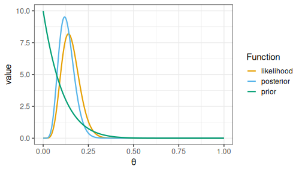
The figure shows that the majority of the mass in the posterior distribution is concentrated between 0 and 0.25. This implies that, given the available data and prior distribution, the model is fairly confident that the value of \(\theta\) is between these values. The peak of the posterior is at approximately 0.1 representing the most likely value. This aligns well with intuitive expectations about left-handedness in humans.
Communicating posterior information
The posterior distribution \(p(\theta | X)\) contains all the information about \(\theta\) given the data, chosen model, and the prior distribution. However, understanding a distribution in itself can be challenging, especially if it is multidimensional. To effectively communicate posterior information, methods to quantify the information contained in the posterior are needed. Two commonly used types of estimates are point estimates, such as the posterior mean, mode, and variance, and posterior intervals, which provide probabilities for ranges of values.
Two specific types of posterior intervals are often of interest:
Credible intervals (CIs): These intervals leave equal posterior mass below and above them, computed as posterior quantiles. For instance, a 90% CI would span the range between the 5% and 95% quantiles.
Defined boundary intervals: Computed as the posterior mass for specific parts of the parameter space, these intervals quantify the probability for given parameter conditions. For example, we might be interested in the posterior probability that \(\theta > 0\), \(0<\theta<0.5\), or \(\theta<0\) or \(\theta > 0.5\). These probabilities can be computed by integrating the posterior over the corresponding sets.
The following figures illustrate selected posterior intervals for the previous example along with the posterior mode, or maximum a posteriori (MAP) estimate.
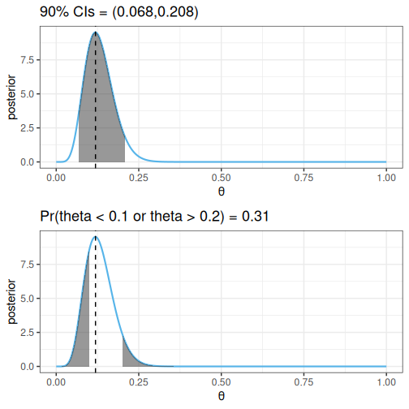
Grid approximation
Specifying a probabilistic model can be simple, but a common bottleneck in Bayesian data analysis is model fitting. Later in the course, we will begin using Stan, a state-of-the-art method for approximating the posterior. However, we’ll begin fitting probabilistic model using the grid approximation. This approach involves computing the unnormalized posterior distribution at a grid of evenly spaced values in the parameter space and can be specified as follows:
- Define a grid of parameter values.
- Compute the prior and likelihood on the grid.
- Multiply to get the unnormalized posterior.
- Normalize.
Now, we’ll implement the grid approximation for the handedness example in R.
Example 2: handedness with grid approximation
First, we’ll load the required packages, define the data variables, and the grid of parameter values
R
# Sample size
N <- 50
# 7/50 are left-handed
x <- 7
# Define a grid of points in the interval [0, 1], with 0.01 interval
delta <- 0.01
theta_grid <- seq(from = 0, to = 1, by = delta)
Computing the values of the likelihood, prior, and unnormalized posterior is straightforward. While you can compute these using for-loops, vectorization as used below, is a more efficient approach:
R
likelihood <- dbinom(x = x, size = N, prob = theta_grid)
prior <- dbeta(theta_grid, 1, 10)
posterior <- likelihood*prior
Next, the posterior needs to be normalized.
In practice, this means dividing the values by the area under the unnormalized posterior. The area is computed with the integral \[\int_0^1 p(\theta | X)_{\text{unnormalized}} d\theta,\] which is for a grid approximated function is the sum \[\sum_{\text{grid}} p(\theta | X)_{\text{unnormalized}} \cdot \delta,\] where \(\delta\) is the grid interval.
R
# Normalize
posterior <- posterior/(sum(posterior)*delta)
# Likelihood also normalized for better visualization
likelihood <- likelihood/(sum(likelihood)*delta)
Finally, we can plot these functions
R
# Make data frame
df1 <- data.frame(theta = theta_grid, likelihood, prior, posterior)
# Wide to long format
df1_l <- df1 %>%
gather(key = "Function", value = "value", -theta)
# Plot
p1 <- ggplot(df1_l,
aes(x = theta, y = value, color = Function)) +
geom_point(size = 2) +
geom_line(linewidth = 1) +
scale_color_grafify() +
labs(x = expression(theta))
p1
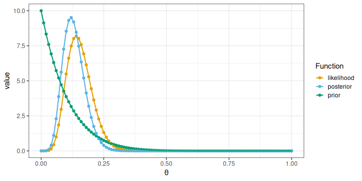
The points in the figure represent the values of the functions computed at the grid locations. The lines depict linear interpolations between these points.
Challenge
Experiment with different priors and examine their effects on the posterior. You could try, for example, different Beta distributions, the normal distribution, or the uniform distribution.
How does the shape of the prior impact the posterior?
What is the relationship between the posterior, data (likelihood) and the prior?
Grid approximation and posterior summaries
Next, we’ll learn how to compute point estimates and posterior intervals based on the approximate posterior obtained with the grid approximation.
Computing the posterior mean and variance is based on the definition of these statistics for continuous variables. The mean is defined as \[\int \theta \cdot p(\theta | X) d\theta,\] and can be computed using discrete integration: \[\sum_{\text{grid}} \theta \cdot p(\theta | X) \cdot \delta.\] Similarly, variance can be computed based on the definition \[\text{var}(\theta) = \int (\theta - \text{mean}(\theta))^2p(\theta | X)d\theta.\] Posterior mode is simply the grid value where the posterior is maximized.
In R, these statistics can be computed as follows:
R
data.frame(Estimate = c("Mode", "Mean", "Variance"),
Value = c(df1[which.max(df1$posterior), "theta"],
sum(df1$theta*df1$posterior*delta),
sum(df1$theta^2*df1$posterior*delta) -
sum(df1$theta*df1$posterior*delta)^2))
OUTPUT
Estimate Value
1 Mode 0.120000000
2 Mean 0.131147540
3 Variance 0.001837869Posterior intervals are also relatively easy to compute.
Finding the quantiles used to determine CIs is based on the cumulative distribution function of the posterior \(F(\theta) = \int_{\infty}^{\theta}p(y | X) dy\). The locations where the \(F(\theta) = 0.05\) and \(F(\theta) = 0.95\) define the 90% CIs.
Probabilities for certain parameter ranges are computed simply by integrating over the appropriate set, for example, \(Pr(\theta < 0.1) = \int_0^{0.1} p(\theta | X) d\theta.\)
Challenge
Compute the 90% CIs and the probability \(Pr(\theta < 0.1)\) for the handedness example.
R
# Quantiles
q5 <- theta_grid[which.max(cumsum(posterior)*delta > 0.05)]
q95 <- theta_grid[which.min(cumsum(posterior)*delta < 0.95)]
# Pr(theta < 0.1)
Pr_theta_under_0.1 <- sum(posterior[theta_grid < 0.1])*delta
print(paste0("90% CI = (", q5,",", q95,")"))
OUTPUT
[1] "90% CI = (0.07,0.21)"R
print(paste0("Pr(theta < 0.1) = ",
round(Pr_theta_under_0.1, 5)))
OUTPUT
[1] "Pr(theta < 0.1) = 0.20659"Example 3: Gamma model with grid approximation
Let’s investigate another model and implement a grid approximation to fit it.
The gamma distribution arises, for example, in applications that model the waiting time between consecutive events. Let’s model the following data points as independent realizations from a \(\Gamma(\alpha, \beta)\) distribution with unknown shape \(\alpha\) and rate \(\beta\) parameters:
R
X <- c(0.34, 0.2, 0.22, 0.77, 0.46, 0.73, 0.24, 0.66, 0.64)
We’ll estimate \(\alpha\) and \(\beta\) using the grid approximation. Similarly as before, we’ll first need to define a grid. Since there are two parameters the parameter space is 2-dimensional and the grid needs to be defined at all pairwise combinations of the points of the individual grids.
R
delta <- 0.1
alpha_grid <- seq(from = 0.01, to = 15, by = delta)
beta_grid <- seq(from = 0.01, to = 25, by = delta)
# Get pairwise combinations
df2 <- expand.grid(alpha = alpha_grid, beta = beta_grid)
Next, we’ll compute the likelihood. As we assumed the data points to be independently generated from the gamma distribution, the likelihood is the product of the likelihoods of individual observations.
R
# Loop over all alpha, beta combinations
for(i in 1:nrow(df2)) {
df2[i, "likelihood"] <- prod(
dgamma(x = X,
shape = df2[i, "alpha"],
rate = df2[i, "beta"])
)
}
Next, we’ll define priors for \(\alpha\) and \(\beta\). Only positive values are allowed, which should be reflected in the prior. We’ll use \(\Gamma\) priors with large variances.
Notice, that normalizing the posterior now requires integrating over both dimensions, hence the \(\delta^2\) below.
R
# Priors: alpha, beta ~ Gamma(2, .1)
df2 <- df2 %>%
mutate(prior = dgamma(x = alpha, 2, 0.1)*dgamma(x = beta, 2, 0.1))
# Posterior
df2 <- df2 %>%
mutate(posterior = prior*likelihood) %>%
mutate(posterior = posterior/(sum(posterior)*delta^2)) # Normalize
# Plot
p_joint_posterior <- df2 %>%
ggplot() +
geom_tile(aes(x = alpha, y = beta, fill = posterior)) +
scale_fill_gradientn(colours = rainbow(5)) +
labs(x = expression(alpha), y = expression(beta))
p_joint_posterior
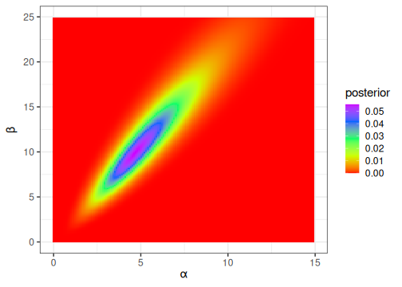
Next, we’ll compute the posterior mode, which is a point in the 2-dimensional parameter space.
R
df2[which.max(df2$posterior), c("alpha", "beta")]
OUTPUT
alpha beta
14898 4.71 9.91Often, in addition to the parameters of interest, the model contains parameters we are not interested in. For instance, we might only be interested in \(\alpha\), in which case \(\beta\) would be a ‘nuisance’ parameter. Nuisance parameters are part of the full (‘joint’) posterior, but they can be discarded by integrating the joint posterior over these parameters. A posterior integrated over some parameters is called a marginal posterior.
Let’s now compute the marginal posterior for \(\alpha\) by integrating over \(\beta\). Intuitively, it can be helpful to think of marginalization as a process where all of the joint posterior mass is drawn towards the \(\alpha\) axis, as if by a gravitational force.
R
# Get marginal posterior for alpha
alpha_posterior <- df2 %>%
group_by(alpha) %>%
summarize(posterior = sum(posterior)) %>%
mutate(posterior = posterior/(sum(posterior)*delta))
p_alpha_posterior <- alpha_posterior %>%
ggplot() +
geom_line(aes(x = alpha, y = posterior),
color = posterior_color,
linewidth = 1) +
labs(x = expression(alpha))
p_alpha_posterior
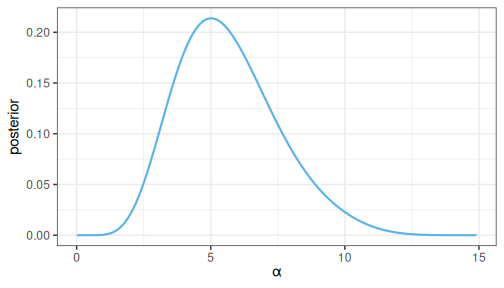
Challenge
Does the MAP of the joint posterior of \(\theta = (\alpha, \beta)\) correspond to the MAPs of the marginal posteriors of \(\alpha\) and \(\beta\)?
It is known that for the Gamma likelihood there exists a prior resulting in a posterior of the same distribution type. Such priors are called conjugate priors (see table).
Working with samples
The main limitation of the grid approximation is that it becomes impractical for models with even a moderate number of parameters. The reason is that the computational burden grows as \(O \{ \Delta^p \}\) where \(\Delta\) is the number of grid points per model parameter and \(p\) the number of parameters. This quickly becomes prohibitive, and the grid approximation is seldom used in practice. The standard approach to fitting Bayesian models is to draw samples from the posterior with Markov chain Monte Carlo (MCMC) methods. These methods are the topic of a later episode but we’ll anticipate this now by studying how posterior summaries can be computed based on samples.
Example 4: handedness with samples
Let’s take the beta-binomial model (beta prior, binomial likelihood) of the handedness analysis as our example. It is an instance of a model for which the posterior can be computed analytically. Given a prior \(\text{Beta}(\alpha, \beta)\) and likelihood \(\text{Bin}(x | N, \theta)\), the posterior is \[p(\theta | X) = \text{Beta}(\alpha + x, \beta + N - x).\] Let’s generate \(n = 1000\) samples from this posterior using the handedness data:
R
n <- 1000
theta_samples <- rbeta(n, 1 + 7, 10 + 50 - 7)
Plotting a histogram of these samples against the grid approximation posterior displays that both are indeed approximating the same distribution
R
ggplot() +
geom_histogram(data = theta_samples %>%
data.frame(theta = .),
aes(x = theta, y = after_stat(density)), bins = 50,
fill = posterior_color, color = "black") +
geom_line(data = df1,
aes(x = theta, y = posterior),
linewidth = 1.5) +
geom_line(data = df1,
aes(x = theta, y = posterior),
color = posterior_color) +
labs(x = expression(theta))
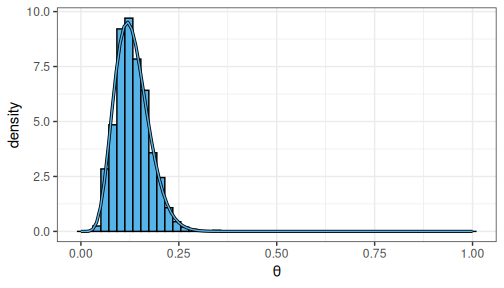
Computing posterior summaries from samples is easy. The posterior mean and variance are computed simply by taking the mean and variance of the samples, respectively. Posterior intervals are equally easy to compute: 90% CI is recovered from the appropriate quantiles and the probability of a certain parameter interval is the proportion of total samples within the interval.
Challenge
Compute the posterior mean, variance, 90% CI and \(Pr(\theta > 0.1)\) using the generated samples.
Posterior predictive distribution
Now we have learned how to fit a probabilistic model using the grid approximation and how to compute posterior summaries of the model parameters based on the fit or with posterior samples. An often interesting question that the posterior doesn’t directly answer is what do possible unobserved data values \(\tilde{X}\) look like, conditional on the observed values \(X\). In other words, what predictions does the model give?
The unknown value can be predicted using the posterior predictive distribution \(p(\tilde{X} | X) = \int p(\tilde{X} | \theta) p(\theta | X) d\theta\). Using samples, this distribution can be sampled from by first drawing a value \(\theta^s\) from the posterior and then generating a random value from the likelihood function \(p(\tilde{X} | \theta^s)\).
A posterior predictive distribution for the beta-binomial model, using the posterior samples of the previous example can be generated as
R
ppd <- rbinom(length(theta_samples), 50, prob = theta_samples)
In other words, this is the distribution of the number of left-handed people in a yet unseen sample of 50 people. Let’s plot the histogram of these samples and compare it to the observed data (red vertical line):
R
ggplot() +
geom_histogram(data = data.frame(ppd),
aes(x = ppd, y = after_stat(density)), binwidth = 1) +
geom_vline(xintercept = 7, color = "red")
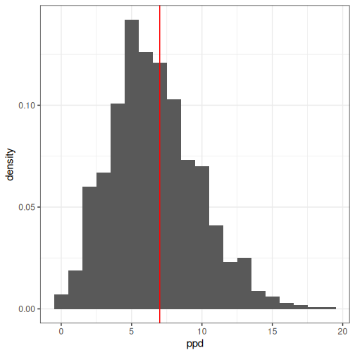
- Likelihood determines the probability of data conditional on the model parameters.
- Prior encodes beliefs about the model parameters without considering data.
- Posterior quantifies the probability of parameter values conditional on the data.
- The posterior is a compromise between the data and prior. The less data available, the greater the impact of the prior.
- The grid approximation is a method for inferring the (approximate) posterior distribution.
- Posterior information can be summarized with point estimates and posterior intervals.
- The marginal posterior is accessed by integrating over nuisance parameters.
- Usually, Bayesian models are fitted using methods that generate samples from the posterior.
Reading
- Bayesian Data Analysis (3rd ed.): Ch. 1-3
- Statistical Rethinking (2nd ed.): Ch. 1-3
- Bayes Rules!: Ch. 1-6
Content from Stan
Last updated on 2026-08-19 | Edit this page
Overview
Questions
- How can posterior samples be generated using Stan?
Objectives
Learn how to
- implement statistical models in Stan;
- generate posterior samples with Stan;
- extract and process samples generated with Stan.
Stan is a probabilistic programming language that can be used to specify probabilistic models and to generate samples from posterior distributions.
The standard workflow when using Stan is to first write the
statistical model in a separate text file, and then to call Stan from R
using cmdstanr, which interfaces with the underlying
CmdStan engine to perform the sampling. Instead of having to write
explicit mathematical formulas the model is specified using built-in
functions and sampling statements similar to written text. The sampling
process is performed with a Markov Chain Monte Carlo (MCMC) algorithm, a
topic of a later episode. For now, however, our focus is on
understanding how to execute it using Stan.
To get started, follow the instructions provided at https://mc-stan.org/cmdstanr/
to install cmdstanr and the underlying CmdStan backend on
your local computer.
Several R packages have been built that simplify Stan usage. For example, brms allows specifying models via R’s customary formula syntax, while bayesplot provides a library of plotting functions. In this lesson, however, we will first learn using Stan from the bottom-up, by writing Stan programs, extracting the posterior samples and performing subsequent analyses ourselves. Later, in episode 7, we’ll introduce the usage of some of these additional packages.
With Stan, you can fit models that have continuous parameters, but sampling from models with discrete parameters (e.g. clustering models) is not directly supported. In some cases, we can work around this by marginalizing out the discrete parameters, which makes the model fit possible in Stan. However, such workarounds are not always straightforward.
Basic program structure
A Stan program is organized into several blocks that collectively define the model. Typically, a Stan program includes at least the following blocks:
Data: This block is used to declare the input data. It specifies the types and dimensions of the data variables incorporated into the model.
Parameters: In this block, the model parameters are declared.
Model: The likelihood and prior distributions are included here through sampling statements.
For best practices, it is recommended to specify Stan programs in
separate text files with a .stan extension, which can then be read,
compiled, and sampled from R using cmdstanr.
Example 1: Binomial model
The following Stan program specifies the Beta-binomial model, and consists of data, parameters, and model blocks.
The data variables are the total sample size \(N\) and \(x\), the outcome of a binary variable (coin
flip, handedness etc.). The declared data type is int for
integer, and the variables have a lower bound 1 and 0 for \(N\) and \(x\), respectively. Notice that each line
ends with a semicolon.
In the parameters block we declare \(\theta\), the probability for a success. Since this parameter is a probability, it is a real number restricted between 0 and 1.
In the model block, the likelihood is specified with the sampling
statement x ~ binomial(N, theta). This line includes the
binomial distribution \(\text{Binomial}(x | N,
theta)\) in the target distribution. The prior is set similarly,
and omitting the prior implies a uniform prior. Comments can be included
after two forward slashes.
STAN
data{
int<lower=1> N;
int<lower=0> x;
}
parameters{
real<lower=0, upper=1> theta;
}
model{
// Likelihood
x ~ binomial(N, theta);
// Uniform prior
}When the Stan program has been saved we need to compile it. In R,
this is done by running the following line, where
"binomial_model.stan" is the path of the program file.
R
binomial_model <- cmdstan_model("binomial_model.stan")
Once the program has been compiled, it can be used to generate the
posterior samples by calling the $sample() method on the
model object. The data need to be supplied as a list.
R
binom_data <- list(N = 50, x = 7)
binom_samples <- binomial_model$sample(data = binom_data,
seed = 135)
OUTPUT
Running MCMC with 4 sequential chains...
Chain 1 Iteration: 1 / 2000 [ 0%] (Warmup)
Chain 1 Iteration: 100 / 2000 [ 5%] (Warmup)
Chain 1 Iteration: 200 / 2000 [ 10%] (Warmup)
Chain 1 Iteration: 300 / 2000 [ 15%] (Warmup)
Chain 1 Iteration: 400 / 2000 [ 20%] (Warmup)
Chain 1 Iteration: 500 / 2000 [ 25%] (Warmup)
Chain 1 Iteration: 600 / 2000 [ 30%] (Warmup)
Chain 1 Iteration: 700 / 2000 [ 35%] (Warmup)
Chain 1 Iteration: 800 / 2000 [ 40%] (Warmup)
Chain 1 Iteration: 900 / 2000 [ 45%] (Warmup)
Chain 1 Iteration: 1000 / 2000 [ 50%] (Warmup)
Chain 1 Iteration: 1001 / 2000 [ 50%] (Sampling)
Chain 1 Iteration: 1100 / 2000 [ 55%] (Sampling)
Chain 1 Iteration: 1200 / 2000 [ 60%] (Sampling)
Chain 1 Iteration: 1300 / 2000 [ 65%] (Sampling)
Chain 1 Iteration: 1400 / 2000 [ 70%] (Sampling)
Chain 1 Iteration: 1500 / 2000 [ 75%] (Sampling)
Chain 1 Iteration: 1600 / 2000 [ 80%] (Sampling)
Chain 1 Iteration: 1700 / 2000 [ 85%] (Sampling)
Chain 1 Iteration: 1800 / 2000 [ 90%] (Sampling)
Chain 1 Iteration: 1900 / 2000 [ 95%] (Sampling)
Chain 1 Iteration: 2000 / 2000 [100%] (Sampling)
Chain 1 finished in 0.0 seconds.
Chain 2 Iteration: 1 / 2000 [ 0%] (Warmup)
Chain 2 Iteration: 100 / 2000 [ 5%] (Warmup)
Chain 2 Iteration: 200 / 2000 [ 10%] (Warmup)
Chain 2 Iteration: 300 / 2000 [ 15%] (Warmup)
Chain 2 Iteration: 400 / 2000 [ 20%] (Warmup)
Chain 2 Iteration: 500 / 2000 [ 25%] (Warmup)
Chain 2 Iteration: 600 / 2000 [ 30%] (Warmup)
Chain 2 Iteration: 700 / 2000 [ 35%] (Warmup)
Chain 2 Iteration: 800 / 2000 [ 40%] (Warmup)
Chain 2 Iteration: 900 / 2000 [ 45%] (Warmup)
Chain 2 Iteration: 1000 / 2000 [ 50%] (Warmup)
Chain 2 Iteration: 1001 / 2000 [ 50%] (Sampling)
Chain 2 Iteration: 1100 / 2000 [ 55%] (Sampling)
Chain 2 Iteration: 1200 / 2000 [ 60%] (Sampling)
Chain 2 Iteration: 1300 / 2000 [ 65%] (Sampling)
Chain 2 Iteration: 1400 / 2000 [ 70%] (Sampling)
Chain 2 Iteration: 1500 / 2000 [ 75%] (Sampling)
Chain 2 Iteration: 1600 / 2000 [ 80%] (Sampling)
Chain 2 Iteration: 1700 / 2000 [ 85%] (Sampling)
Chain 2 Iteration: 1800 / 2000 [ 90%] (Sampling)
Chain 2 Iteration: 1900 / 2000 [ 95%] (Sampling)
Chain 2 Iteration: 2000 / 2000 [100%] (Sampling)
Chain 2 finished in 0.0 seconds.
Chain 3 Iteration: 1 / 2000 [ 0%] (Warmup)
Chain 3 Iteration: 100 / 2000 [ 5%] (Warmup)
Chain 3 Iteration: 200 / 2000 [ 10%] (Warmup)
Chain 3 Iteration: 300 / 2000 [ 15%] (Warmup)
Chain 3 Iteration: 400 / 2000 [ 20%] (Warmup)
Chain 3 Iteration: 500 / 2000 [ 25%] (Warmup)
Chain 3 Iteration: 600 / 2000 [ 30%] (Warmup)
Chain 3 Iteration: 700 / 2000 [ 35%] (Warmup)
Chain 3 Iteration: 800 / 2000 [ 40%] (Warmup)
Chain 3 Iteration: 900 / 2000 [ 45%] (Warmup)
Chain 3 Iteration: 1000 / 2000 [ 50%] (Warmup)
Chain 3 Iteration: 1001 / 2000 [ 50%] (Sampling)
Chain 3 Iteration: 1100 / 2000 [ 55%] (Sampling)
Chain 3 Iteration: 1200 / 2000 [ 60%] (Sampling)
Chain 3 Iteration: 1300 / 2000 [ 65%] (Sampling)
Chain 3 Iteration: 1400 / 2000 [ 70%] (Sampling)
Chain 3 Iteration: 1500 / 2000 [ 75%] (Sampling)
Chain 3 Iteration: 1600 / 2000 [ 80%] (Sampling)
Chain 3 Iteration: 1700 / 2000 [ 85%] (Sampling)
Chain 3 Iteration: 1800 / 2000 [ 90%] (Sampling)
Chain 3 Iteration: 1900 / 2000 [ 95%] (Sampling)
Chain 3 Iteration: 2000 / 2000 [100%] (Sampling)
Chain 3 finished in 0.0 seconds.
Chain 4 Iteration: 1 / 2000 [ 0%] (Warmup)
Chain 4 Iteration: 100 / 2000 [ 5%] (Warmup)
Chain 4 Iteration: 200 / 2000 [ 10%] (Warmup)
Chain 4 Iteration: 300 / 2000 [ 15%] (Warmup)
Chain 4 Iteration: 400 / 2000 [ 20%] (Warmup)
Chain 4 Iteration: 500 / 2000 [ 25%] (Warmup)
Chain 4 Iteration: 600 / 2000 [ 30%] (Warmup)
Chain 4 Iteration: 700 / 2000 [ 35%] (Warmup)
Chain 4 Iteration: 800 / 2000 [ 40%] (Warmup)
Chain 4 Iteration: 900 / 2000 [ 45%] (Warmup)
Chain 4 Iteration: 1000 / 2000 [ 50%] (Warmup)
Chain 4 Iteration: 1001 / 2000 [ 50%] (Sampling)
Chain 4 Iteration: 1100 / 2000 [ 55%] (Sampling)
Chain 4 Iteration: 1200 / 2000 [ 60%] (Sampling)
Chain 4 Iteration: 1300 / 2000 [ 65%] (Sampling)
Chain 4 Iteration: 1400 / 2000 [ 70%] (Sampling)
Chain 4 Iteration: 1500 / 2000 [ 75%] (Sampling)
Chain 4 Iteration: 1600 / 2000 [ 80%] (Sampling)
Chain 4 Iteration: 1700 / 2000 [ 85%] (Sampling)
Chain 4 Iteration: 1800 / 2000 [ 90%] (Sampling)
Chain 4 Iteration: 1900 / 2000 [ 95%] (Sampling)
Chain 4 Iteration: 2000 / 2000 [100%] (Sampling)
Chain 4 finished in 0.0 seconds.
All 4 chains finished successfully.
Mean chain execution time: 0.0 seconds.
Total execution time: 0.5 seconds.With the default settings, CmdStan (via cmdstanr) runs 4
MCMC chains. Each chain runs for 2000 total iterations (more about this
in the next episode). During the run, CmdStan provides real-time
progress information, aiding in estimating the running time,
particularly for complex models or extensive datasets. In this case, the
sampling took only a fraction of a second.
Running binom_samples$summary(), a summary for the model
parameter \(\theta\) is printed,
facilitating a quick review of the results.
R
binom_samples$summary()
OUTPUT
# A tibble: 2 × 10
variable mean median sd mad q5 q95 rhat ess_bulk
<chr> <dbl> <dbl> <dbl> <dbl> <dbl> <dbl> <dbl> <dbl>
1 lp__ -22.8 -22.5 0.743 0.292 -24.1 -22.3 1.00 1634.
2 theta 0.156 0.153 0.0484 0.0477 0.0851 0.240 1.00 1214.
# ℹ 1 more variable: ess_tail <dbl>This summary is returned as a data frame, allowing easy manipulation
using, for example, tidyverse tools. Often, however, it is necessary to
process the individual samples. These can be extracted as a matrix using
the $draws() from cmdstanr method:
R
theta_samples <- binom_samples$draws("theta", format = "matrix")
Now we can use the methods presented in the previous Episode to compute posterior summaries, credible intervals and to generate figures.
Challenge
Compute the 95% credible intervals from the samples drawn with Stan. What is the posterior probability that \(\theta \in (0.05, 0.15)\)? Plot a histogram of the posterior samples.
R
CI95 <- quantile(theta_samples, probs = c(0.025, 0.975))
theta_between_0.05_0.15 <- mean(theta_samples>0.05 & theta_samples<0.15)
plot_data <- data.frame(theta = as.vector(theta_samples))
p <- ggplot(data = plot_data) +
geom_histogram(aes(x = theta), bins = 30) +
coord_cartesian(xlim = c(0, 1))
print(p)
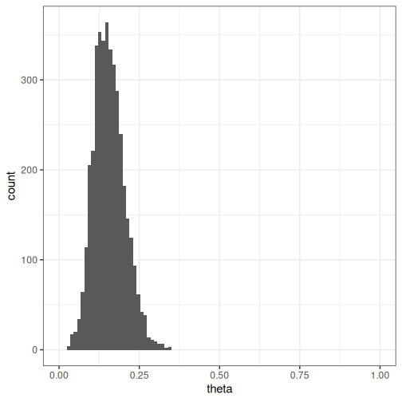
Challenge
Try modifying the Stan program so that you add a \(\text{Beta}(\alpha, \beta)\) prior for \(\theta\).
Can you modify the Stan program further so that you can set the hyperparameters \(\alpha, \beta\) as part of the data? What is the benefit of using this approach?
Modifying the data block so that it declares the hyperparameters as
data (e.g. real<lower=0> alpha; and
real<lower=0> beta;) allows the prior parameters to
be specified from R rather than hard-coded in the Stan program. This
allows changing prior parameters without having to modify and recompile
the program.
Additional Stan blocks
In addition to the data, parameters, and model blocks there are additional blocks that can be included in the program.
Functions: For user-defined functions. This block must be the first in the Stan program. It allows users to define custom functions.
Transformed data: This block is used for transformations of the data variables. It is often employed to preprocess or modify the input data before it is used in the main model. Common tasks include standardization, scaling, or other data adjustments.
Transformed parameters: In this block, transformations of the parameters are defined. If transformed parameters are used on the left-hand side of sampling statements in the model block, the Jacobian adjustment for the posterior density needs to be included in the model block as well (see).
Generated quantities: This block is used to define quantities based on both data and model parameters. These quantities are not part of the model but are useful for post-processing. Each quantity is evaluated for every posterior sample, producing a corresponding posterior distribution.
We will make use of these additional structures in subsequent illustrations.
Example 2: Normal model
Next, let’s implement the normal model in Stan. First we’ll generate some data \(X\) from a normal model with unknown mean and standard deviation parameters \(\mu\) and \(\sigma\):
R
# Sample size
N <- 99
# Generate data with unknown parameters
unknown_sigma <- runif(1, 0, 10)
unknown_mu <- runif(1, -5, 5)
X <- rnorm(n = N,
mean = unknown_mu,
sd = unknown_sigma)
normal_data <- list(N = N, X = X)
A common and useful step in model development is to simulate data from the model using known parameter values, fit the model to the simulated data, and compare the estimated parameters with the values used to generate the data. If the estimates do not align with the true parameters, this may indicate problems with the model specification, simulation procedure, identifiability, or fitting algorithm.
The Stan program for the normal model is specified in the next code chunk. It introduces a new data type (vector) and leverages vectorization in the likelihood statement which speeds up the sampling. In the end of the program, a generated quantities block is included which generates new data (X_tilde) from the posterior predictive distribution. As mentioned above, each X_tilde sample is generated by drawing a random realization from the normal distribution for each posterior sample \((\mu, \sigma)\).
STAN
data {
int<lower=0> N;
vector[N] X;
}
parameters {
real mu;
real<lower=0> sigma;
}
model {
// Vectorized likelihood
// Equivalent to for(i in 1:N) X[i] ~ normal(mu, sigma);
X ~ normal(mu, sigma);
// Priors
mu ~ normal(0, 1);
sigma ~ gamma(2, 1);
}
generated quantities {
real X_tilde;
X_tilde = normal_rng(mu, sigma);
}Let’s fit the model to the data using cmdstanr:
R
normal_samples <- normal_model$sample(data = normal_data)
OUTPUT
Running MCMC with 4 sequential chains...
Chain 1 Iteration: 1 / 2000 [ 0%] (Warmup)
Chain 1 Iteration: 100 / 2000 [ 5%] (Warmup)
Chain 1 Iteration: 200 / 2000 [ 10%] (Warmup)
Chain 1 Iteration: 300 / 2000 [ 15%] (Warmup)
Chain 1 Iteration: 400 / 2000 [ 20%] (Warmup)
Chain 1 Iteration: 500 / 2000 [ 25%] (Warmup)
Chain 1 Iteration: 600 / 2000 [ 30%] (Warmup)
Chain 1 Iteration: 700 / 2000 [ 35%] (Warmup)
Chain 1 Iteration: 800 / 2000 [ 40%] (Warmup)
Chain 1 Iteration: 900 / 2000 [ 45%] (Warmup)
Chain 1 Iteration: 1000 / 2000 [ 50%] (Warmup)
Chain 1 Iteration: 1001 / 2000 [ 50%] (Sampling)
Chain 1 Iteration: 1100 / 2000 [ 55%] (Sampling)
Chain 1 Iteration: 1200 / 2000 [ 60%] (Sampling)
Chain 1 Iteration: 1300 / 2000 [ 65%] (Sampling)
Chain 1 Iteration: 1400 / 2000 [ 70%] (Sampling)
Chain 1 Iteration: 1500 / 2000 [ 75%] (Sampling)
Chain 1 Iteration: 1600 / 2000 [ 80%] (Sampling)
Chain 1 Iteration: 1700 / 2000 [ 85%] (Sampling)
Chain 1 Iteration: 1800 / 2000 [ 90%] (Sampling)
Chain 1 Iteration: 1900 / 2000 [ 95%] (Sampling)
Chain 1 Iteration: 2000 / 2000 [100%] (Sampling)
Chain 1 finished in 0.0 seconds.
Chain 2 Iteration: 1 / 2000 [ 0%] (Warmup)
Chain 2 Iteration: 100 / 2000 [ 5%] (Warmup)
Chain 2 Iteration: 200 / 2000 [ 10%] (Warmup)
Chain 2 Iteration: 300 / 2000 [ 15%] (Warmup)
Chain 2 Iteration: 400 / 2000 [ 20%] (Warmup)
Chain 2 Iteration: 500 / 2000 [ 25%] (Warmup)
Chain 2 Iteration: 600 / 2000 [ 30%] (Warmup)
Chain 2 Iteration: 700 / 2000 [ 35%] (Warmup)
Chain 2 Iteration: 800 / 2000 [ 40%] (Warmup)
Chain 2 Iteration: 900 / 2000 [ 45%] (Warmup)
Chain 2 Iteration: 1000 / 2000 [ 50%] (Warmup)
Chain 2 Iteration: 1001 / 2000 [ 50%] (Sampling)
Chain 2 Iteration: 1100 / 2000 [ 55%] (Sampling)
Chain 2 Iteration: 1200 / 2000 [ 60%] (Sampling)
Chain 2 Iteration: 1300 / 2000 [ 65%] (Sampling)
Chain 2 Iteration: 1400 / 2000 [ 70%] (Sampling)
Chain 2 Iteration: 1500 / 2000 [ 75%] (Sampling)
Chain 2 Iteration: 1600 / 2000 [ 80%] (Sampling)
Chain 2 Iteration: 1700 / 2000 [ 85%] (Sampling)
Chain 2 Iteration: 1800 / 2000 [ 90%] (Sampling)
Chain 2 Iteration: 1900 / 2000 [ 95%] (Sampling)
Chain 2 Iteration: 2000 / 2000 [100%] (Sampling)
Chain 2 finished in 0.0 seconds.
Chain 3 Iteration: 1 / 2000 [ 0%] (Warmup)
Chain 3 Iteration: 100 / 2000 [ 5%] (Warmup)
Chain 3 Iteration: 200 / 2000 [ 10%] (Warmup)
Chain 3 Iteration: 300 / 2000 [ 15%] (Warmup)
Chain 3 Iteration: 400 / 2000 [ 20%] (Warmup)
Chain 3 Iteration: 500 / 2000 [ 25%] (Warmup)
Chain 3 Iteration: 600 / 2000 [ 30%] (Warmup)
Chain 3 Iteration: 700 / 2000 [ 35%] (Warmup)
Chain 3 Iteration: 800 / 2000 [ 40%] (Warmup)
Chain 3 Iteration: 900 / 2000 [ 45%] (Warmup)
Chain 3 Iteration: 1000 / 2000 [ 50%] (Warmup)
Chain 3 Iteration: 1001 / 2000 [ 50%] (Sampling)
Chain 3 Iteration: 1100 / 2000 [ 55%] (Sampling)
Chain 3 Iteration: 1200 / 2000 [ 60%] (Sampling)
Chain 3 Iteration: 1300 / 2000 [ 65%] (Sampling)
Chain 3 Iteration: 1400 / 2000 [ 70%] (Sampling)
Chain 3 Iteration: 1500 / 2000 [ 75%] (Sampling)
Chain 3 Iteration: 1600 / 2000 [ 80%] (Sampling)
Chain 3 Iteration: 1700 / 2000 [ 85%] (Sampling)
Chain 3 Iteration: 1800 / 2000 [ 90%] (Sampling)
Chain 3 Iteration: 1900 / 2000 [ 95%] (Sampling)
Chain 3 Iteration: 2000 / 2000 [100%] (Sampling)
Chain 3 finished in 0.0 seconds.
Chain 4 Iteration: 1 / 2000 [ 0%] (Warmup)
Chain 4 Iteration: 100 / 2000 [ 5%] (Warmup)
Chain 4 Iteration: 200 / 2000 [ 10%] (Warmup)
Chain 4 Iteration: 300 / 2000 [ 15%] (Warmup)
Chain 4 Iteration: 400 / 2000 [ 20%] (Warmup)
Chain 4 Iteration: 500 / 2000 [ 25%] (Warmup)
Chain 4 Iteration: 600 / 2000 [ 30%] (Warmup)
Chain 4 Iteration: 700 / 2000 [ 35%] (Warmup)
Chain 4 Iteration: 800 / 2000 [ 40%] (Warmup)
Chain 4 Iteration: 900 / 2000 [ 45%] (Warmup)
Chain 4 Iteration: 1000 / 2000 [ 50%] (Warmup)
Chain 4 Iteration: 1001 / 2000 [ 50%] (Sampling)
Chain 4 Iteration: 1100 / 2000 [ 55%] (Sampling)
Chain 4 Iteration: 1200 / 2000 [ 60%] (Sampling)
Chain 4 Iteration: 1300 / 2000 [ 65%] (Sampling)
Chain 4 Iteration: 1400 / 2000 [ 70%] (Sampling)
Chain 4 Iteration: 1500 / 2000 [ 75%] (Sampling)
Chain 4 Iteration: 1600 / 2000 [ 80%] (Sampling)
Chain 4 Iteration: 1700 / 2000 [ 85%] (Sampling)
Chain 4 Iteration: 1800 / 2000 [ 90%] (Sampling)
Chain 4 Iteration: 1900 / 2000 [ 95%] (Sampling)
Chain 4 Iteration: 2000 / 2000 [100%] (Sampling)
Chain 4 finished in 0.0 seconds.
All 4 chains finished successfully.
Mean chain execution time: 0.0 seconds.
Total execution time: 0.5 seconds.Next, we’ll extract posterior samples and generate a plot for the joint, and marginal posteriors. The true unknown parameter values are included in the plots in red.
R
# Extract parameter samples
par_samples <- normal_samples$draws(c("mu", "sigma"), format = "df")
# Full posterior
p_posterior <- ggplot(data = par_samples) +
geom_point(aes(x = mu, y = sigma)) +
annotate("point", x = unknown_mu, y = unknown_sigma,
color = "red", size = 5)
# Marginal posteriors
p_marginals <- ggplot(data = par_samples %>%
as.data.frame() %>%
tidyr::pivot_longer(cols = c(mu, sigma))) +
geom_histogram(aes(x = value), bins = 40) +
geom_vline(data = data.frame(
name = c("mu", "sigma"),
value = c(unknown_mu, unknown_sigma)
),
aes(xintercept = value), color = "red", linewidth = 1) +
facet_wrap(~name, scales = "free")
p <- cowplot::plot_grid(p_posterior, p_marginals, ncol = 1)
print(p)
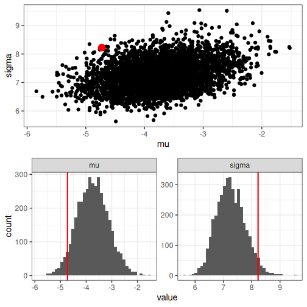
Let’s also plot the posterior predictive distribution samples histogram and compare it to that of the data.
R
PPD <- normal_samples$draws("X_tilde", format = "df")$X_tilde
PPD <- data.frame(X_tilde = PPD)
obs_data <- data.frame(X = X)
p_PPD <- ggplot() +
geom_histogram(data = PPD,
aes(x = X_tilde, y = after_stat(density)),
bins = 30, fill = posterior_color) +
geom_histogram(data = obs_data,
aes(x = X, y = after_stat(density)),
bins = 30, alpha = 0.5)
print(p_PPD)
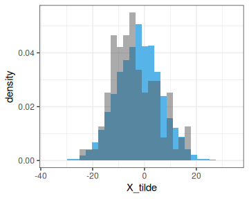
Example 3: Linear regression
Challenge
Write a Stan program for linear regression with one dependent variable.
Generate data from a linear model and use the Stan program to estimate the intercept \(\alpha\), slope \(\beta\), and deviation term \(\sigma\).
STAN
data {
int<lower=0> N; // Sample size
vector[N] x; // x-values
vector[N] y; // y-values
}
parameters {
real alpha; // intercept
real beta; // slope
real<lower=0> sigma; // noise
}
model {
// Likelihood
y ~ normal(alpha + beta * x, sigma);
// Priors
alpha ~ normal(0, 1);
beta ~ normal(0, 1);
sigma ~ inv_gamma(1, 1);
}Challenge
Modify the program for linear regression with \(M\) predictor variables.
STAN
data {
int<lower=0> N; // Sample size
int<lower=0> M; // Number of features
matrix[N, M] x; // x-values
vector[N] y; // y-values
}
parameters {
real alpha; // intercept
vector[M] beta; // slopes
real<lower=0> sigma; // noise
}
model {
// Likelihood
y ~ normal(alpha + x * beta, sigma);
// Priors
alpha ~ normal(0, 1);
beta ~ normal(0, 1);
sigma ~ inv_gamma(1, 1);
}- Stan is a tool for efficient posterior distribution sample generation.
- A Stan program is specified in a separate
.stanfile consisting of code blocks, and can be compiled and sampled from R usingcmdstanr. - Subsequent analysis of the posterior samples is performed outside Stan.
After this episode, you should be able to use Stan to fit probabilistic models by:
- Writing Stan model code, including:
- data types and declarations,
- program blocks,
- sampling statements, and
- data, parameters, priors, the model, and generated quantities.
- Providing data to the model.
- Compiling and fitting the model.
- Accessing the model output and posterior samples.
- Manipulating posterior samples.
- Visualizing the results.
Resources
- Official release paper: https://www.jstatsoft.org/article/view/v076i01
- Stan User’s Guide: https://mc-stan.org/docs/stan-users-guide/
- Stan Reference Manual: https://mc-stan.org/docs/reference-manual/
- Stan Functions Reference: https://mc-stan.org/docs/functions-reference/
- Stan Discourse Forum: https://discourse.mc-stan.org
- Stan Case Studies: https://mc-stan.org/users/documentation/case-studies
Reading
- BDA3: Ch. 12.6, Appendix C
- Bayes Rules!: Ch. 6.2
Content from Markov chain Monte Carlo
Last updated on 2026-08-19 | Edit this page
Overview
Questions
- How does Stan generate the posterior samples?
Objectives
Learn:
- the basic idea of the Metropolis–Hastings algorithm;
- to assess the convergence of Markov chain Monte Carlo simulations;
- to implement a random-walk Metropolis–Hastings algorithm.
The standard solution to fitting probabilistic models is to generate random samples from the posterior distribution. In the previous episode, we learned how to generate posterior samples using Stan without knowing how the samples are generated. In this episode, we’ll study Markov chain Monte Carlo (MCMC) methods, a class of sampling algorithms used by Stan under the hood.
Metropolis-Hastings algorithm
MCMC methods draw samples from the posterior distribution by constructing sequences (chains) of values in the parameter space. If these algorithms are ran long enough, convergence to posterior (or to other specified target density) is guaranteed. This means that that if the chain is run long enough, the samples will eventually start approximating the posterior distribution. While there are many MCMC algorithms, we will mainly focus on the Metropolis-Hastings (MH) algorithm outlined below.
A chain is initialized at value \(\theta^{0}\), which can be manually set or random. The only precondition is that the target distribution has positive mass at the location, \(p(\theta^{0} | X) > 0\). Then, a candidate value \(\theta^*\) for the next iteration is generated from a proposal distribution \(T_i\). An often-used solution is the normal distribution centered at the current value, \(\theta^* \sim N(\theta^{i}, \sigma^2)\). This is where the term “Markov chain” comes from, the value of each element depends only on the previous one.
Next, the proposal \(\theta^*\) is either accepted or rejected based on the following ratio:
\[r = \frac{p(\theta^* | X) / T_i(\theta^* | \theta^{i})}{p(\theta^i | X) / T_*(\theta^{i} | \theta^{*})}.\] The proposal is accepted with probability \(\min(r, 1)\), in which case the next element in the chain is \(\theta^{i+1} = \theta^*\). If the proposal is not accepted the chain stays at the current value, \(\theta^{i+1} = \theta^{i}.\)
This approach induces directional randomness in the chain; proposals towards higher density areas are generally accepted but transitions away from it are also possible. In situations where the transition density is symmetric, such as with the normal distribution, \(r\) reduces simply to the ratio of the posterior values, and all proposals toward higher posterior density areas are accepted.
Example: Banana distribution
Let’s implement the MH algorithm in R and use it to generate posterior samples from the following statistical model:
\[X \sim N(\theta_1 + \theta_2^2, 1) \\ \theta_1, \theta_2 \sim N(0, 1),\]
where \(X\) is univariate data and \(\theta_1, \theta_2\) the parameters.
Helper functions
We begin by writing some helper functions that carry out the incremental steps of the MH algorithm.
First, we need a proposal generator. Let’s use the two-dimensional
normal with identity covariance scaled by a scalar
jump_scale.
R
set.seed(12)
generate_proposal <- function(pars_now, jump_scale = 0.1) {
n_pars <- length(pars_now)
# Random draw from multivariate normal
theta_star <- mvtnorm::rmvnorm(1,
mean = pars_now,
sigma = jump_scale*diag(n_pars))
return(theta_star)
}
Running MH also requires computing the (unnormalized) posterior
density at the proposed parameter values. This function returns the log
posterior value at the location pars. The density is
computed on log scale to avoid issues with numerical precision.
R
get_log_target_value <- function(X, pars) {
# log(likelihood)
sum(
dnorm(X,
mean = pars[1] + pars[2]^2,
sd = 1,
log = TRUE)
) +
# log(prior)
dnorm(pars[1], 0, 1, log = TRUE) +
dnorm(pars[2], 0, 1, log = TRUE)
}
Then, we’ll write a function that computes the acceptance ratio \(r\). Since the proposal is symmetric, the expression reduces to the ratio of the posterior densities of the proposed and current parameter values. Notice that a ratio on a log scale is equal to the difference of logarithms.
R
# Compute ratio
get_ratio <- function(X, pars_now, pars_proposal) {
r <- exp(
get_log_target_value(X, pars_proposal) -
get_log_target_value(X, pars_now)
)
return(r)
}
Finally, we can wrap the helpers in a function that loops over the algorithm iterations.
R
MH_sampler <- function(X, # Data
inits, # Initial values
n_samples = 1000, # Number of iterations
jump_scale = 0.1 # Proposal jump variance
) {
# Matrix for samples
pars <- matrix(nrow = n_samples, ncol = length(inits))
# Set initial values
pars[1, ] <- inits
# Generate samples
for(i in 2:n_samples) {
# Current parameters
pars_now <- pars[i-1, ]
# Proposal
pars_proposal <- generate_proposal(pars_now, jump_scale)
# Ratio
r <- get_ratio(X, pars_now, pars_proposal)
r <- min(1, r)
# Accept proposal?
move <- sample(x = c(TRUE, FALSE),
size = 1,
prob = c(r, 1-r))
# OR:
# move <- runif(n = 1, min = 0, max = 1) <= r
if(move) {
pars[i, ] <- pars_proposal
} else {
pars[i, ] <- pars_now
}
}
pars <- data.frame(pars)
return(pars)
}
Run MH
Now we can try out our MH implementation. Let’s use the simulated
data points stored in vector X:
R
X <- c(3.78, 2.76, 2.84, 2.92, 1.3, 3.93, 3.69, 2.28, 2.81, 0.71)
We’ll generate 1000 samples with an initial value (0, 5) and jump scale 0.01. The trajectory of samples is plotted over the posterior density computed with the grid approximation.
R
# Draw samples
samples1 <- MH_sampler(X,
inits = c(0, 5),
n_samples = 1000,
jump_scale = 0.01)
colnames(samples1) <- c("theta1", "theta2")
# Add column for sample index
samples1$sample <- 1:nrow(samples1)
# Grid approximation
delta <- 0.05
df_grid <- expand.grid(seq(-4, 4, by = delta),
seq(-4, 5, by = delta)) %>%
set_colnames(c("theta1", "theta2"))
ERROR
Error in `set_colnames()`:
! could not find function "set_colnames"R
for(i in 1:nrow(df_grid)) {
df_grid[i, "likelihood"] <- prod(
dnorm(X,
df_grid[i, "theta1"] + df_grid[i, "theta2"]^2,
1)
)
}
ERROR
Error:
! object 'df_grid' not foundR
df_grid <- df_grid %>%
mutate(prior = dnorm(theta1, 0, 1)*dnorm(theta2, 0, 1)) %>%
mutate(posterior = prior*likelihood) %>%
mutate(posterior = posterior / (sum(posterior)*delta^2))
ERROR
Error:
! object 'df_grid' not foundR
# Plot
p_grid <- ggplot() +
geom_tile(data = df_grid,
aes(x = theta1, y = theta2, fill = posterior)) +
scale_fill_gradientn(colours = rainbow(5))
ERROR
Error:
! object 'df_grid' not foundR
# Plot joint posterior samples
p_MH1 <- p_grid +
geom_path(data = samples1,
aes(x = theta1, y = theta2))
ERROR
Error:
! object 'p_grid' not foundR
print(p_MH1)
ERROR
Error:
! object 'p_MH1' not foundLooking at the figure, a few observations are evident. Firstly, despite the chosen initial value being moderately far from the high-density areas of the posterior, the algorithm quickly converges to the target region. This rapid convergence is due to the fact that proposals toward higher density areas are favored. In fact, they are always accepted when the proposals are symmetric (\(T_i(\theta^* | \theta^{i})=T_*(\theta^{i} | \theta^*)\))! However, it’s important to note that such swift convergence is not guaranteed in all scenarios. In high dimensional cases (several model parameters), the probability of proposing a ‘wrong’ direction is high (see curse of dimensionality).
Secondly, the samples before convergence introduce bias to the posterior approximation.
Finally, the posterior is not fully explored; no samples are generated from the lower mode in the figure. This highlights the fact that covergence doesn’t guarantee a set of samples representative of the target.
Challenge
Consider how you could address the two issues raised above:
- Initial unconverged samples introduce a bias.
- The sampler may not have explored the target distribution properly.
Try different standard deviations for the proposal distributions in
the example above by changing the parameter jump_scale. How
does this affect the inference and convergence?
Assessing convergence
Although convergence of MCMC is theoretically guaranteed, in practice, this is not always the case. Monitoring convergence is an important step in utilizing MCMC to ensure the reliability of recovered results. Depending on the used model, initial values, then amount of data, and other factors can cause convergence issues. Earlier, we mentioned two common complications, and here we will list a few more, along with actions that can alleviate the issues.
Slow convergence can occur when the proposals are not far enough from the current value, and the chain advances too slowly.
Incomplete exploration: there are insuffiecient amount samples from some significant areas.
A large proportion of the proposals is rejected when the proposal distribution is not appropriate for the target leading to inefficient sampling.
Sample autocorrelation: Consecutive samples are close to each other. Ideally, we’d like to generate independent samples from the target. High sample autocorrelation can be caused by several factors, including the ones mentioned in the previous points.
These issues can be remedied with:
Running multiple long chains with distinct random initial values.
Discarding the early proportion of the chain as warm-up.
Setting an appropriate proposal distribution.
There are statistics that have been developed to help monitor convergence, such as effective sample size and \(\hat{R}\). Effective sample size estimates how many independent samples have been generated. Ideally, this number should be close to the total number of iterations the sampler has been run for. \(\hat{R}\), on the other hand, measures chain mixing, that is, how well the chains agree with each other and is computed by comparing variances within each chain to the total variance across all samples. Usually, values of \(\hat{R} > 1.1\) are considered as signaling convergence issues. The Stan development team recommends using 1.05 as the limit.
Besides statistics, visual evaluation of the samples can be useful. Trace plots refer to graphs where the marginal posterior samples are plotted against sample index. Trace plots can be used to investigate convergence and mixing properties, and can reveal, for example, multimodality.
In Stan, many of the above-mentioned points have been automatized. By default, Stan runs 4 chains with 2000 iterations each, and discards the initial 50% as warm-up. Moreover, it computes \(\hat{R}\), effective sample size, and other statistics and throws warnings in case of issues.
Example continued
In light of the above information, let’s re-fit the model of the previous example. Now, we’ll run 4 chains with random initial values, 10000 samples each, and discard the first 50% of each chain as warm-up. We’ll use 0.1 as the proposal variance.
R
# Number of chains
n_chains <- 4
# Number of samples
n_samples <- 10000
# Initial warmup proportion
warmup <- 0.5
samples2 <- lapply(1:n_chains, function(i) {
# Use random initial values
inits <- rnorm(2, 0, 5)
chain <- MH_sampler(X, inits = inits,
n_samples = n_samples,
jump_scale = 0.1)
# Wrangle
colnames(chain) <- c("theta1", "theta2")
chain$sample <- 1:nrow(chain)
chain$chain <- as.factor(i)
chain[1:round(warmup*n_samples), "warmup"] <- TRUE
chain[(round(warmup*n_samples)+1):n_samples, "warmup"] <- FALSE
return(chain)
}) %>%
do.call(rbind, .)
Now it’s evident that the sample trajectories explore the entire posterior distribution:
R
# Plot
p_joint_2 <- ggplot() +
# Warm-up samples
geom_path(data = samples2 %>%
filter(warmup == TRUE),
aes(theta1, theta2, color = chain),
alpha = 0.25) +
# Post-warm-up samples
geom_path(data = samples2 %>%
filter(warmup == FALSE),
aes(theta1, theta2, color = chain))
print(p_joint_2)
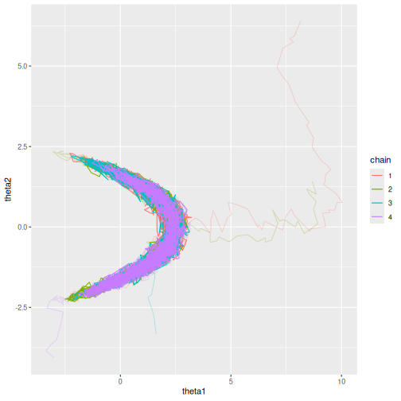
Let’s see what the trace plots look like. Generally, we’d want to see the samples randomly scattered around a mean value. For \(\theta_1\) this is more or less the case, although there some autocorrelation is apparent. With \(\theta_2\) we can see that the chains have mixed as they explore the same parameter ranges. However, the bimodality of the posterior is quite apparent. The \(\hat{R}\) statistics are 1.0070384 and 1.1450652 for \(\theta_1\) and \(\theta_2\), respectively.
R
# Trace plots
p_trace_2 <- ggplot() +
geom_line(data = samples2 %>%
filter(warmup == TRUE) %>%
pivot_longer(cols = c(theta1, theta2), names_to = "parameter", values_to = "value"),
aes(x = sample, y = value, color = chain),
alpha = 0.25) +
geom_line(data = samples2 %>%
filter(warmup == FALSE) %>%
pivot_longer(cols = c(theta1, theta2), names_to = "parameter", values_to = "value"),
aes(x = sample, y = value, color = chain)) +
facet_wrap(~parameter,
ncol = 1,
scales = "free")
print(p_trace_2)
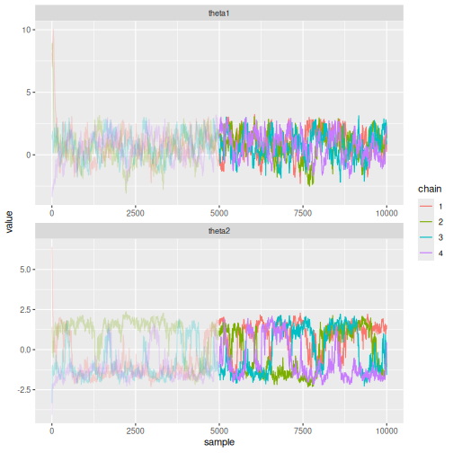
Hamiltonian Monte Carlo
Stan uses a variant of the Metropolis-Hastings algorithm called Hamiltonian Monte Carlo (HMC; or actually a variant HMC). The defining feature is the elaborate scheme it uses to generate proposals. Briefly, the idea is to simulate the dynamics of a particle moving in a potential landscape defined by the posterior. At each iteration, the particle is given a random momentum vector and then its dynamics are simulated forward for some time. The end of the trajectory is then taken as the proposal value.
Compared to the random walk Metropolis-Hastings we implemented in this episode, HMC is very efficient. The main advantages of HMC is its ability to explore high-dimensional spaces more effectively, making it especially useful in complex models with many parameters.
A type of convergence criterion exclusive to HMC is the divergent transition. In a region of the parameter space where the posterior has high curvature, the simulated particle dynamics can produce spurious transitions which do not represent the posterior accurately. Such transitions are called divergent and signal that the particular area of parameter space is not explored accurately. Stan provides information about divergent transitions automatically.
- Markov chain Monte Carlo methods can be used to generate samples from a posterior distribution.
- Values of the chain are generated from a proposal distribution.
- Proposals towards higher areas of the target distribution are accepted with higher probability.
- MCMC convergence should always be monitored.
Reading
See interactive visualization of different MCMC algorithms: https://chi-feng.github.io/mcmc-demo/app.html
Bayesian Data Analysis (3rd ed.): Ch. 11-12
Statistical Rethinking (2nd ed.): Ch. 9
Bayes Rules!: Ch. 6-7
Content from Hierarchical models
Last updated on 2026-08-19 | Edit this page
Overview
Questions
- How does Bayesian modeling accommodate group structure?
Objectives
- Learn to construct and fit hierarchical models.
Hierarchical (or multi-level) models are a class of models suited for situations where the study population comprises distinct but interconnected groups. For example, analyzing student performance across different schools, income disparities among various regions, or studying animal behavior within different populations are scenarios where such models would be appropriate.
Incorporating group-wise parameters allows us to model each group separately, and a model becomes hierarchical when we treat the parameters of the prior distribution as unknown. These parameters, known as hyperparameters, are assigned their own prior distribution, referred to as a hyperprior, and are learned during the model fitting process. Similarly as priors, the hyperpriors should be set so they reflect ranges of possible hyperparameter values. Conceptually, these hyperparameters and hyperpriors operate at a higher level of hierarchy, hence the name.
For example, let’s consider the beta-binomial model discussed in Episode 1. We used it to estimate the prevalence of left-handedness based on a sample of 50 students. If we were to include additional information, such as the students’ majors, we could extend the model as follows:
\[X_g \sim \text{Bin}(N_g, \theta_g) \\ \theta_g \sim \text{Beta}(\alpha, \beta) \\ \alpha, \beta \sim \Gamma(2, 0.1).\]
Here, the subscript \(g\) indexes the groups based on majors. The group-specific prevalences for left-handedness \(\theta_g\) are assigned a beta prior with hyperparameters \(\alpha\) and \(\beta\) which are treated as random variables. The final line indicates the hyperprior \(\Gamma(2, 0.1)\) governing the prior beliefs about the hyperparameters.
In this hierarchical beta-binomial model, students are considered exchangeable within their majors but no longer across the entire population. However, an underlying assumption of similarity exists between the groups since they share a common prior, that is learned. This way the groups are not entirely independent but are not treated as equal either.
One of the key advantages of Bayesian hierarchical models is their capacity to leverage information across groups. By pooling information from various groups, these models can yield more robust estimates, particularly when data availability is limited.
Another distinction from non-hierarchical models is that the prior, or the population distribution, of the parameters is learned in the process. This population distribution can provide information into parameter variability on a broader scale, even for groups where data is scarce or completely missing. For instance, if we had data on the handedness of students majoring in natural sciences, the population distribution can give insights into students in humanities and social sciences as well.
In the following example, we will perform a hierarchical analysis of human heights across different countries.
Example: human height
Let’s examine the heights of adults in various countries. In [1], averages and standard errors of adult heights in centimeters across different countries and age groups were provided. We’ll utilize this dataset to generate a sample of hypothetical individual heights and then assess our ability to reproduce these measured height statistics.
This approach is commonly employed when building and testing models: we generate simulated data with known parameters and then compare the inferred results to these known parameters. In our case, the true parameters are derived from real-world data.
We’ll employ a normal model with unknown mean \(\mu\) and standard deviation \(\sigma\) as our generative model, and treat these parameters hierarchically.
First, let’s load the data and examine its structure.
R
set.seed(4985)
height <- read.csv("data/height_data.csv")
str(height)
OUTPUT
'data.frame': 210000 obs. of 8 variables:
$ Country : chr "Afghanistan" "Afghanistan" "Afghanistan" "Afghanistan" ...
$ Sex : chr "Boys" "Boys" "Boys" "Boys" ...
$ Year : int 1985 1985 1985 1985 1985 1985 1985 1985 1985 1985 ...
$ Age.group : int 5 6 7 8 9 10 11 12 13 14 ...
$ Mean.height : num 103 109 115 120 125 ...
$ Mean.height.lower.95..uncertainty.interval: num 92.9 99.9 106.3 112.2 117.9 ...
$ Mean.height.upper.95..uncertainty.interval: num 114 118 123 128 132 ...
$ Mean.height.standard.error : num 5.3 4.72 4.27 3.92 3.66 ...Let’s subset this data to simplify the analysis and focus on the height of adult women measured in 2019.
R
height_women <- height %>%
filter(
Age.group == 19,
Sex == "Girls",
Year == 2019
) %>%
# Select variables of interest
select(Country, Sex, Mean.height, Mean.height.standard.error)
Let’s select 10 countries randomly
R
set.seed(5431)
# Select countries
N_countries <- 10
Countries <- sample(unique(height_women$Country),
size = N_countries,
replace = FALSE) %>% sort
height_women10 <- height_women %>% filter(Country %in% Countries)
height_women10
OUTPUT
Country Sex Mean.height Mean.height.standard.error
1 Bangladesh Girls 152.3776 0.4966124
2 Belize Girls 158.1201 1.4026324
3 Cameroon Girls 160.4112 0.6146315
4 Chad Girls 162.1242 0.8894219
5 Cote d'Ivoire Girls 158.6524 0.9254438
6 Ghana Girls 158.8551 0.8002225
7 Kenya Girls 159.4338 0.6680202
8 Luxembourg Girls 165.0690 1.3778094
9 Taiwan Girls 160.6953 0.7307839
10 Venezuela Girls 160.0370 1.0813162Simulate data
Now, we can treat the values in the table above as ground truth and simulate some data based on them. Let’s generate \(N=10\) samples for each country from the normal model with \(\mu = \text{Mean.height}\) and \(\sigma = \text{Mean.height.standard.error}\).
R
# Sample size per group
N <- 10
# For each country, generate heights
height_sim <- lapply(1:N_countries, function(i) {
my_df <- height_women10[i, ]
data.frame(Country = my_df$Country,
# Random values from normal
Height = rnorm(N,
mean = my_df$Mean.height,
sd = my_df$Mean.height.standard.error))
}) %>%
do.call(rbind, .)
Let’s plot the data
R
# Plot
height_sim %>%
ggplot() +
geom_point(aes(x = Height, y = Country)) +
labs(title = "Simulated data")
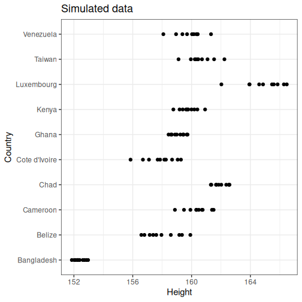
Modeling
Let’s build a normal model that uses partial pooling for the country means and standard deviations. The model can be stated as follows:
\[\begin{align} X_{gi} &\sim \text{N}(\mu_g, \sigma_g) \\ \mu_g &\sim \text{N}(\mu_\mu, \sigma_\mu) \\ \sigma_g &\sim \Gamma(\alpha_\sigma, \beta_\sigma) \\ \mu_\mu &\sim \text{N}(0, 100)\\ \sigma_\mu &\sim \Gamma(2, 0.1) \\ \alpha_\sigma, \beta_\sigma &\sim \Gamma(2, 0.01). \end{align}\]
Above, \(X_{gi}\) denotes the height for individual \(i\) in country \(g\). The country specific parameters \(\mu_g\) and \(\sigma_g\) are given normal and gamma priors, respectively, with unknown hyperparameters that, in turn, are given hyperpriors on the last two lines. The hyperpriors are quite uninformative as they allow large hyperparameter ranges.
Below is the Stan program for this model. The data points are input
as a concatenated vector X. The country-specific start and
end indices are computed in the transformed data block. This approach
accommodates uneven sample sizes between groups, although in our data
these are equal.
The parameters block contains the declarations of mean and standard deviation vectors, along with the hyperparameters. The hyperparameter subscripts denote the parameter they are assigned to so, for instance, \(\sigma_{\mu}\) is the standard deviation of the mean parameter \(\mu\). The generated quantities block generates samples from the population distributions of \(\mu\) and \(\sigma\) and a country-agnostic posterior predictive distribution \(\tilde{X}\).
STAN
data {
int<lower=0> G; // number of groups
array[G] int<lower=0> N; // sample size within each group
vector[sum(N)] X; // concatenated observations
}
transformed data {
// get first and last index for each group in X
array[G] int start_i;
array[G] int end_i;
for(g in 1:G) {
if(g == 1) {
start_i[1] = 1;
} else {
start_i[g] = start_i[g-1] + N[g-1];
}
end_i[g] = start_i[g] + N[g]-1;
}
}
parameters {
// parameters
vector[G] mu;
vector<lower=0>[G] sigma;
// hyperparameters
real mu_mu;
real<lower=0> sigma_mu;
real<lower=0> alpha_sigma;
real<lower=0> beta_sigma;
}
model {
// Likelihood for each group
for(i in 1:G) {
X[start_i[i]:end_i[i]] ~ normal(mu[i], sigma[i]);
}
// Priors
mu ~ normal(mu_mu, sigma_mu);
sigma ~ gamma(alpha_sigma, beta_sigma);
// Hyperpriors
mu_mu ~ normal(0, 100);
sigma_mu ~ gamma(2, 0.1);
alpha_sigma ~ gamma(2, 0.01);
beta_sigma ~ gamma(2, 0.01);
}
generated quantities {
real mu_tilde;
real<lower=0> sigma_tilde;
real X_tilde;
// Population distributions
mu_tilde = normal_rng(mu_mu, sigma_mu);
sigma_tilde = gamma_rng(alpha_sigma, beta_sigma);
// Posterior predictive distribution
X_tilde = normal_rng(mu_tilde, sigma_tilde);
} Now we can call Stan and fit the model using cmdstanr.
Hierarchical models can encounter convergence issues and for this
reason, we’ll use 10000 iterations and set
adapt_delta = 0.99. This controls the acceptance
probability in Stan’s adaptation period and will result in a smaller
step size in the Markov chain. Moreover, we’ll speed up the inference by
running 2 chains in parallel by setting
parallel_chains = 2.
R
stan_data <- list(G = length(unique(height_sim$Country)),
N = rep(N, length(Countries)),
X = height_sim$Height)
normal_hier_fit <- normal_hier_model$sample(
data = stan_data,
iter_warmup = 5000,
iter_sampling = 5000,
chains = 2,
# Use to avoid divergent transitions:
adapt_delta = 0.99,
parallel_chains = 2,
seed = 123,
refresh = 0)
For comparison, we will also run an unpooled analysis of heights, which makes use of the following Stan file:
R
unpooled_summaries <- list()
for(i in 1:N_countries) {
my_country <- unique(height_sim$Country)[i]
my_df <- height_sim %>%
filter(Country == my_country)
my_stan_data <- list(N = my_df %>% nrow,
X = my_df$Height)
my_fit <- normal_pooled_model$sample(
data = my_stan_data,
iter_warmup = 5000,
iter_sampling = 5000,
chains = 2,
# Use to get rid of divergent transitions:
adapt_delta = 0.99,
parallel_chains = 2,
refresh = 0
)
unpooled_summaries[[i]] <- my_fit$summary(c("mu", "sigma")) %>%
data.frame() %>%
rename(par = variable, Lower_CI = q5, Upper_CI = q95) %>%
mutate(country = my_country)
}
unpooled_summaries <- do.call(rbind, unpooled_summaries)
Country-specific estimates
Let’s first compare the marginal posteriors for the country-specific estimates from the hierarchical model (blue) and an unpooled model (brown) that treats the parameters separately.
R
par_summary <- normal_hier_fit$summary(c("mu", "sigma")) %>%
data.frame() %>%
rename(
Lower_CI = q5,
Upper_CI = q95
) %>%
separate(variable, into = c("par", "country"), sep = "\\[") %>%
mutate(country = gsub("\\]", "", country)) %>%
mutate(country = Countries[as.integer(country)])
ggplot() +
geom_errorbar(data = par_summary, aes(x = country, ymin = Lower_CI, ymax = Upper_CI),
color = posterior_color) +
geom_point(data = height_women10 %>%
rename_with(~ c('mu', 'sigma'), 3:4) %>%
pivot_longer(cols = c(mu, sigma),
names_to = "par",
values_to = "value"),
aes(x = Country, y = value)) +
geom_errorbar(data = unpooled_summaries,
aes(x = country, ymin = Lower_CI, ymax = Upper_CI),
color = "brown") +
facet_wrap(~ par, scales = "free", ncol = 1) +
coord_flip()
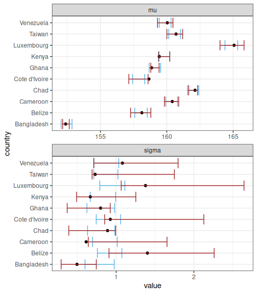
Above, the black points represent the true values, and the intervals are the 95% CIs for a hierarchical and non-hierarchical models, respectively. As apparent, the CIs from the hierarchical model are more concentrated and better capture the true values.
Challenge
Experiment with the data and fit. Explore the effect of sample size, unequal sample sizes between countries, and the amount of countries, for example.
Hyperparameters
Let’s then plot the population distribution’s parameters, that is, the hyperparameters. The sample-based values are included in the plots of \(\mu_\mu\) and \(\sigma_\mu\) (why not for the other two hyperparameters?). It seems that the model has slightly underestimated the overall average and variance of the mean parameter \(\mu\), which is not suprising given the low number of data points.
R
## Population distributions:
population_samples_l <- normal_hier_fit$draws(c("mu_mu", "sigma_mu", "alpha_sigma", "beta_sigma"),
format = "df") %>%
data.frame() %>%
rename(sample = .iteration) %>%
select(-c(.chain, .draw)) %>%
pivot_longer(cols = -sample,
names_to = "hyperpar",
values_to = "value")
ggplot() +
geom_histogram(data = population_samples_l,
aes(x = value, y = after_stat(density)),
fill = posterior_color,
bins = 100) +
geom_vline(data = height_women %>%
rename_with(~ c('mu', 'sigma'), 3:4) %>%
filter(Sex == "Girls") %>%
summarise(mu_mu = mean(mu), sigma_mu = sd(mu)) %>%
pivot_longer(cols = everything(), names_to = "hyperpar", values_to = "value"),
aes(xintercept = value)
)+
facet_wrap(~hyperpar, scales = "free")
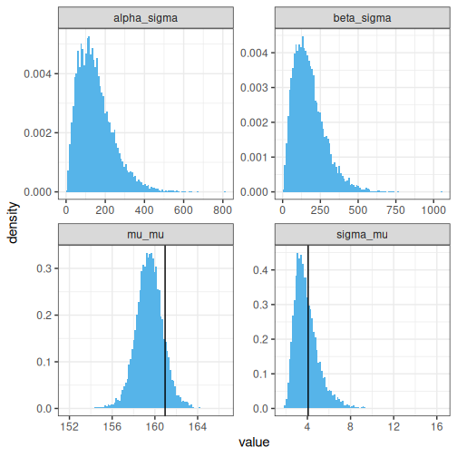
Population distributions
Let’s then plot the population distributions and compare to the true sample means and standard errors.
R
population_l <- normal_hier_fit$draws(c("mu_tilde", "sigma_tilde"), format = "df") %>%
data.frame() %>%
rename(sample = .iteration, mu = mu_tilde, sigma = sigma_tilde) %>%
select(sample, mu, sigma) %>%
pivot_longer(cols = -sample,
names_to = "par",
values_to = "value")
ggplot() +
geom_histogram(data = population_l,
aes(x = value, y = after_stat(density)),
bins = 100, fill = posterior_color) +
geom_histogram(data = height_women %>%
rename_with(~ c('mu', 'sigma'), 3:4) %>%
pivot_longer(cols = c(mu, sigma), names_to = "par", values_to = "value") %>%
filter(Sex == "Girls"),
aes(x = value, y = after_stat(density)),
alpha = 0.75, bins = 30) +
facet_wrap(~par, scales = "free") +
labs(title = "Blue = posterior; black = sample")
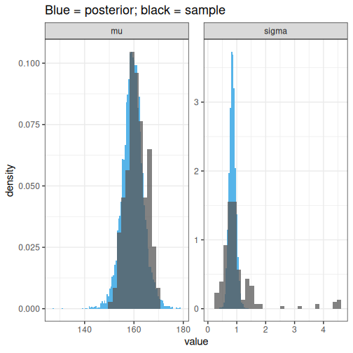
We can see that the population distribution is able to capture the measured average heights and standard deviations relatively well, although the within-country variation is estimated to be too concentrated. However, remember that these estimates are based on a limited sample: 10 out of 200 countries with 10 individuals in each group.Posterior predictive distribution
Finally, let’s plot the posterior predictive distribution for the whole population and overlay it with the simulated data based on all countries.
R
# For each country, generate some random girl's heights
height_all <- lapply(1:nrow(height_women), function(i) {
my_df <- height_women[i, ] %>%
rename_with(~ c('mu', 'sigma'), 3:4)
data.frame(Country = my_df$Country,
Sex = my_df$Sex,
# Random normal values based on sample mu and sd
Height = rnorm(N, my_df$mu, my_df$sigma))
}) %>%
do.call(rbind, .)
R
# Extract the posterior predictive distribution
PPD <- normal_hier_fit$draws("X_tilde", format = "df") %>%
data.frame() %>%
rename(sample = .iteration) %>%
select(sample, X_tilde)
ggplot() +
geom_histogram(data = PPD,
aes(x = X_tilde, y = after_stat(density)),
bins = 100,
fill = posterior_color) +
geom_histogram(data = height_all,
aes(x = Height, y = after_stat(density)),
alpha = 0.75,
bins = 100)
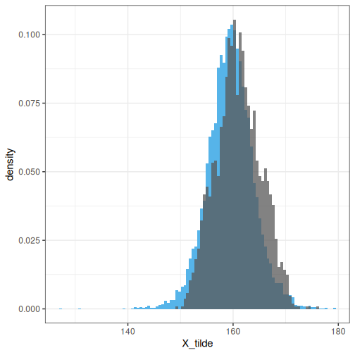
Extensions
Here, we analyzed the height for women in a randomly chosen countries using a hierarchical model. The model could be extended further, for instance, by adding hierarchy between sexes, continents, developed/developing countries etc. However, specifying the correlation between all these aspects could be complicated.
- Hierarchical models are appropriate for scenarios where the study population naturally divides into subgroups.
- Hierarchical models borrow statistical strength across the population groups.
- Population distributions hold information about the variation of the model parameters over the whole population.
Reading
- Bayesian Data Analysis (3rd ed.): Ch. 5
- Statistical Rethinking (2nd ed.): Ch. 13
- Bayes Rules!: Ch. 15-19
References
[1] Height: Height and body-mass index trajectories of school-aged children and adolescents from 1985 to 2019 in 200 countries and territories: a pooled analysis of 2181 population-based studies with 65 million participants. Lancet 2020, 396:1511-1524
Content from Model comparison
Last updated on 2026-08-19 | Edit this page
ERROR
Error:
! object 's' not foundOverview
Questions
- How can competing models be compared?
Objectives
Get a basic understanding of comparing models with
posterior predictive check
information criteria
Bayesian cross-validation
There is often uncertainty about which model would be the most appropriate choice a data being analysed. The aim of this episode is to introduce some tools that can be used to compare models systematically. We will explore three different approaches.
The first one is the posterior predictive check, which involves comparing a fitted model’s predictions with the observed data. The second approach is to use information criteria, which measure the balance between model complexity and goodness-of-fit. The episode concludes with Bayesian cross-validation.
Data
Throughout the chapter, we will use the same simulated data set in
the examples, a set of \(N=88\)
univariate numerical data points. The data are available in the course’s
data folder as df5.csv.
Looking at the data histogram, it’s evident that the data is approximately symmetrically distributed around 0. However, there is some dispersion in the data, and an extreme positive value, suggesting that the tails might be longer than those of a normal distribution. The Cauchy distribution is a potential alternative and below we will compare the suitability of these two distributions on this data.
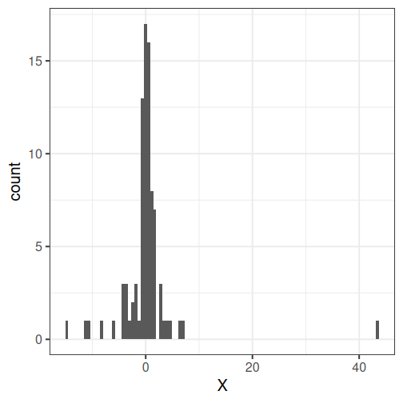
Posterior predictive check
The idea of posterior predictive checking is to use the posterior predictive distribution to simulate a replicate data set and compare it to the observed data. The reasoning behind this approach is that if the model is a good fit, then replicate data should look similar the observed one. Qualitative discrepancies between the simulated and observed data can imply that the model does not match the properties of the data or the domain.
The comparison can be done in different ways. Visual comparison is an option but a more rigorous approach is to compute the posterior predictive p-value (\(p_B\)), which measures how well the model can reproduce the observed data. Computing the \(p_B\) requires specifying a statistic whose value is compared between the posterior predictions and the observations.
The steps of a posterior predictive check can be formulated in the following points:
- Generate replicate data: Use the posterior predictive distribution to simulate replicate datasets \(X^{rep}\) with characteristics matching the observed data. In our example, this amounts to generating data with \(N=88\) for each posterior sample.
- Choose test quantity \(T(X)\): Choose an aspect of the data that you wish to check. We’ll use the maximum value as the test quantity and compute it for the observed data and each replicate. It’s important to note that not every imaginable data quantity will make a good \(T(X)\), see chapter 6.3 in BDA3 for details.
- Compute \(p_B\): The posterior predictive p-value is defined as the probability \(Pr(T(X^{rep}) \geq T(X) | X)\), that is, the probability that the predictions produce test quantity values at least as extreme as those found in the data. Using samples, it is computed as the proportion of replicate data sets with \(T\) not smaller than that of \(T(X)\). The closer the \(p_B\)-value is to 1 (or 0), the larger the evidence that the model cannot properly emulate the data.
Next we will perform these steps for the normal and Cauchy models.
Normal model
Below is a Stan program for the normal model that produces the
replicate data in the generated quantities block. The values of
X_rep are generated in a loop using the random number
generator normal_rng. Notice that a single posterior sample
\((\mu_s, \sigma_s)\) is used for each
evaluation of the generated quantities block, resulting in a
distribution of \(X^{rep}\)
STAN
data {
int<lower=0> N;
vector[N] X;
}
parameters {
real<lower=0> sigma;
real mu;
}
model {
X ~ normal(mu, sigma);
mu ~ normal(0, 1);
sigma ~ gamma(2, 1);
}
generated quantities {
vector[N] X_rep;
for(i in 1:N) {
X_rep[i] = normal_rng(mu, sigma);
}
}Let’s fit model and extract the replicates.
R
# Fit
normal_fit <- normal_model$sample(data = list(N = N, X = df5$X),
refresh = 0)
# Extract
X_rep <- normal_fit$draws("X_rep") %>%
posterior::as_draws_matrix() %>%
data.frame() %>%
mutate(sample = 1:nrow(.))
Below is a comparison of 9 realizations of \(X^{rep}\) (blue) against the data (grey; the panel titles correspond to MCMC sample numbers). It is evident that the tail properties are different between \(X^{rep}\) and \(X\), and this discrepancy indicates an issue with the model choice.
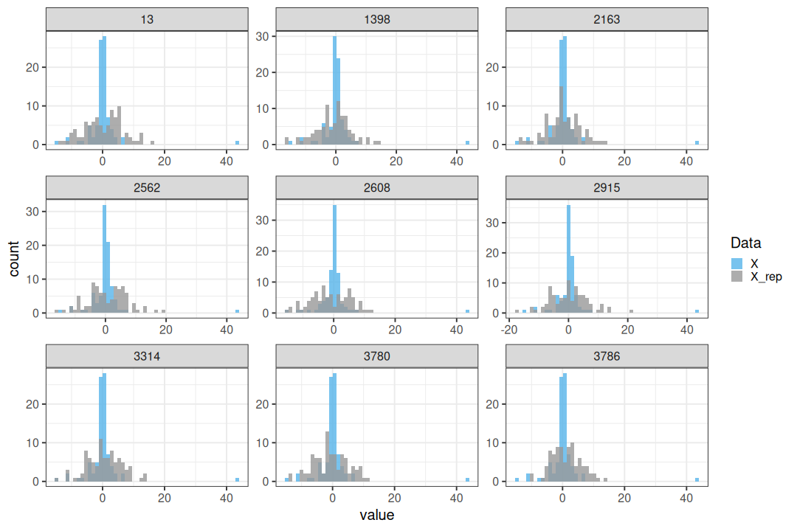
Let’s quantify this discrepancy by computing the \(p_B\) using the maximum of the data as a test statistic. The maximum of the original data is max(\(X\)) = 43.481. The posterior predictive \(p\)-value is \(p_B =\) 0.
This means that the chosen statistic \(T\) is at least as large as in the data in 100% of the replications, indicating strong evidence that the normal model is a poor choice for the data.
The following histogram displays \(T(X) = \max(X)\) (vertical line) against the distribution of \(T(X^{rep})\).
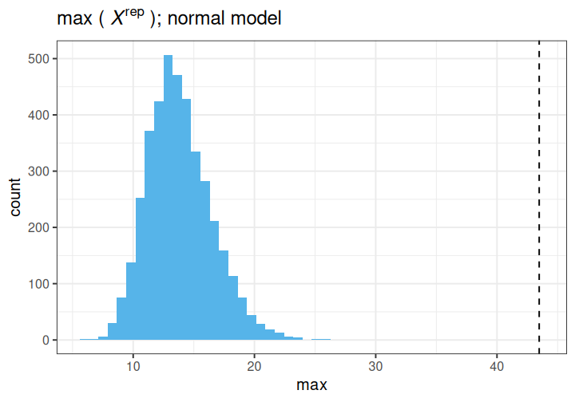
Cauchy model
Let’s do an identical analysis using the Cauchy model.
The results are generated with code essentially copy-pasted from above, with a minor distinction in the Stan program.
STAN
data {
int<lower=0> N;
vector[N] X;
}
parameters {
// Scale
real<lower=0> sigma;
// location
real mu;
}
model {
// location = mu and scale = sigma
X ~ cauchy(mu, sigma);
mu ~ normal(0, 1);
sigma ~ gamma(2, 1);
}
generated quantities {
vector[N] X_rep;
for(i in 1:N) {
X_rep[i] = cauchy_rng(mu, sigma);
}
}A comparison of data \(X\) and \(X^{rep}\) from the Cauchy model shows good agreement between the posterior predictions and the data. The distributions appear to closely match around 0, and the replicates contain some extreme values similarly to the data.
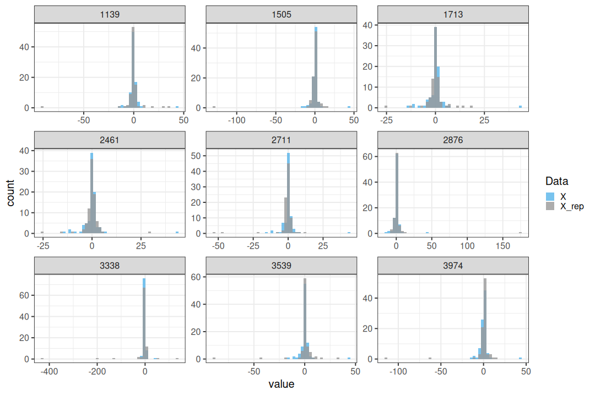
The maximum value observed in the data is similar to those from replicate sets. Additionally, \(p_B=\) 0, indicating no issues with the suitability of the model for the data. distribution.
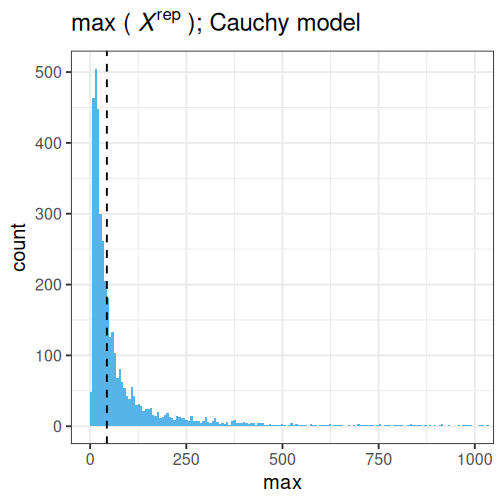
Information criteria
Information criteria are statistics used for model comparison within both Bayesian and classical frequentist frameworks. These criteria provide a means to compare the relative suitability of a model to data by estimating out-of-sample predictive accuracy while simultaneously taking model complexity into account.
The Widely Applicable Information Criterion (WAIC) is an information criteria developed within the Bayesian framework. WAIC is computed using the log pointwise predictive density (lppd) of the data. Since the predictions are based on the model fit with the the data lppd is an overly confident estimate of the predictive capability. To take this into account, a penalization term \(p_{WAIC}\) is included:
\[WAIC = -2(\text{lppd} - p_{WAIC}).\] The log pointwise predictive density is computed as $_{i=1}N(_{s=1}Sp(X_i | ^s)), $, where \(X_i, \,i=1,\ldots,N\) are data points and \(S\) the number of posterior samples. The penalization term \(p_{WAIC} = \sum_{i=1}^N \text{Var}(\log p(y_i | \theta^s))\) measures the effective number of parameters (although this may not be apparent from the formula). Because the definition contains a negative of the difference \(\text{lppd} - p_{WAIC}\), lower WAIC values imply a better fit.
Let’s use the WAIC to compare the normal and Cauchy models. First we’ll need to fit both models on the data using the Stan programs utilized above.
R
stan_data <- list(N = N, X = df5$X)
# Fit
normal_fit <- normal_model$sample(stan_data,
refresh = 0)
cauchy_fit <- cauchy_model$sample(stan_data,
refresh = 0)
# Extract samples
normal_samples <- normal_fit$draws(c("mu", "sigma")) |>
posterior::as_draws_matrix() |>
as.data.frame()
cauchy_samples <- cauchy_fit$draws(c("mu", "sigma")) |>
posterior::as_draws_matrix() |>
as.data.frame()
Then we will write a function for computing WAIC, but first a helper function to compute posterior predictive density for a single point.
R
get_ppd_point <- function(x, samples, model) {
# Loop over posterior samples
pp_dens <- lapply(1:nrow(samples), function(S) {
my_mu <- samples$mu[S]
my_sigma <- samples$sigma[S]
if(model == "normal") {
# Normal(x | mu, sigma^2)
dnorm(x = x,
mean = my_mu,
sd = my_sigma)
} else if (model == "cauchy") {
# Cauchy(x | location = mu, scale = sigma^2)
dcauchy(x = x,
location = my_mu,
scale = my_sigma)
}
}) %>%
unlist()
return(pp_dens)
}
WAIC <- function(samples, data, model){
# Loop over data points
pp_dens <- lapply(1:length(data), function(i) {
get_ppd_point(data[i], samples, model)
}) %>%
do.call(rbind, .)
lppd <- apply(X = pp_dens,
MARGIN = 1,
FUN = function(x) log(mean(x))) %>%
sum
bias <- apply(X = pp_dens,
MARGIN = 1,
FUN = function(x) var(log(x))) %>%
sum
# WAIC
waic = -2*(lppd - bias)
return(waic)
}
Applying this function to the posterior samples, we’ll obtain a lower value for the Cauchy model, implying a better fit to the data. This is in line with the posterior predictive check performed above.
R
WAIC(normal_samples, df5$X, model = "normal")
OUTPUT
[1] 581.6718R
WAIC(cauchy_samples, df5$X, model = "cauchy")
OUTPUT
[1] 413.6225Bayesian cross-validation
The final approach we take to model comparison in cross-validation.
Cross-validation is a technique that estimates how well a model predicts previously unseen data by using fits of the model to a subset of the data to predict the rest of the data.
Performing cross-validation entails defining data partitioning for model training and testing. The larger the proportion of the data used for training, the better the accuracy. However, increasing the size of training data leads to having to fit the model more times. In the extreme case, when each data point is left out individually, the model is fit \(N\) times. This is called leave-one-out cross-validation.
To evaluate the predictive accuracy we will use log predictive
density and take the sum over the different fits as the measure
accuracy. This is then compared to the predictive densities of the data
points based on the fit with all the data. This difference represents
the effective number of parameters \(p_{\text{loo-cv}}\) that can be used for
comparing models.
\[p_{\text{loo-cv}} = \text{lppd} -
\text{lppd}_\text{loo-cv}.\] Above, \(\text{lppd}_\text{loo-cv}\) is the sum of
the log predictive densities of data points evaluated based on
Let’s implement this in R.
R
# 1. Loop over leave-one-out data partitions for Normal Model
normal_loo_lpds <- lapply(1:N, function(i) {
my_X <- df5$X[-i]
my_x <- df5$X[i]
my_normal_fit <- normal_model$sample(
data = list(N = length(my_X), X = my_X),
refresh = 0
)
my_samples <- my_normal_fit$draws(c("mu", "sigma")) |>
posterior::as_draws_df()
my_lppd <- get_ppd_point(my_x, my_samples, "normal") |>
mean() |>
log()
data.frame(i = i, lppd = my_lppd, model = "normal_loo")
}) |>
bind_rows()
# 2. Loop over leave-one-out data partitions for Cauchy Model
cauchy_loo_lpds <- lapply(1:N, function(i) {
my_X <- df5$X[-i]
my_x <- df5$X[i]
my_cauchy_fit <- cauchy_model$sample(
data = list(N = length(my_X), X = my_X),
refresh = 0
)
my_samples <- my_cauchy_fit$draws(c("mu", "sigma")) |>
posterior::as_draws_df()
my_lppd <- get_ppd_point(my_x, my_samples, "cauchy") |>
mean() |>
log()
data.frame(i = i, lppd = my_lppd, model = "cauchy_loo")
}) |>
bind_rows()
# 3. Predictive density for data points using FULL data (Normal Model)
my_normal_full_fit <- normal_model$sample(
data = list(N = nrow(df5), X = df5$X),
refresh = 0
)
normal_samples_full <- my_normal_full_fit$draws(c("mu", "sigma")) |>
posterior::as_draws_df()
normal_full_lpd <- lapply(1:N, function(i) {
my_lppd <- get_ppd_point(df5$X[i], normal_samples_full, "normal") |>
mean() |>
log()
data.frame(i = i, lppd = my_lppd, model = "normal")
}) |>
bind_rows()
# 4. Predictive density for data points using FULL data (Cauchy Model)
my_cauchy_full_fit <- cauchy_model$sample(
data = list(N = nrow(df5), X = df5$X),
refresh = 0
)
cauchy_samples_full <- my_cauchy_full_fit$draws(c("mu", "sigma")) |>
posterior::as_draws_df()
cauchy_full_lpd <- lapply(1:N, function(i) {
my_lppd <- get_ppd_point(df5$X[i], cauchy_samples_full, "cauchy") |>
mean() |>
log()
data.frame(i = i, lppd = my_lppd, model = "cauchy")
}) |>
bind_rows()
Let’s combine the computed log densities, and compute model-wise sums
R
# Combine
lppds <- bind_rows(normal_loo_lpds,
normal_full_lpd,
cauchy_loo_lpds,
cauchy_full_lpd)
lppd_summary <- lppds %>%
group_by(model) %>%
summarize(lppd = sum(lppd), .groups = "drop")
Finally, we can compute the estimated of the effective number of parameters. As with WAIC, smaller values imply better suitability. In line with the posterior predictive check and WAIC, we see that, again, the Cauchy distribution gives a better description of the data that the normal model.
R
# Effective number of parameters
normal_full_val <- lppd_summary %>% filter(model == "normal") %>% pull(lppd)
normal_loo_val <- lppd_summary %>% filter(model == "normal_loo") %>% pull(lppd)
cauchy_full_val <- lppd_summary %>% filter(model == "cauchy") %>% pull(lppd)
cauchy_loo_val <- lppd_summary %>% filter(model == "cauchy_loo") %>% pull(lppd)
# Calculate effective number of parameters
p_loo_cv_normal <- normal_full_val - normal_loo_val
p_loo_cv_cauchy <- cauchy_full_val - cauchy_loo_val
print(paste0("Effective number of parameters, normal = ", round(p_loo_cv_normal, 4)))
OUTPUT
[1] "Effective number of parameters, normal = 32.5307"R
print(paste0("Effective number of parameters, cauchy = ", round(p_loo_cv_cauchy, 4)))
OUTPUT
[1] "Effective number of parameters, cauchy = 1.9341"There are packages that enable computing WAIC and approximate leave-one-out score automatically so, in practice, there is seldom need to implement these yourself. In episode 7 you will learn about these options tools.
- Bayesian model comparison can be performed (for example) with posterior predictive checks, information criteria, and cross-validation.
Reading
Statistical Rethinking: Ch. 7
BDA3: p.143: 6.3 Posterior predictive checking
PSIS-loo
Content from Gaussian processes
Last updated on 2026-08-10 | Edit this page
Overview
Questions
- How to do probabilistic non-parameteric regression?
Objectives
- Learn to perform Gaussian process regression with Stan
Gaussian processes (GPs) are a class of stochastic (random) processes that are widely used for non-parametric regression, that is, when the relationship between the predictors and the dependent variable has no parametric form. Formally, a Gaussian process \(GP(\mu, K)\) is defined as a collection of random variables \(X\) with the property that any finite subset \(X_I \subset X\) follows a multivariate normal distribution with mean \(\mu\) and covariance \(K\).
This definition implies a distribution over functions, meaning that generating a realization from a GP produces a function. This in turn implies that GPs can be used as priors for unknown functional forms between variables.
As an example, consider modeling crop yields as a function of fertilizer use. Presumably, there exists a non-linear trend between these variables, as insufficient or excessive fertilizer use will lead to suboptimal yields. In the absence of a parametric model, GPs can function as a prior for the relationship between fertilizer and yield, \(f\). In its simplest form, measured yields \(y\) could be modeled as noisy observations from \(f(x)\), where \(x\) is the amount of fertilizer used:
\[\begin{align} y &\sim N(f(x), \sigma^2) \\ f(x) &\sim GP(\mu, K). \end{align} \]
As with all priors, the chosen hyperparameters (here \(\mu, \, K\)) influence the inference. The mean parameter \(\mu\) defines the average level of the process, while the covariance function \(K\) exerts a more defining effect on the process characteristics.
Perhaps the most frequently used covariance function is the squared exponential kernel \(K_{SE}(x, x’) = \alpha^2 \exp{ \frac{(x - x’)^2}{2 \lambda} }\). The parameter \(\alpha^2\) sets the variance of the process, while \(\lambda\) determines the scale of the correlation; increasing \(\lambda\) increases the correlation between \(x\) and \(x’\). In the figure below, we’ve plotted some realizations from a GP with \(\mu = (0, 0, \ldots, 0)\) and squared exponential covariance function with \(\alpha = 1\) and \(\lambda = 25\). The input space \(X\) is the integers between 0 and 100.
R
set.seed(6436)
sq_exp_cov <- function(x, lambda, alpha) {
n <- length(x)
K <- matrix(0, n, n)
for (i in 1:n) {
for (j in 1:n) {
diff <- sqrt(sum((x[i] - x[j])^2))
K[i,j] <- alpha^2 * exp(-diff^2 / (2 * lambda^2))
}
}
return(K)
}
x <- 0:100
alpha <- 1
lambda <- 25
# Sample from multivariate normal
gp_samples <- rmvnorm(10, sigma = sq_exp_cov(x, lambda, alpha))
gp_samples_l <- gp_samples %>%
t %>%
data.frame %>%
mutate(x = seq(0, 100, by = 1)) %>%
pivot_longer(cols = -x,
names_to = "sample",
values_to = "y")
gp_sample_p <- ggplot(data = gp_samples_l) +
geom_line(aes(x = x, y = y, group = sample))
print(gp_sample_p)
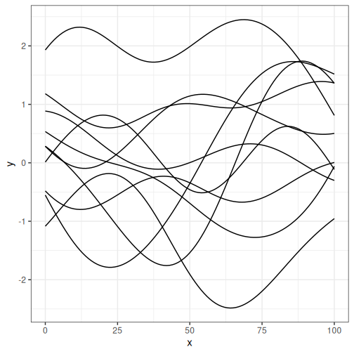
Challenge
Generate samples from the GP above with different values of \(\alpha\) and \(\lambda\) to get intuition about the role of these hyperparameters.
Implement the exponential covariance kernel defined as \(K_{exp}(x, x’) = \alpha^2 \exp{ \frac{|x - x’|}{\lambda} }\) and generate samples using this kernel. What is the qualitative difference to samples generated with squared exponential covariance?
Next, we’ll explore some examples that make use of Gaussian processes.
Example 1: Gaussian process regression
Assume we’d like to estimate the relationship between variables \(x\) and \(y\) based on the following 5 data points.
R
df6 <- data.frame(x = c(-2.76, 2.46, -1.52, -4.34, 4.54, 1),
y = c(-0.81, -0.85, 0.76, -0.41, -1.48, 0.2))
# Plot
p_data <- df6 %>%
ggplot(aes(x,y)) +
geom_point()
p_data
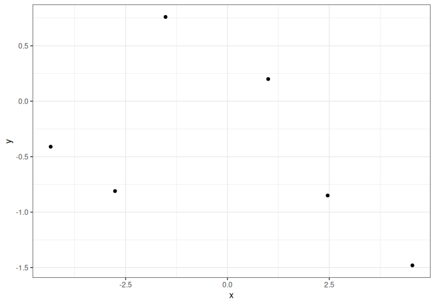
We’ll assume \(y\) are noisy
observations from some unknown function \(f(x)\) for which we’ll give a GP prior.
Because we will not recover any functional (such as polynomial) form for
\(f\), we will only learn the value of
\(f\) at separate predetermined
locations \(x\). The covariance
function needs to be computed in all those points. Let’s estimate \(f\) on a grid of points spanning the
interval (-5, 5), stored in vector x_pred:
R
x_pred <- seq(-5, 5, by = 0.1)
N_pred <- length(x_pred)
Next we’ll build the Stan program. The model structure is simple: the
model block defines the likelihood as the normal distribution with mean
\(f(x)\):
y ~ normal(f[1:N_data], sigma). Notice that this is a
vectorized statement so the mean \(y_i\) equals \(f(x_i)\) for all \(i\).
The parameter vector f contains the values of \(f\) corresponding to the data points, in
addition to the locations where we want interpolate. The covariance
function is computed in the transformed data block, where first a vector
of concatenated data and prediction locations is build. For
computational stability, it is customary to add a small value on the
diagonal of the covariance matrix. This ensures that the matrix is
positive semi-definite.
Take a moment to digest the structure of the Stan program.
STAN
data {
// Data
int<lower=1> N_data;
array[N_data] real y;
array[N_data] real x_data;
// GP hyperparameters
real<lower=0> alpha;
real<lower=0> lambda;
// Observation error
real<lower=0> sigma;
// Prediction points
int<lower=1> N_pred;
array[N_pred] real x_pred;
}
transformed data {
// Number of data and prediction points
int<lower=1> N = N_data + N_pred;
array[N] real x;
matrix[N, N] K;
x[1:N_data] = x_data;
x[(N_data+1):N] = x_pred;
// Covariance function
K = gp_exp_quad_cov(x, alpha, lambda);
// Add nugget on diagonal for numerical stability
for (n in 1:N) {
K[n, n] = K[n, n] + 1e-6;
}
}
parameters {
vector[N] f;
}
model {
// Likelihood
y ~ normal(f[1:N_data], sigma);
// GP prior
f ~ multi_normal(rep_vector(0, N), K);
}Let’s fit the model. We’ll use hyperparameter values \(\lambda = 1\), \(\alpha = 1\) and set the observation error standard deviation to \(\sigma = 0.1\).
R
# Fit
gp_samples <- gp_model$sample(
data = list(N_data = nrow(df6),
x_data = as.array(df6$x),
y = as.array(df6$y),
lambda = 1,
alpha = 1,
sigma = 0.1,
N_pred = N_pred,
x_pred = x_pred),
chains = 1,
iter_warmup = 500,
iter_sampling = 500,
refresh = 0)
OUTPUT
Running MCMC with 1 chain...
Chain 1 finished in 70.2 seconds.OUTPUT
Warning: 469 of 500 (94.0%) transitions hit the maximum treedepth limit of 10.
See https://mc-stan.org/misc/warnings for details.The inference takes some time (about a minute on a standard laptop) even though we only use (an insufficient) single chain and 1000 iterations. Stan also throws warnings about convergence issues. Let’s ignore these at this point, and look at the output.
R
f_samples <- gp_samples$draws("f") %>%
posterior::as_draws_matrix() %>%
t() %>%
data.frame() %>%
mutate(x = c(df6$x, x_pred)) # data and prediction locations
f_samples_l <- f_samples %>%
gather(key = "sample", value = "f", -x)
p_f <- ggplot() +
geom_line(
data = f_samples_l,
aes(x = x, y = f, group = sample),
alpha = 0.05) +
geom_point(data = df6,
aes(x = x, y = y), color ="red")
print(p_f)
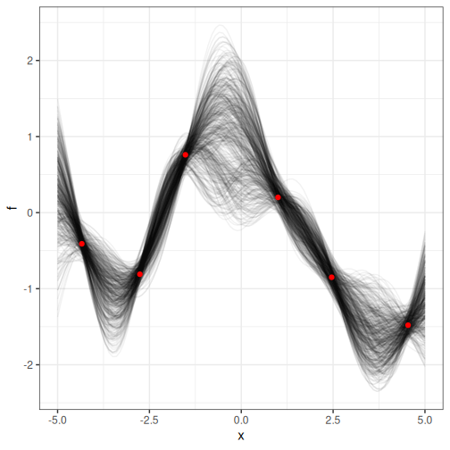
The figure contains the data points in red and samples from the posterior distribution of \(f\) in black. Each posterior sample corresponds to a function. This distribution essentially captures the model’s interpretation of the underlying trend within the data. The estimate for the trend seems plausible.
Challenge
In the figure above, where is the posterior uncertainty the highest and why? What controls the uncertainty at the locations of the data? If we made the prediction range wider, say, from -10 to 10, what would the posterior look like at the extremes?
Uncertainty grows at locations away from the data points and starts to resemble the prior. At the data locations, the uncertainty is controlled by the parameter \(\sigma\). Far from the data, the posterior would be centered around 0 and have variance \(\alpha^2\).
Cholesky parameterization
Running the previous example look a few minutes even though the amount data and number of prediction locations was modest. Scalability is a weak point of Gaussian processes but luckily there is a trick that can be used to speed up the inference and to improve convergence.
By using the Cholesky decomposition of the covariance function \(K = LL^T\), the target function \(f\) can be reparameterized as \(f = \mu + L\eta\). Now, if the random variable \(\eta\) is distributed as multivariate normal with mean 0 and identity covariance matrix, it implies that \(f \sim GP(\mu, K)\).
The Stan program below implements this parameterization. The Cholesky decomposition is performed at the end of the transformed data block and the reparameterization in the transformed parameters block. The likelihood statement is unchanged but prior is now given for \(\eta\). Other parts of the program are identical to the previous example.
STAN
data {
// Data
int<lower=1> N_data;
array[N_data] real y;
array[N_data] real x_data;
// GP hyperparameters
real<lower=0> alpha;
real<lower=0> lambda;
real<lower=0> sigma;
// Prediction points
int<lower=1> N_pred;
array[N_pred] real x_pred;
}
transformed data {
int<lower=1> N = N_data + N_pred;
array[N] real x;
matrix[N, N] K;
matrix[N, N] L;
x[1:N_data] = x_data;
x[(N_data+1):N] = x_pred;
// Covariance function
K = gp_exp_quad_cov(x, alpha, lambda);
// Add nugget on diagonal for numerical stability
for (n in 1:N) {
K[n, n] = K[n, n] + 1e-6;
}
L = cholesky_decompose(K);
}
parameters {
vector[N] eta;
}
transformed parameters {
// mu = (0, 0, ..., 0)
vector[N] f = L*eta;
}
model {
// Likelihood
y ~ normal(f[1:N_data], sigma);
// GP
eta ~ normal(0, 1);
}Let’s compile and fit this model using the same data. Fitting is completed in a few seconds with no convergence issues:
R
gp_cholesky_samples <- gp_cholesky_model$sample(
data = list(N_data = nrow(df6),
x_data = as.array(df6$x),
y = as.array(df6$y),
lambda = 1,
alpha = 1,
sigma = 0.1,
N_pred = N_pred,
x_pred = x_pred),
chains = 1,
iter_warmup = 1000,
iter_sampling = 1000,
refresh = 0
)
OUTPUT
Running MCMC with 1 chain...
Chain 1 finished in 0.3 seconds.Let’s examine the results. How is the posterior different from the one recovered without the Cholesky parameterization?
R
f_matrix <- posterior::as_draws_matrix(gp_cholesky_samples$draws("f"))
N_data <- nrow(df6)
f_pred_matrix <- f_matrix[, (N_data + 1):ncol(f_matrix)]
f_pred_df <- as.data.frame(t(f_pred_matrix))
f_pred_df$x <- x_pred
f_cholesky_samples_l <- f_pred_df %>%
tidyr::pivot_longer(
cols = -x,
names_to = "draw",
values_to = "f"
)
p_cholesky_f <- ggplot() +
geom_line(
data = f_cholesky_samples_l,
aes(x = x, y = f, group = draw),
alpha = 0.05,
color = "black"
) +
geom_point(
data = df6,
aes(x = x, y = y),
color = "red",
size = 2
) +
labs(x = "x", y = "f") +
theme_bw(15)
print(p_cholesky_f)
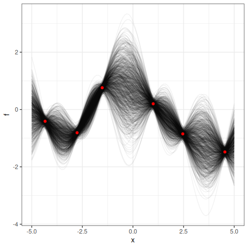
Challenge
For the previous example, compute the posterior probability for \(f(0) > 0\).
R
# Marginal posterior at x == 0
posterior_at_0 <- f_cholesky_samples_l %>%
filter(x == 0)
mean(posterior_at_0$f > 0)
OUTPUT
[1] 0.818Example 2: Logistic Gaussian process regression
Gaussian processes can also be used as priors in models where the relationship between the explanatory and response variables is more complex.
Consider, for example, predicting the presence of some insect species in different regions based on average annual temperature. Now the response variable \(y\) is binary with \(y=0\) and \(y=1\) corresponding to absence and presence, respectfully.
The following simulated data contains observations from 40 locations including presence/absence observations for an insect species and yearly average temperature. Plotting the data suggests there is a temperature range where the species can exists.
R
insect <- data.frame(
x = c(1.74, 13.46, 3.69, 16.09, 8.52, 11.11, 19.32, 5.79, 11.44, 2.32, 0.67, 23.29, 14.1, 16.96, 16.29, 20.16, 12.68, 3.61, 14.22, 11.1, 8.02, 13.35, 24.48, 4.04, 21.41, 6.64, 1.36, 8.97, 17.87, 3.51, 15.68, 8.12, 1.38, 13.39, 3.01, 13.84, 5.29, 20.13, 5.57, 24.51, 3.94, 17.53, 10.62, 3.26, 19.78, 21.93, 21.47, 18.3, 15.91, 8.51),
y = c(0, 1, 0, 1, 0, 1, 0, 0, 1, 0, 0, 0, 0, 1, 1, 0, 0, 0, 1, 0, 0, 1, 0, 0, 0, 0, 0, 1, 0, 0, 1, 0, 0, 0, 0, 1, 0, 0, 0, 0, 0, 1, 0, 0, 0, 0, 0, 1, 0, 0)
)
p <- insect %>%
ggplot() +
geom_point(aes(x, y))
print(p)
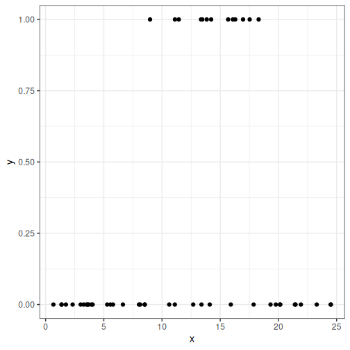
One way of modeling presence/absence data is with logistic regression:
\[ y \sim \text{Bernoulli}(\theta) \\ \theta = \frac{1}{1 + e^{-(\alpha + \beta x)}},\] where \(\alpha, \beta\) are real numbers and \(\theta\) is the probability of \(y = 1\).
However, in this standard form, the relationship between temperature and presence is monotonous: assuming \(\beta > 0\), higher temperatures imply higher probability of presence. This is in disagreement with the data and, of course, with reality. For this reason, we will modify the model so that the term \(\beta x\) is replaced with a non-parametric function \(f(x)\), that is given a GP prior. For the baseline parameter \(\alpha\), we will use a normal prior \(N(0, 10)\).
In the model block, we utilize the built-in Stan function
bernoulli_logit to write the likelihood statement. The
probability of presence as a function of temperature \(\theta\) is generated in the generated
quantities block.
STAN
data {
// Data
int<lower=1> N_data;
array[N_data] int<lower=0, upper=1> y;
array[N_data] real x_data;
// Prediction points
int<lower=1> N_pred;
array[N_pred] real x_pred;
// GP hyperparameters
real<lower=0> alpha;
real<lower=0> lambda;
}
transformed data {
int<lower=1> N = N_data + N_pred;
array[N] real x;
matrix[N, N] K;
matrix[N, N] L;
x[1:N_data] = x_data;
x[(N_data+1):N] = x_pred;
// Covariance function
K = gp_exp_quad_cov(x, alpha, lambda);
// Add nugget on diagonal for numerical stability
for (n in 1:N) {
K[n, n] = K[n, n] + 1e-6;
}
L = cholesky_decompose(K);
}
parameters {
real a;
vector[N] eta;
}
transformed parameters {
// mu = (0, 0, ..., 0)
vector[N] f = L*eta;
}
model {
// Likelihood
y ~ bernoulli_logit(a + f[1:N_data]);
// Priors
a ~ normal(0, 10);
eta ~ normal(0, 1);
}
generated quantities{
vector[N] theta = 1 / (1 + exp(-(a + f)));
}Let’s fit the model and extract the posterior summary of \(\theta\).
R
x_pred <- seq(min(insect$x), max(insect$x), length.out = 100)
N_pred <- length(x_pred)
logistic_gp_fit <- logistic_gp_model$sample(
data = list(N_data = nrow(insect),
y = insect$y,
x_data = insect$x,
alpha = 1,
lambda = 3,
N_pred = N_pred,
x_pred = x_pred),
refresh = 0)
OUTPUT
Running MCMC with 4 sequential chains...
Chain 1 finished in 0.5 seconds.
Chain 2 finished in 0.5 seconds.
Chain 3 finished in 0.5 seconds.
Chain 4 finished in 0.5 seconds.
All 4 chains finished successfully.
Mean chain execution time: 0.5 seconds.
Total execution time: 2.3 seconds.R
theta_summary <- logistic_gp_fit$summary("theta") %>%
data.frame() %>%
select(lower_2.5 = q5, mean, upper_97.5 = q95) %>%
mutate(x = c(insect$x, x_pred))
Then we’ll look at the posterior of \(\theta\), the probability of presence of the species and overlay it with the data. The posterior looks reasonable in the sense that the posterior of \(\theta\) is higher in the temperature range where presence was observed. However, the posterior values seem too high across the temperature range and, moreover, start veering up at the ends. Why might this be?
R
p_theta <-
ggplot() +
geom_ribbon(data = theta_summary,
aes(x = x, ymin = lower_2.5, ymax = upper_97.5),
fill = posterior_color, alpha = 0.5) +
geom_line(data = theta_summary,
aes(x = x, y = mean), color = posterior_color) +
geom_point(data = insect,
aes(x = x, y = y))
p_theta
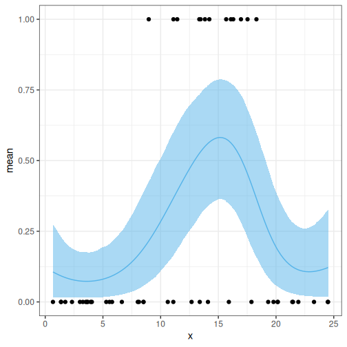
Challenge
Think of ways to modify the Stan program for the logistic GP regression so that the posterior behavior is more reasonable in the prediction range.
Let’s modify the program by setting the GP mean to a negative value and treating the length scale as a parameter.
STAN
data {
// Data
int<lower=1> N_data;
array[N_data] int<lower=0, upper=1> y;
array[N_data] real x_data;
// Prediction points
int<lower=1> N_pred;
array[N_pred] real x_pred;
real<lower=0> alpha;
}
transformed data {
int<lower=1> N = N_data + N_pred;
array[N] real x;
x[1:N_data] = x_data;
x[(N_data+1):N] = x_pred;
}
parameters {
real a;
vector[N] eta;
real<lower=0> lambda;
}
transformed parameters {
matrix[N, N] K;
matrix[N, N] L;
vector[N] f;
// Covariance function
K = gp_exp_quad_cov(x, alpha, lambda);
// Add nugget on diagonal for numerical stability
for (n in 1:N) {
K[n, n] = K[n, n] + 1e-6;
}
L = cholesky_decompose(K);
f = rep_vector(-3, N) + L*eta;
}
model {
// Likelihood
y ~ bernoulli_logit(a + f[1:N_data]);
// Priors
a ~ normal(0, 10);
eta ~ normal(0, 1);
lambda ~ gamma(2, 1);
}
generated quantities{
vector[N] theta = 1 / (1 + exp(-(alpha + f)));
}Refit the model and check posterior
R
Sys.setenv(
TMPDIR = "C:/cmdstan_temp",
TEMP = "C:/cmdstan_temp",
TMP = "C:/cmdstan_temp"
)
options(
cmdstanr_write_stan_file_dir = "C:/cmdstan_work",
cmdstanr_write_exe_dir = "C:/cmdstan_work"
)
if(!exists("logistic_gp_model2")) {
logistic_gp_model2 <- cmdstanr::cmdstan_model(cmdstanr::write_stan_file(logistic_gp_model2_code))
}
logistic_gp_fit2 <- logistic_gp_model2$sample(
data = list(N_data = nrow(insect),
y = insect$y,
x_data = insect$x,
alpha = 1,
N_pred = N_pred,
x_pred = x_pred),
chains = 1,
refresh = 0)
OUTPUT
Running MCMC with 1 chain...
Chain 1 finished in 34.2 seconds.R
theta_summary2 <- logistic_gp_fit2$summary("theta") %>%
data.frame() %>%
select(lower_2.5 = q5, mean, upper_97.5 = q95) %>%
mutate(x = c(insect$x, x_pred))
p_theta2 <-
ggplot() +
geom_ribbon(data = theta_summary2,
aes(x = x, ymin = lower_2.5, ymax = upper_97.5),
fill = posterior_color, alpha = 0.5) +
geom_line(data = theta_summary2,
aes(x = x, y = mean), color = posterior_color) +
geom_point(data = insect,
aes(x = x, y = y))
p_theta2
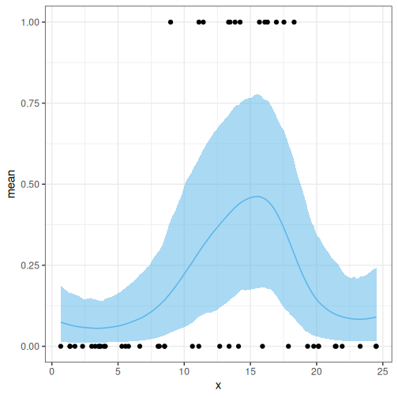
Challenge
Generate a posterior for the optimal temperature.
- GPs provide a means for non-parametric regression.
- A GP has two parameters: mean, and covariance.
- GPs can be used a part of more complex models.
Content from Survival Analysis
Last updated on 2026-08-10 | Edit this page
Overview
Questions
- What are survival models and how do they handle censored time-to-event data?
- How can Bayesian survival models be implemented and interpreted using Stan?
Objectives
- Understand survival functions, hazard functions, and censoring in survival data.
- Learn to implement and compare Weibull and Cox proportional hazards models using Stan.
- Extend survival models with hierarchical structures and evaluate model results.
Survival (or time-to-event) data arise when the outcome of interest is the time until some event occurs, such as device failure, disease onset or death. A key difference to ordinary regression settings is that time-to-event data are commonly censored, meaning that for some data points the event has not occurred by the end of the observation period. This may happen because the study ends before the event occurs, a participant leaves the study, or the event is otherwise not observed during follow-up. This implies that the exact event time is unknown and analyses must use techniques that account for both observed event times and censored observations.
In this episode, we will exclusively analyze right-censored data, where each individual is followed until either the event occurs or the observation period ends. For censored individuals, the event time is only known to be longer than the observed follow-up time. This is the most common type of censoring, but there are two other censoring mechanisms are sometimes encountered. In left censoring, the event occurs before observation begins, so the event time is only known to be earlier than a given time point. Interval censoring means a situation where the event occurs between two observation times, but the exact timing is unknown.
Before we start building survival models in Stan, we need to first get familiar with some mathematical concepts important in survival analysis.
For each individual, we observe a follow-up time \[ Y_i=\min(T_i,C_i), \]
where \(T_i\) is the true event time and \(C_i\) is the censoring time. We also observe an indicator variable that records whether the event occurred during follow-up. This indicator is usually defined as
\[ \delta_i = \begin{cases} 1, & \text{if } T_i \leq C_i \quad \text{(event observed)},\\ 0, & \text{if } T_i > C_i \quad \text{(right censored)}. \end{cases} \]
The two functions central to specifying common survival models are the survival function \(S(t) = P(T > t)\) and the hazard function \(h(t)\). The former gives the probability of surviving beyond time \(t\), whereas the latter describes the instantaneous event rate at time \(t\) among individuals who have not experienced the event before \(t\). Formally the hazard is defined as \[h(t) = \lim_{dt \to 0} \dfrac{P(t \le T < t + dt \mid T \ge t)}{dt}. \] These two functions are linked through the identity \(S(t) = \exp\{-H(t)\},\) where \(H(t)\) is the cumulative hazard, representing the accumulated hazard up to time \(t\), \(H(t) = \int_0^t h(u)\,du\).
While a wealth of various tools for survival analysis have been presented, including modern machine learning approaches, in this episode, we will focus on two relatively standard models: the parametric Weibull model and the semiparametric Cox proportional hazards model. Both of these models use the multiplicative form \(h(t \mid x) = h_0(t)\,\exp(x^\top \beta),\) where \(h_0(t)\) is the baseline hazard describing hazard evolution when covariates equal zero.
A key distinction between the two models is that the Weibull model uses an explicit functional form for the baseline hazard (and simultaneously for the event times), while in the Cox model this is left unspecified. The Weibull model gains statistical strength from this assumed functional form. However, a mismatch between the assumption and data can lead to a poor model fit. The Cox model, on the other hand, can be more robust when the baseline hazard shape is unknown. Both approaches enable assessment of covariate effects on survival. The Weibull model provides survival predictions directly through its assumed distribution, whereas Cox models require an estimate of the baseline hazard to obtain absolute survival predictions.
Censored observations contribute information through the survival function, because although the exact event time is unknown, we know that the event has not occurred before the observed follow-up time. In other words, the contribution of a censored observation is the probability that the event time exceeds the censoring threshold, namely \(1-F_T(t^{cens})\), where \(F_T(t)=\text{Pr}(T<t)\) is the cumulative distribution function of survival time.
The survival models introduced above can be formulated using different statistical frameworks. In this episode, we adopt a Bayesian approach and implement survival models using Stan. We focus on how the Bayesian framework extends survival analysis by representing model parameters through posterior distributions, allowing uncertainty in survival quantities of interest to be quantified directly.
Bayesian survival analysis
The survival models introduced above describe the relationship between covariates and time-to-event outcomes through quantities such as regression coefficients, hazard functions, and survival probabilities. These models can be estimated using either frequentist or Bayesian approaches. In this episode, we focus on the Bayesian formulation, where uncertainty about survival model parameters is represented through posterior distributions.
The main difference between classical and Bayesian survival analysis is how uncertainty is handled. Traditional survival models typically provide point estimates of parameters together with uncertainty measures based on large-sample approximations. In contrast, Bayesian survival models estimate a posterior distribution for each unknown parameter by combining the survival likelihood with prior distributions.
For survival models, the likelihood accounts for both observed events and censored observations. After combining this likelihood with prior information, we obtain posterior distributions for model parameters such as regression coefficients, Weibull shape parameters, and hierarchical effects.
Using Stan, we obtain samples from these posterior distributions through Markov chain Monte Carlo (MCMC) methods. These posterior draws allow us to directly calculate uncertainty for quantities of interest in survival analysis. For example, instead of estimating a single hazard ratio, we obtain its posterior distribution:
\[ HR=\exp(\beta). \]
Similarly, posterior samples can be transformed to obtain survival curves, median survival times, and predictions for new individuals while naturally propagating parameter uncertainty.
Before implementing the survival models in Stan, we first introduce the experimental dataset that will be used throughout this episode. This dataset provides time-to-event outcomes and relevant covariates, allowing us to apply the Bayesian survival framework developed above in a practical setting.
Survival data
To demonstrate survival analysis in Stan, we will analyze a real-world biological dataset containing gut microbiome profiles from laboratory-grown mice (ref?). The aim is to investigate whether the abundance of specific bacterial genera measured in stool samples is associated with the time until Type 1 Diabetes (T1D) onset.
For each mouse, the dataset contains:
- the observed follow-up time (
Event_time), corresponding to the survival observation \((Y_i=\min(T_i,C_i))\), - an event indicator (
Event), where 1 denotes diabetes onset during follow-up and 0 indicates right censoring, and - measurements of bacterial abundances for 48 microbial genera, which are used as covariates in the survival models.
The dataset is provided as a TreeSummarizedExperiment
object in the lesson repository. We use the mia package for
microbiome data manipulation and analysis, and to work with microbiome
assays stored in the TreeSummarizedExperiment format.
Before fitting survival models, we preprocess the microbial abundance data using a standard workflow:
Relative abundance transformation: Raw sequencing counts are converted into relative abundances to account for differences in sequencing depth between samples.
Prevalence filtering: Microbial genera that are rarely observed across samples are removed to reduce sparsity and improve the reliability of abundance estimates. A genus is considered present when its relative abundance exceeds a predefined detection threshold, and only genera observed in a sufficient fraction of samples are retained.
Logarithmic transformation: Since microbial abundance data are highly skewed and may contain zero values, the retained microbial abundances are log-transformed using a small pseudocount to stabilize variance and improve numerical behavior.
Standardization: Continuous microbial abundance covariates are standardized to have mean 0 and standard deviation 1. This improves computational stability during Hamiltonian Monte Carlo sampling in Stan. Additionally, hazard ratios can be interpreted as the change in hazard associated with a one standard deviation increase in log-transformed microbial abundance.
The following code loads the dataset, performs the pre-processing steps, and prepares the data structure required for survival model implementation in Stan.
R
# Load required libraries for data processing and handling
library(tidyverse)
library(cmdstanr)
library(posterior)
library(survival)
library(TreeSummarizedExperiment)
library(survminer)
# library(mia)
R
# Load TSE
tse <- readRDS(file.path("data", "survival_tse.rds"))
# Relative abundance transformation
counts <- SummarizedExperiment::assay(tse, "counts")
sample_totals <- colSums(counts)
if (any(sample_totals == 0)) {
stop("At least one sample has a total count of zero.")
}
rel <- sweep(
counts,
MARGIN = 2,
STATS = sample_totals,
FUN = "/"
)
# Extract relative abundance matrix
rel <- assay(tse, "relabundance")
ERROR
Error in `assay()`:
! 'assay(<TreeSummarizedExperiment>, i="character", ...)' invalid subscript 'i'
'relabundance' not in names(assays(<TreeSummarizedExperiment>))R
# Prevalence filtering
# A genus is considered present if relative abundance >= 0.1%
REL_PRES_MIN <- 1e-3
# Retain genera present in at least 30% of samples
PREV_MIN <- 0.30
genus_prevalence <- rowMeans(rel >= REL_PRES_MIN)
selected_microbes <- names(
genus_prevalence[genus_prevalence >= PREV_MIN]
)
length(selected_microbes)
OUTPUT
[1] 28R
# Log transform selected microbial abundances
log_abund <- log(
rel[selected_microbes, , drop = FALSE] + 1e-6
)
df <- as.data.frame(t(log_abund))
# Outcomes
df$Event <- sample_data$Event
ERROR
Error:
! object 'sample_data' not foundR
df$Event_time <- sample_data$Event_time
ERROR
Error:
! object 'sample_data' not foundR
# Build design matrix (scaled)
X <- scale(
as.matrix(df[, selected_microbes, drop = FALSE])
)
K <- ncol(X)
# Analysis data frame
analysis_df <- data.frame(
time = as.numeric(df$Event_time),
event = as.integer(df$Event),
X,
check.names = FALSE
)
ERROR
Error in `data.frame()`:
! arguments imply differing number of rows: 0, 150R
rownames(analysis_df) <- rownames(df)
ERROR
Error:
! object 'analysis_df' not foundR
# Stan data
standata <- list(
N = nrow(analysis_df),
K = K,
time = as.vector(analysis_df$time),
event = as.integer(analysis_df$event),
X = as.matrix(
analysis_df[, colnames(X), drop = FALSE]
)
)
ERROR
Error in `h()`:
! error in evaluating the argument 'x' in selecting a method for function 'nrow': object 'analysis_df' not foundAfter prevalence filtering, the remaining microbial genera were included as covariates in the survival models. In this dataset, 28 microbial genera passed the filtering criteria.
Before fitting any survival models, it is good practice to inspect the processed dataset and verify that the survival outcomes and covariates have been prepared correctly. In particular, we check that the dataset contains both observed events and right-censored observations, and that the follow-up times and covariates have the expected structure.
R
# Inspect the structure of the analysis dataset
glimpse(analysis_df)
ERROR
Error:
! object 'analysis_df' not foundR
# Check the number of observed events and censored observations
table(analysis_df$event)
ERROR
Error:
! object 'analysis_df' not foundR
# Inspect the distribution of follow-up times
summary(analysis_df$time)
ERROR
Error in `h()`:
! error in evaluating the argument 'object' in selecting a method for function 'summary': object 'analysis_df' not foundR
# View the first observations
head(analysis_df)
ERROR
Error in `h()`:
! error in evaluating the argument 'x' in selecting a method for function 'head': object 'analysis_df' not foundKaplan–Meier estimate
Before fitting parametric survival models, we first visualize the observed survival experience using the Kaplan–Meier estimator. Unlike the Weibull and Cox models introduced later, the Kaplan–Meier estimator is a non-parametric method that does not assume a specific distribution for the event times.
The Kaplan–Meier estimator provides an estimate of the survival function
\[ S(t)=P(T>t), \]
and naturally incorporates right-censored observations. Censored individuals contribute information up to their last observed follow-up time, after which their event status remains unknown.
For our dataset, the Kaplan–Meier curve represents the estimated probability that a mouse remains free of Type 1 Diabetes (T1D) as follow-up time increases. This provides an exploratory summary of the observed survival patterns before introducing model-based estimates.
R
# Kaplan-Meier estimate
km_fit <- survfit(
Surv(time, event) ~ 1,
data = analysis_df
)
ERROR
Error:
! object 'analysis_df' not foundR
# Plot Kaplan-Meier curve
ggsurvplot(
km_fit,
data = analysis_df,
conf.int = TRUE,
risk.table = TRUE,
xlab = "Follow-up time (years)",
ylab = "Probability of remaining diabetes-free",
ggtheme = theme_bw()
)
ERROR
Error:
! object 'km_fit' not foundThe Kaplan–Meier curve shows a gradual decline in diabetes-free survival over the follow-up period, with increasing uncertainty at later times due to fewer individuals remaining at risk. While this provides an overall view of survival patterns, it does not explain the factors associated with differences in event risk. Therefore, we next introduce Bayesian survival models with microbial covariates to investigate these associations.
Weibull survival model
The Weibull model is a parametric survival model that specifies a probability distribution for event times. In the Bayesian framework, the unknown Weibull parameters and regression coefficients are treated as uncertain quantities and estimated through their posterior distributions. The distribution has two parameters: shape \(k>0\) and scale \(\lambda>0\). A common way to include covariates in the model is to let the scale parameter depend on a linear predictor,
\[ \lambda = \exp(\beta_0 + \beta_1X_1 + \cdots + \beta_KX_K), \] where \(X_i\) are the covariate values and \(\beta_i\) are the corresponding regression coefficients. Here, the covariates enter the model through the scale parameter, corresponding to an accelerated failure time (AFT) parameterization. Since the scale parameter determines the time scale of the distribution, larger values of \(\lambda\) correspond to longer expected survival times. Consequently, positive regression coefficients increase survival time, whereas negative coefficients decrease it.
The shape parameter, on the other hand, controls how the risk evolves over time: when \(0<k<1\) the hazard decreases, with \(k=1\) it is constant, and when \(k>1\) it increases. This flexibility makes the Weibull distribution a useful starting point for modeling a wide range of survival processes.
The survival and hazard functions can be shown to take the following form (Klein and Moeschberger, 2003):
\[ S(t)=\exp\left[-\left(\frac{t}{\lambda}\right)^{k}\right], \] and \[ h(t) = \frac{k}{\lambda}\left(\frac{t}{\lambda}\right)^{k-1}. \] A convenient summary is the median survival time \[ \operatorname{med}(T)=\lambda(\log 2)^{1/k}, \] which increases linearly with \(\lambda\) and, for a fixed \(\lambda\), decreases as \(k\) increases.
Under this parameterization, increasing a covariate \(x_j\) by one unit while holding all other covariates constant results in the hazard ratio:
\[ \mathrm{HR}_j \;=\; \frac{h\!\left(t \mid x_j + 1\right)}{h\!\left(t \mid x_j\right)} \;=\; \exp\!\left(-k\,\beta_j\right). \]
Thus, under this AFT parameterization, a positive regression coefficient increases the Weibull scale parameter, leading to longer survival times and a hazard ratio smaller than one. Conversely, a negative coefficient decreases the scale parameter, resulting in shorter survival times and a hazard ratio greater than one.
Example
We now implement the Weibull survival model in Stan using the microbiome dataset introduced earlier. Our goal is to estimate the associations between microbial abundances and the time to Type 1 Diabetes onset, and to summarize these effects using posterior hazard ratios.
The Stan program for the Weibull model is shown below. The likelihood
is specified using the target += notation, which directly
increments the model’s log posterior density. Unlike the ~
notation, target += allows different likelihood
contributions to be added explicitly for observed events and
right-censored observations. This makes it well suited for survival
models, where events contribute the log probability density
(weibull_lpdf) and censored observations contribute the log
survival probability (weibull_lccdf). The program is also
written to accommodate models without covariates by allowing the number
of covariates, K, to be zero.
STAN
// Weibull survival model (shape k, scale lambda), Bayesian AFT form
data {
int<lower=1> N; // number of observations
int<lower=0> K; // number of covariates
vector<lower=0>[N] time; // observed follow-up times
array[N] int<lower=0, upper=1> event; // 1=event, 0=right censored
matrix[N, K] X; // standardized covariates
}
parameters {
real<lower=0> k; // Weibull shape parameter
real beta0; // intercept
vector[K] beta; // regression coefficients
}
transformed parameters {
vector<lower=0>[N] lambda;
// AFT formulation:
// log(lambda_i) = beta0 + X_i beta
lambda = exp(beta0 + X * beta);
}
model {
// Priors
k ~ lognormal(0, 1);
beta0 ~ normal(0, 1);
beta ~ normal(0, 1);
// Factorized survival likelihood
for (i in 1:N) {
if (event[i] == 1) {
// Observed events:
// contribution from Weibull density
target += weibull_lpdf(time[i] | k, lambda[i]);
} else {
// Right-censored observations:
// contribution from survival function S(t)
target += weibull_lccdf(time[i] | k, lambda[i]);
}
}
}
generated quantities {
vector[N] t_median;
for (i in 1:N) {
t_median[i] = lambda[i] * pow(log(2), 1.0/k);
}
}After fitting the Weibull model, we transform posterior draws of the regression coefficients and the Weibull shape parameter to obtain posterior distributions of hazard ratios:
\[ HR_j = \exp(-k\beta_j). \]
Because Bayesian inference provides samples from the posterior distribution, uncertainty in hazard ratios can be obtained directly by applying this transformation to every posterior draw. We summarize each hazard ratio using its posterior median and 95% credible interval.
The resulting posterior summaries are visualized using a forest plot.
R
# Fit Weibull model
fit <- weibull_model$sample(
data = standata,
seed = 2026,
chains = 4,
parallel_chains = 4,
refresh = 0,
show_messages = FALSE
)
ERROR
Error:
! 'data' should be a path or a named list.R
# Extract posterior draws
draws <- posterior::as_draws_matrix(fit$draws())
ERROR
Error in `fit$draws`:
! object of type 'closure' is not subsettableR
# Weibull shape parameter
k_draw <- draws[, "k"]
ERROR
Error:
! object 'draws' not foundR
K <- standata$K
ERROR
Error in `standata$K`:
! object of type 'closure' is not subsettableR
covar_names <- colnames(standata$X)
ERROR
Error:
! error in evaluating the argument 'x' in selecting a method for function 'colnames': object of type 'closure' is not subsettableR
# Calculate posterior hazard ratios
hr_mat <- do.call(rbind, lapply(seq_len(K), function(j) {
beta_draw <- draws[, paste0("beta[", j, "]")]
hr_draw <- exp(-k_draw * beta_draw)
c(
median = median(hr_draw),
lower = quantile(hr_draw, 0.025),
upper = quantile(hr_draw, 0.975)
)
}))
ERROR
Error in `h()`:
! error in evaluating the argument 'args' in selecting a method for function 'do.call': object 'draws' not foundR
# Create summary data frame
hr_df <- as.data.frame(hr_mat)
ERROR
Error in `h()`:
! error in evaluating the argument 'x' in selecting a method for function 'as.data.frame': object 'hr_mat' not foundR
hr_df$term <- covar_names
ERROR
Error:
! object 'covar_names' not foundR
names(hr_df) <- c(
"HR",
"lower",
"upper",
"term"
)
ERROR
Error:
! object 'hr_df' not foundR
# Identify taxa where 95% credible interval excludes 1
hr_df$association <-
(hr_df$lower > 1) | (hr_df$upper < 1)
ERROR
Error:
! object 'hr_df' not foundR
# Order taxa
hr_df <- hr_df[order(hr_df$HR), ]
ERROR
Error:
! object 'hr_df' not foundR
hr_df$term <- factor(
hr_df$term,
levels = hr_df$term
)
ERROR
Error:
! object 'hr_df' not foundR
# Forest plot
ggplot(hr_df, aes(y = term, x = HR, color = association)) +
geom_vline(
xintercept = 1,
linetype = "dashed",
color = "grey70"
) +
geom_pointrange(
aes(xmin = lower, xmax = upper),
size = 0.6
) +
scale_x_continuous(
trans = "log10"
) +
scale_color_manual(
values = c(`TRUE` = "firebrick", `FALSE` = "#2C3E50"),
guide = "none"
) +
labs(
title = "Posterior hazard ratios from Weibull model",
x = "Hazard ratio (log scale, per SD increase)",
y = NULL
) +
theme_bw() +
theme(
panel.grid.minor = element_blank(),
plot.title = element_text(face = "bold")
)
ERROR
Error:
! object 'hr_df' not foundAs evident from the forest plot, only a subset of the microbial genera have 95% credible intervals that exclude the reference value of 1, indicating posterior evidence of an association with the hazard of Type 1 Diabetes onset. Hazard ratios greater than 1 correspond to an increased instantaneous risk of diabetes onset, whereas hazard ratios less than 1 indicate a protective association. Because the microbial abundances were standardized before model fitting, each hazard ratio represents the change in hazard associated with a one standard deviation increase in the log-transformed abundance of the corresponding genus.
For the remaining genera, the 95% credible intervals include 1, indicating that the posterior uncertainty is consistent with both increased and decreased hazards.
Model discrimination
Besides estimating hazard ratios, it is useful to assess how well the fitted model discriminates between individuals with higher and lower event risk. A commonly used measure is Harrell’s concordance index (C-index), which is the proportion of comparable pairs of individuals whose predicted risks are correctly ordered.
The C-index ranges from 0 to 1, with 1 indicating perfect discrimination and 0.5 indicating performance no better than random ordering. Values below 0.5 suggest that the model predicts the risk ordering in the opposite direction. Comparable pairs are determined by the observed event times and censoring indicators.
R
library(survival)
# Posterior median coefficients
beta0_med <- median(draws[, "beta0"])
ERROR
Error in `h()`:
! error in evaluating the argument 'x' in selecting a method for function 'median': object 'draws' not foundR
beta_med <- sapply(seq_len(K), function(j)
median(draws[, paste0("beta[", j, "]")])
)
ERROR
Error in `h()`:
! error in evaluating the argument 'x' in selecting a method for function 'median': object 'draws' not foundR
# Model score where larger values indicate better survival
risk_score <- beta0_med + as.matrix(standata$X) %*% beta_med
ERROR
Error:
! object 'beta0_med' not foundR
# Harrell's C-index
c_index <- concordance(
Surv(standata$time, standata$event) ~ risk_score
)
ERROR
Error in `standata$time`:
! object of type 'closure' is not subsettableR
c_index$concordance
ERROR
Error:
! object 'c_index' not foundThe fitted Weibull model achieved a C-index of approximately 0.76, indicating that the model correctly ranks individuals according to their relative risk in about 76% of comparable pairs.
Although the C-index provides a quantitative measure of discrimination, it does not directly show how survival patterns differ between individuals with different predicted risks. To visualize this separation, individuals are divided into low- and high-risk groups based on the model-based risk score, and Kaplan–Meier survival curves are compared between the groups.
R
risk_score <- -(beta0_med + as.matrix(standata$X) %*% beta_med)
ERROR
Error:
! object 'beta0_med' not foundR
# Create data frame for Kaplan-Meier estimation
dat_km <- data.frame(
time = standata$time,
event = standata$event,
risk = as.numeric(risk_score)
)
ERROR
Error in `standata$time`:
! object of type 'closure' is not subsettableR
# Divide individuals into low- and high-risk groups
# based on the median predicted risk score
risk_cutoff <- median(dat_km$risk)
ERROR
Error in `h()`:
! error in evaluating the argument 'x' in selecting a method for function 'median': object 'dat_km' not foundR
dat_km$risk_group <- factor(
ifelse(dat_km$risk >= risk_cutoff,
"High risk",
"Low risk"),
levels = c("Low risk", "High risk")
)
ERROR
Error:
! object 'dat_km' not foundR
# Kaplan-Meier survival curves
km_fit <- survfit(
Surv(time, event) ~ risk_group,
data = dat_km
)
ERROR
Error:
! object 'dat_km' not foundR
# Plot survival curves
ggsurvplot(
km_fit,
data = dat_km,
conf.int = TRUE,
legend.title = "Predicted risk group",
legend.labs = c("Low risk", "High risk"),
xlab = "Time (years)",
ylab = "Survival probability"
)
ERROR
Error:
! object 'km_fit' not foundThe Kaplan–Meier curves provide a visual assessment of whether the predicted risk groups exhibit different survival patterns. Separation between the curves indicates that the model-based risk score captures meaningful differences in diabetes onset timing.
Challenge
Generate posterior predictive event times using the fitted Weibull model.
Using posterior draws from the fitted model:
- Simulate event times for a selected individual.
- Summarize the predicted survival time using the posterior median and a 95% credible interval.
Use the posterior samples of the Weibull parameters to generate predictive event times. For each posterior draw, calculate the individual-specific scale parameter:
\[ \lambda_i^{(s)} = \exp(\beta_0^{(s)} + x_i^\top\beta^{(s)}) \]
and simulate:
\[ T_i^{(s)} \sim \text{Weibull}(k^{(s)}, \lambda_i^{(s)}) \]
The simulated event times represent the posterior predictive distribution. Summarize these samples using their median and quantiles to obtain the posterior median survival time and the 95% credible interval.
Cox proportional hazards model
The Cox proportional hazards (PH) model is a semiparametric approach for time-to-event data in which covariates act multiplicatively on the hazard function. In the Bayesian formulation, the regression coefficients are treated as uncertain quantities and estimated through their posterior distributions, while the baseline hazard is not specified parametrically.
Let \(T\) be the event time and \(X\) denote the covariates. The hazard function is defined as
\[ h(t \mid X) = h_0(t)\exp(X^\top\beta), \]
where \(h_0(t)\) is the baseline hazard function and \(\beta\) represents the regression coefficients. Unlike the Weibull accelerated failure time (AFT) model, where covariates influence the survival time through the scale parameter, the Cox PH model directly describes how covariates modify the instantaneous event risk.
Through the cumulative baseline hazard,
\[ H_0(t)=\int_0^t h_0(u)\,du, \]
the survival function can be written as
\[ S(t \mid X)=\exp\left[-H_0(t)\exp(X^\top\beta)\right] =S_0(t)^{\exp(X^\top\beta)}. \]
This formulation shows that covariates act by scaling the cumulative hazard while leaving the baseline hazard unspecified.
The coefficients \(\beta\) are interpreted as log-hazard ratios. For a one-unit increase in covariate \(x_j\), while keeping other covariates fixed, the hazard changes by
\[ \mathrm{HR}_j= \frac{h(t \mid x_j+1)} {h(t \mid x_j)} =\exp(\beta_j). \]
Therefore, a positive coefficient gives
\[ \mathrm{HR}_j>1, \]
indicating an increased hazard, while a negative coefficient gives
\[ \mathrm{HR}_j<1, \]
indicating a protective association and reduced hazard.
Estimation of the Cox model is based on the partial likelihood, which compares the linear predictor of an individual experiencing the event with those of individuals who remain at risk at the same event time. This approach avoids specifying the baseline hazard function, making the Cox model a flexible alternative to fully parametric survival models.
The key assumption of the Cox PH model is the proportional hazards assumption, which states that hazard ratios between individuals remain constant over time. Under this assumption, the relative effect of covariates on the event risk does not change during the follow-up period.
In the Bayesian implementation, posterior samples of the regression coefficients are obtained through Markov chain Monte Carlo methods. These posterior draws allow direct uncertainty quantification for hazard ratios and other quantities of interest.
The Cox partial likelihood used in this implementation estimates regression coefficients without specifying the baseline hazard. This makes the model flexible for estimating relative effects, such as hazard ratios, but it does not directly provide absolute survival probabilities or event-time predictions.
When individual survival prediction is required, the baseline hazard can be modeled explicitly using flexible approaches such as spline-based baseline hazard models. These approaches retain the proportional hazards structure while allowing estimation of individual survival curves and posterior predictive event times.
Example
In this example, we illustrate the Cox proportional hazards model by estimating posterior hazard ratios and comparing risk groups using Kaplan–Meier curves. The model is implemented in Stan using the Cox partial likelihood formulation. Below is the Stan program for the model.
STAN
// Cox proportional hazards model, partial likelihood (PH form)
data {
int<lower=1> N; // observations
int<lower=0> K; // number of covariates
vector<lower=0>[N] time; // observed times t_i
array[N] int<lower=0, upper=1> event; // 1=event, 0=right-censored
matrix[N, K] X; // covariates (N x K, K can be 0)
}
transformed data {
// Indices of observed events
int<lower=0> n_event = 0;
array[N] int event_idx;
for (i in 1:N) {
if (event[i] == 1) {
n_event += 1;
event_idx[n_event] = i;
}
}
}
parameters {
vector[K] beta; // log hazard ratios
}
model {
// Weakly-informative prior
if (K > 0) beta ~ normal(0, 1);
// Cox partial log-likelihood
vector[N] eta;
if (K > 0) eta = X * beta; else eta = rep_vector(0, N);
for (e in 1:n_event) {
int i = event_idx[e];
real lse = negative_infinity(); // log(0)
for (j in 1:N) {
if (time[j] >= time[i]) // j in risk set at t_i
lse = log_sum_exp(lse, eta[j]);
}
target += eta[i] - lse;
}
}
generated quantities {
vector[K] HR; // per-covariate hazard ratios
for (k in 1:K) HR[k] = exp(beta[k]);
}The Cox model estimates the regression coefficients \(\beta\), which represent log-hazard ratios. Therefore, the hazard ratio for a one-unit increase in covariate \(x_j\), while holding other covariates constant, is calculated as
\[ \mathrm{HR}_j = \frac{h(t \mid x_j+1)} {h(t \mid x_j)} = \exp(\beta_j). \]
Unlike the Weibull AFT model, where the hazard ratio is obtained as \(\exp(-k\beta_j)\) because covariates act through the survival-time scale parameter, the Cox PH model directly models the effect of covariates on the hazard. Therefore, in the Cox model:
- \(\mathrm{HR}_j > 1\) indicates an increased hazard (shorter time to event),
- \(\mathrm{HR}_j < 1\) indicates a protective association (lower hazard and longer survival time).
In the Bayesian analysis, hazard ratios are calculated from posterior draws of \(\beta_j\) using \(\exp(\beta_j)\). The posterior median and the 95% credible interval (2.5%–97.5%) are then used to summarize the uncertainty of each microbial association.
Posterior draws of the regression coefficients are transformed into hazard ratios using \(\exp(\beta_j)\). For each genus, we summarize the posterior median hazard ratio and its 95% credible interval using an ordered forest plot.
R
# Fit the Cox proportional hazards model
fit <- cox_model$sample(
data = standata,
chains = 4,
iter_warmup = 1000,
iter_sampling = 3000,
seed = 2025,
refresh = 0,
adapt_delta = 0.95
)
ERROR
Error:
! 'data' should be a path or a named list.R
# Extract posterior draws
draws <- posterior::as_draws_matrix(fit$draws())
ERROR
Error in `fit$draws`:
! object of type 'closure' is not subsettableR
K <- standata$K
ERROR
Error in `standata$K`:
! object of type 'closure' is not subsettableR
covar_names <- colnames(standata$X)
ERROR
Error:
! error in evaluating the argument 'x' in selecting a method for function 'colnames': object of type 'closure' is not subsettableR
# Posterior hazard ratios
hr_mat <- do.call(rbind, lapply(seq_len(K), function(j) {
beta_draw <- draws[, paste0("beta[", j, "]")]
hr_draw <- exp(beta_draw)
c(
median = median(hr_draw),
lower = quantile(hr_draw, 0.025),
upper = quantile(hr_draw, 0.975)
)
}))
ERROR
Error in `h()`:
! error in evaluating the argument 'args' in selecting a method for function 'do.call': object 'draws' not foundR
hr_df <- as.data.frame(hr_mat)
ERROR
Error in `h()`:
! error in evaluating the argument 'x' in selecting a method for function 'as.data.frame': object 'hr_mat' not foundR
hr_df$term <- covar_names
ERROR
Error:
! object 'covar_names' not foundR
names(hr_df) <- c(
"HR",
"lower",
"upper",
"term"
)
ERROR
Error:
! object 'hr_df' not foundR
hr_df$association <-
(hr_df$lower > 1) | (hr_df$upper < 1)
ERROR
Error:
! object 'hr_df' not foundR
hr_df <- hr_df[order(hr_df$HR), ]
ERROR
Error:
! object 'hr_df' not foundR
hr_df$term <- factor(
hr_df$term ,
levels = hr_df$term
)
ERROR
Error:
! object 'hr_df' not foundR
# Forest plot
ggplot(hr_df, aes(y = term, x = HR, color = association)) +
geom_vline(
xintercept = 1,
linetype = "dashed",
color = "grey70"
) +
geom_pointrange(
aes(
xmin = lower,
xmax = upper
),
size = 0.6
) +
scale_x_continuous(
trans = "log10"
) +
scale_color_manual(
values = c(
`TRUE` = "firebrick",
`FALSE` = "#2C3E50"
),
guide = "none"
) +
labs(
title = "Cox PH hazard ratios",
x = "Hazard ratio (log scale)",
y = NULL
) +
theme_bw() +
theme(
panel.grid.minor = element_blank(),
plot.title = element_text(face = "bold")
)
ERROR
Error:
! object 'hr_df' not foundIn the Cox model, taxa with HR > 1 indicate increased diabetes onset hazard, while taxa with HR < 1 indicate protective associations. Taxa whose 95% credible intervals exclude 1 show stronger posterior evidence of an association, whereas intervals overlapping 1 indicate insufficient evidence for a directional effect.
Hazard ratios describe individual associations but do not measure overall model discrimination. Therefore, we evaluate the ability of the Cox model to rank individuals according to their event risk using Harrell’s concordance index (C-index). Harrell’s concordance index (C-index) measures how well the model ranks individuals according to their predicted event risk.
R
library(survival)
# Posterior median linear predictor
beta_med <- sapply(seq_len(K), function(j)
median(draws[, paste0("beta[", j, "]")])
)
ERROR
Error in `h()`:
! error in evaluating the argument 'x' in selecting a method for function 'median': object 'draws' not foundR
# Cox risk score (higher = higher hazard)
risk_score <- -as.numeric(
as.matrix(standata$X) %*% beta_med
)
ERROR
Error:
! error in evaluating the argument 'x' in selecting a method for function 'as.matrix': object of type 'closure' is not subsettableR
# Harrell's C-index
c_index <- concordance(
Surv(standata$time, standata$event) ~ risk_score
)
ERROR
Error in `standata$time`:
! object of type 'closure' is not subsettableR
c_index$concordance
ERROR
Error:
! object 'c_index' not foundThe fitted Cox model achieved a C-index of approximately 0.76, indicating that the model correctly ranks individuals in about 76% of comparable pairs. Values above 0.5 indicate better-than-random discrimination, with higher values representing stronger predictive ability.
To visualize the risk separation captured by the model, individuals are divided into high- and low-risk groups based on the median Cox risk score, and their Kaplan–Meier survival curves are compared.
R
# Cox linear predictor for risk grouping
km_risk_score <- as.numeric(
as.matrix(standata$X) %*% beta_med
)
ERROR
Error:
! error in evaluating the argument 'x' in selecting a method for function 'as.matrix': object of type 'closure' is not subsettableR
dat_km <- data.frame(
time = standata$time,
event = standata$event,
risk = km_risk_score
)
ERROR
Error in `standata$time`:
! object of type 'closure' is not subsettableR
# Median split
risk_cutoff <- median(dat_km$risk)
ERROR
Error in `h()`:
! error in evaluating the argument 'x' in selecting a method for function 'median': object 'dat_km' not foundR
dat_km$risk_group <- factor(
ifelse(dat_km$risk >= risk_cutoff,
"High risk",
"Low risk"),
levels = c("Low risk", "High risk")
)
ERROR
Error:
! object 'dat_km' not foundR
# Kaplan-Meier curves
km_fit <- survfit(
Surv(time, event) ~ risk_group,
data = dat_km
)
ERROR
Error:
! object 'dat_km' not foundR
ggsurvplot(
km_fit,
data = dat_km,
conf.int = TRUE,
legend.title = "Predicted risk group",
legend.labs = c("Low risk", "High risk"),
xlab = "Time",
ylab = "Survival probability"
)
ERROR
Error:
! object 'km_fit' not foundThe Kaplan–Meier curves show the survival patterns of the predicted risk groups. The high-risk group (larger \(x^\top\beta\)) shows lower survival probability, indicating earlier diabetes onset compared with the low-risk group. Clear separation between curves suggests that the Cox risk score captures meaningful differences in event risk.
Hierarchical survival model
In this final example, we consider a hierarchical extension of the
Cox proportional hazards model using the cancer dataset
from the survival package. In addition to patient-level
covariates, patients are clustered by treatment institution, allowing
institution-specific frailties to capture unexplained
between-institution heterogeneity.
The hierarchical Cox model extends the standard Cox model by combining fixed effects for patient characteristics with random effects that account for variation between institutions. For patient \(i\) treated at institution \(g[i]\), the hazard is
\[ h_i(t)=h_0(t)\exp\!\left(x_i^\top\beta+u_{g[i]}\right), \qquad u_g\sim\mathcal{N}(0,\sigma_u^2), \]
where \(x_i\) is the vector of standardized baseline covariates, \(\beta\) are the fixed-effect regression coefficients, and \(u_g\) is the institution-specific frailty with variance \(\sigma_u^2\). The random effects allow each institution to have its own baseline risk after accounting for patient-level predictors.
All baseline covariates are standardized (mean 0 and standard deviation 1), so the hazard ratios correspond to a one-standard-deviation increase in each covariate.
R
# Data
data(cancer, package = "survival")
# Complete cases
cancer2 <- na.omit(cancer)
# Outcome: time and event indicator (status: 1=censored, 2=dead)
cancer2$time <- cancer2$time
cancer2$event <- as.integer(cancer2$status == 2)
# Grouping factor: institution
cancer2$group <- factor(cancer2$inst)
G <- nlevels(cancer2$group)
# All baseline covariates
X_mm <- model.matrix(
~ age + sex + ph.ecog + ph.karno + pat.karno + meal.cal + wt.loss,
data = cancer2
)[, -1, drop = FALSE] # drop intercept
# Scale columns
X <- scale(X_mm)
K <- ncol(X)
# Analysis data frame
analysis_df_cancer <- data.frame(
time = cancer2$time,
event = cancer2$event,
group = cancer2$group,
X,
check.names = FALSE
)
# Stan data list for hierarchical Cox PH
standata_cancer <- list(
N = nrow(analysis_df_cancer),
G = G,
group = as.integer(analysis_df_cancer$group),
K = K,
time = as.vector(analysis_df_cancer$time),
event = as.integer(analysis_df_cancer$event),
X = as.matrix(analysis_df_cancer[, colnames(X), drop = FALSE])
)
The following Stan program implements the hierarchical Cox proportional hazards model by extending the standard Cox model with institution-specific random effects (frailties) while retaining the partial likelihood formulation.
STAN
// Stan: hierarchical Cox proportional hazards model
data {
int<lower=1> N; // observations
int<lower=1> G; // groups
array[N] int<lower=1, upper=G> group; // group index
int<lower=0> K; // number of covariates
vector<lower=0>[N] time; // observed times t_i
array[N] int<lower=0, upper=1> event; // 1=event, 0=censored
matrix[N, K] X; // covariates
}
transformed data {
int<lower=0> n_event = 0;
array[N] int event_idx;
for (i in 1:N) {
if (event[i] == 1) {
n_event += 1;
event_idx[n_event] = i;
}
}
}
parameters {
vector[K] beta; // log hazard ratios
vector[G] u_raw; // group effects
real<lower=0> sigma_u; // group SD
}
model {
vector[N] eta;
if (K > 0) beta ~ normal(0, 1);
u_raw ~ normal(0, 1);
sigma_u ~ normal(0, 1);
for (i in 1:N)
eta[i] = (K > 0 ? X[i] * beta : 0) + sigma_u * u_raw[group[i]];
for (e in 1:n_event) {
int i = event_idx[e];
real lse = negative_infinity();
for (j in 1:N) {
if (time[j] >= time[i])
lse = log_sum_exp(lse, eta[j]);
}
target += eta[i] - lse;
}
}
generated quantities {
vector[K] HR; // hazard ratios
real var_frailty = square(sigma_u); // between-group variance
for (k in 1:K)
HR[k] = exp(beta[k]);
}The following code fits the hierarchical Cox model and extracts posterior samples for the fixed effects and institution-specific frailties. Hazard ratios are then obtained by exponentiating the posterior regression coefficients.
R
# Fit hierarchical Cox and plot Hazard Ratios
fit_cancer_cox_hier <- cox_hier_model$sample(
data = standata_cancer,
chains = 4,
iter_warm = 1000,
iter_sampling = 3000,
seed = 2026,
refresh = 0,
adapt_delta = 0.95
)
OUTPUT
Running MCMC with 4 sequential chains...
Chain 1 finished in 47.1 seconds.
Chain 2 finished in 46.1 seconds.
Chain 3 finished in 48.2 seconds.
Chain 4 finished in 45.8 seconds.
All 4 chains finished successfully.
Mean chain execution time: 46.8 seconds.
Total execution time: 187.8 seconds.R
# Summary: fixed effects + frailty variance
fit_cancer_cox_hier$summary(variables = c("beta","sigma_u","var_frailty","HR"))
OUTPUT
# A tibble: 16 × 10
variable mean median sd mad q5 q95 rhat ess_bulk
<chr> <dbl> <dbl> <dbl> <dbl> <dbl> <dbl> <dbl> <dbl>
1 beta[1] 0.0965 0.0951 0.110 0.111 -0.0856 0.277 1.00 13115.
2 beta[2] -0.288 -0.287 0.0997 0.100 -0.455 -0.126 1.00 11897.
3 beta[3] 0.583 0.583 0.171 0.169 0.302 0.867 1.00 7563.
4 beta[4] 0.294 0.291 0.145 0.146 0.0560 0.539 1.00 8500.
5 beta[5] -0.180 -0.180 0.125 0.127 -0.385 0.0237 1.00 12726.
6 beta[6] -0.0221 -0.0207 0.112 0.112 -0.208 0.160 1.00 12382.
7 beta[7] -0.200 -0.199 0.104 0.103 -0.375 -0.0317 1.00 13881.
8 sigma_u 0.282 0.274 0.153 0.151 0.0467 0.550 1.00 3491.
9 var_frailty 0.103 0.0749 0.105 0.0770 0.00218 0.303 1.00 3491.
10 HR[1] 1.11 1.10 0.122 0.122 0.918 1.32 1.00 13115.
11 HR[2] 0.753 0.751 0.0751 0.0749 0.635 0.881 1.00 11897.
12 HR[3] 1.82 1.79 0.314 0.302 1.35 2.38 1.00 7563.
13 HR[4] 1.36 1.34 0.199 0.194 1.06 1.72 1.00 8500.
14 HR[5] 0.842 0.835 0.106 0.105 0.681 1.02 1.00 12726.
15 HR[6] 0.984 0.980 0.110 0.109 0.813 1.17 1.00 12382.
16 HR[7] 0.823 0.819 0.0855 0.0843 0.687 0.969 1.00 13881.
# ℹ 1 more variable: ess_tail <dbl>R
# Posterior draws
draws_cancer <- posterior::as_draws_matrix(fit_cancer_cox_hier$draws())
K <- standata_cancer$K
covar_names_cancer <- colnames(standata_cancer$X)
# Cox PH hazard ratios
hr_df_cancer <- do.call(rbind, lapply(seq_len(K), function(j) {
beta_draw <- draws_cancer[, paste0("beta[", j, "]")]
hr_draw <- exp(beta_draw)
data.frame(
HR = median(hr_draw),
lower = unname(quantile(hr_draw, 0.025)),
upper = unname(quantile(hr_draw, 0.975)),
term = covar_names_cancer[j],
stringsAsFactors = FALSE
)
}))
hr_df_cancer$signif <- (hr_df_cancer$lower > 1) | (hr_df_cancer$upper < 1)
hr_df_cancer <- hr_df_cancer[order(hr_df_cancer$HR), , drop = FALSE]
hr_df_cancer$term <- factor(hr_df_cancer$term, levels = hr_df_cancer$term)
ggplot(hr_df_cancer, aes(y = term, x = HR, color = signif)) +
geom_vline(xintercept = 1, linetype = "dashed", color = "grey70") +
geom_pointrange(aes(xmin = lower, xmax = upper), size = 0.6) +
scale_x_continuous(trans = "log10") +
scale_color_manual(values = c(`TRUE` = "firebrick", `FALSE` = "#2C3E50"),
guide = "none") +
labs(title = "Hierarchical Cox PH hazard ratios (cancer data)",
x = "Hazard ratio (log scale)", y = NULL) +
theme_bw() +
theme(
panel.grid.minor = element_blank(),
plot.title = element_text(face = "bold")
)
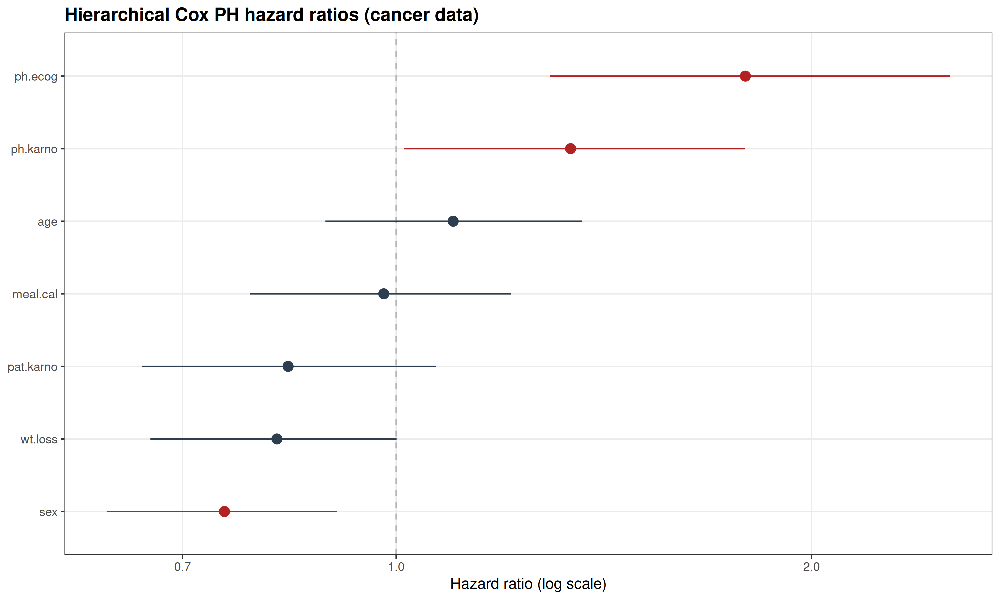
The forest plot summarizes the posterior hazard ratios for patient-level covariates after accounting for institution-specific frailty. Poorer performance status (ph.ecog and ph.karno) shows the strongest association with mortality, with hazard ratios above 1 and credible intervals excluding 1. Other covariates show weaker or more uncertain effects. The estimated frailty variance suggests some remaining between-institution heterogeneity after adjusting for patient characteristics.
we next evaluate model discrimination using Harrell’s concordance index (C-index) because these hazard ratios describe individual associations with mortality risk, they do not measure how well the model ranks patients according to their overall risk.
R
library(survival)
# Posterior median fixed effects
beta_med_cancer <- sapply(seq_len(K), function(j) {
median(draws_cancer[, paste0("beta[", j, "]")])
})
# Patient-level risk score from fixed effects
# negative sign used so larger values correspond to better survival
risk_score_cancer <- -as.numeric(
as.matrix(standata_cancer$X) %*% beta_med_cancer
)
# Harrell's C-index
c_index_cancer <- concordance(
Surv(standata_cancer$time, standata_cancer$event) ~ risk_score_cancer
)
c_index_cancer$concordance
OUTPUT
[1] 0.6552442The hierarchical Cox model achieved a C-index of approximately 0.65, indicating its ability to rank patients according to their mortality risk.
Although the C-index provides an overall measure of discrimination, it does not visualize differences in survival between risk groups. Therefore, we next compare Kaplan–Meier survival curves for patients classified into high- and low-risk groups based on the model-derived risk score.
R
# Posterior median fixed-effect coefficients
beta_med_cancer <- sapply(seq_len(K), function(j) {
median(draws_cancer[, paste0("beta[", j, "]")])
})
# Patient-level risk score (higher = higher mortality risk)
risk_score_cancer <- as.numeric(
as.matrix(standata_cancer$X) %*% beta_med_cancer
)
dat_km_cancer <- data.frame(
time = standata_cancer$time,
event = standata_cancer$event,
risk = risk_score_cancer
)
# Median split of predicted risk score
risk_cutoff <- median(dat_km_cancer$risk, na.rm = TRUE)
dat_km_cancer$risk_group <- factor(
ifelse(
dat_km_cancer$risk >= risk_cutoff,
"High risk",
"Low risk"
),
levels = c("Low risk", "High risk")
)
# Kaplan–Meier curves
km_fit_cancer <- survfit(
Surv(time, event) ~ risk_group,
data = dat_km_cancer
)
ggsurvplot(
km_fit_cancer,
data = dat_km_cancer,
conf.int = TRUE,
pval = TRUE,
legend.title = "Model-based risk",
legend.labs = c("Low risk", "High risk"),
xlab = "Time",
ylab = "Survival probability"
)
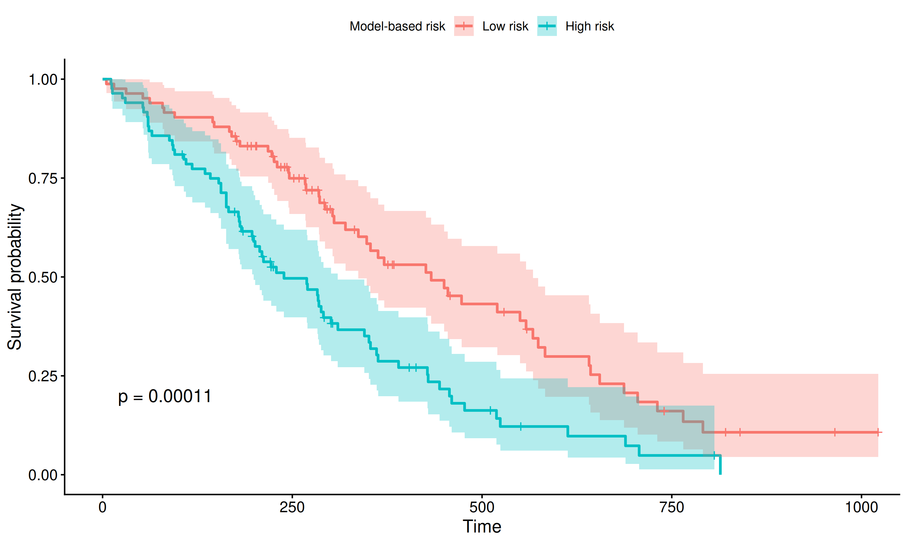
Kaplan–Meier curves by the model-based score (median split) show clear separation: the high PH risk group has lower survival, while the low-risk group remains higher. The log-rank test indicates a statistically significant difference.
Survival analysis models time until an event while handling censoring and aims to describe and compare time-to-event patterns across covariates or groups.
Time-to-event outcomes can be modeled parametrically with a Weibull model that specifies survival and hazard functions or semiparametrically with a Cox proportional hazards model that leaves the baseline hazard unspecified while estimating relative risk.
The hazard summarizes instantaneous event risk, hazard ratios compare risk between groups or covariate levels, and Kaplan–Meier curves provide a nonparametric survival estimate often shown with a log-rank test.
Challenge
Fit a Bayesian Cox proportional hazards model with sex as the only covariate and compare the estimated hazard ratio with Kaplan–Meier survival curves.
- Fit the Cox PH model in Stan using sex as the covariate and inspect
the posterior estimates of
betaandHR. - Transform posterior draws of
betainto hazard-ratio draws and summarize the posterior median and 95% credible interval for Female vs Male. - Plot Kaplan–Meier curves by sex and compare the nonparametric survival patterns with the Cox model estimate.
R
# Data
data(cancer, package = "survival")
cancer2 <- na.omit(cancer)
# Outcome: time and event (status: 1=censored, 2=dead)
time <- cancer2$time
event <- as.integer(cancer2$status == 2)
# Covariate: sex (0 = Male, 1 = Female)
sex_num <- ifelse(cancer2$sex == 2, 1, 0)
# X matrix
X_sex <- matrix(sex_num, ncol = 1)
colnames(X_sex) <- "sex_female"
K <- ncol(X_sex)
standata_sex <- list(
N = length(time),
K = K,
time = as.vector(time),
event= as.integer(event),
X = X_sex
)
# Fit Cox PH -model
fit_cox_sex <- cox_model$sample(
data = standata_sex,
chains = 4,
iter_warmup = 1000,
iter_sampling = 3000,
seed = 2025,
refresh = 0,
adapt_delta = 0.95
)
OUTPUT
Running MCMC with 4 sequential chains...
Chain 1 finished in 10.6 seconds.
Chain 2 finished in 10.7 seconds.
Chain 3 finished in 11.4 seconds.
Chain 4 finished in 10.4 seconds.
All 4 chains finished successfully.
Mean chain execution time: 10.8 seconds.
Total execution time: 43.5 seconds.R
fit_cox_sex$summary("beta")
OUTPUT
# A tibble: 1 × 10
variable mean median sd mad q5 q95 rhat ess_bulk ess_tail
<chr> <dbl> <dbl> <dbl> <dbl> <dbl> <dbl> <dbl> <dbl> <dbl>
1 beta[1] -0.462 -0.461 0.195 0.198 -0.781 -0.145 1.00 3987. 3749.R
M_sex <- posterior::as_draws_matrix(fit_cox_sex$draws())
# log-hazard ratio Female vs Male
beta_draw <- M_sex[, "beta[1]"]
HR_draw <- exp(beta_draw)
HR_med <- median(HR_draw)
HR_ci <- quantile(HR_draw, c(0.025, 0.975))
HR_med
OUTPUT
[1] 0.6304273R
HR_ci
OUTPUT
2.5% 97.5%
0.4293875 0.9162222 R
# Kaplan-Meier
cancer2$sex_factor <- factor(
cancer2$sex,
levels = c(1,2),
labels = c("Male","Female")
)
sf_sex <- survfit(Surv(time, event) ~ sex_factor, data = cancer2)
ggsurvplot(
sf_sex, data = cancer2,
conf.int = TRUE,
pval = TRUE,
legend.title = "Sex",
legend.labs = c("Male", "Female"),
xlab = "Time", ylab = "Survival probability"
)
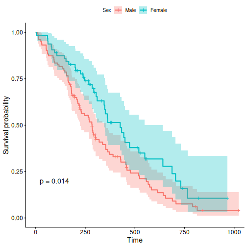
The posterior median hazard ratio for Female vs Male is approximately 0.63, suggesting that females have a lower estimated mortality hazard compared with males.
The 95% credible interval is approximately (0.43, 0.91), which is mostly below 1, indicating strong posterior support for a protective association of female sex.
The Kaplan–Meier curves show higher survival probabilities among females, consistent with the Cox model estimate.
The Cox model and Kaplan–Meier curves provide complementary views of survival differences: the Cox model quantifies the relative hazard, while Kaplan–Meier curves visualize the corresponding survival patterns over time.
Resources
- User’s guide https://mc-stan.org/docs/stan-users-guide/survival.html
- R survival package documentation: https://cran.r-project.org/package=survival
- Bürkner, P. C. (2017). brms: An R Package for Bayesian Multilevel Models Using Stan. Journal of Statistical Software, 80(1), 1–28.https://doi.org/10.18637/jss.v080.i01
Content from Stan extensions
Last updated on 2026-08-10 | Edit this page
Overview
Questions
- Which packages take advantage of Stan and how to use them?
Objectives
- Learn to use Stan with additional R packages
In this chapter, we will introduce packages that take advantage of
Stan. The covered packages are loo, which enables
approximate Bayesian cross-validation, bayesplot, which
contains plotting tools, and brms, which allows calling
Stan using common R syntax, without having to write the Stan code.
loo
The loo package allows computing approximate
leave-one-out cross-validation (loo-cv) for models fitted with Stan. The
approximation is based on something called Pareto smoothed importance
sampling (PSIS) [1]. The package can also be used for computing WAIC and
model weights for average predictive distributions.
Example 1
We will demonstrate loo package usage on the model
comparison example studied in Episode 5. We will fit the normal and
Cauchy models on the same synthetic data, then use the tools provided in
loo to compute and compare the approximate loo-cv scores
for these two models.
To be able to utilize the package functions, we need to add a
log-likelihood computation in the Stan code, in the generated quantities
block. The generated quantities block computes the pointwise
log-likelihood, stored in a variable named log_lik.
CmdStanR automatically recognizes this variable, allowing the loo
package to compute approximate leave-one-out cross-validation. Below, we
demonstrate this with the two models we are comparing.
STAN
// Normal model
data {
int<lower=0> N;
vector[N] X;
}
parameters {
real<lower=0> sigma;
real mu;
}
model {
X ~ normal(mu, sigma);
mu ~ normal(0, 1);
sigma ~ gamma(2, 1);
}
generated quantities {
vector[N] X_rep;
for(i in 1:N) {
X_rep[i] = normal_rng(mu, sigma);
}
// Calculating log-likelihood for loo
vector[N] log_lik;
for (i in 1:N) {
log_lik[i] = normal_lpdf(X[i] | mu, sigma);
}
}STAN
// Cauchy model
data {
int<lower=0> N;
vector[N] X;
}
parameters {
// Scale
real<lower=0> sigma;
// location
real mu;
}
model {
// location = mu and scale = sigma
X ~ cauchy(mu, sigma);
mu ~ normal(0, 1);
sigma ~ gamma(2, 1);
}
generated quantities {
vector[N] X_rep;
for(i in 1:N) {
X_rep[i] = cauchy_rng(mu, sigma);
}
// Calculating log-likelihood for loo
vector[N] log_lik;
for (i in 1:N) {
log_lik[i] = cauchy_lpdf(X[i] | mu, sigma);
}
}Now we can fit the models in the usual way.
R
# Fit normal model
normal_fit <- normal_model_loo$sample(
data = list(N = N, X = df5$X),
refresh = 0,
seed = 2024
)
# Fit cauchy model
cauchy_fit <- cauchy_model_loo$sample(
data = list(N = N, X = df5$X),
refresh = 0,
seed = 2024
)
We can now compute PSIS-LOO for both of the models with
loo::loo function. After the calling the function,
information about the fit can be viewed by printing the loo
objects.
R
# PSIS-LOO computation for normal model
normal_loo <- normal_fit$loo()
WARNING
Warning: Some Pareto k diagnostic values are too high. See help('pareto-k-diagnostic') for details.R
print(normal_loo)
OUTPUT
Computed from 4000 by 88 log-likelihood matrix.
Estimate SE
elpd_loo -289.1 41.8
p_loo 18.3 17.3
looic 578.3 83.7
------
MCSE of elpd_loo is NA.
MCSE and ESS estimates assume MCMC draws (r_eff in [0.8, 0.9]).
Pareto k diagnostic values:
Count Pct. Min. ESS
(-Inf, 0.7] (good) 87 98.9% 2295
(0.7, 1] (bad) 0 0.0% <NA>
(1, Inf) (very bad) 1 1.1% <NA>
See help('pareto-k-diagnostic') for details.R
# PSIS-LOO computation for cauchy model
cauchy_loo <- cauchy_fit$loo()
print(cauchy_loo)
OUTPUT
Computed from 4000 by 88 log-likelihood matrix.
Estimate SE
elpd_loo -206.9 14.7
p_loo 1.9 0.0
looic 413.7 29.4
------
MCSE of elpd_loo is 0.0.
MCSE and ESS estimates assume MCMC draws (r_eff in [0.7, 0.9]).
All Pareto k estimates are good (k < 0.7).
See help('pareto-k-diagnostic') for details.Running print returns \(\widehat{\text{elpd}}_{\text{loo}}\)
(expected log pointwise predictive density), \(\hat{p}_{loo}\) (estimated number of
parameters) and \(\text{looic}\) (LOO
information criterion) values and their standard errors. It also returns
a table with the Pareto \(k\)
diagnostic values, which are used to asses the reliability of the
estimates. Values below 1 are required for reliable PSIS estimates.
Model comparison can be done by using the
loo::loo_compare function on the loo objects.
The comparison is based on the models’ elpd values.
R
# Comparing models based on loo
loo::loo_compare(normal_loo, cauchy_loo)
OUTPUT
model elpd_diff se_diff p_worse diag_diff diag_elpd
model2 0.0 0.0 NA
model1 -82.3 36.4 0.99 N < 100 1 k_psis > 0.7OUTPUT
Diagnostic flags present.
See ?`loo-glossary` (sections `diag_diff` and `diag_elpd`)
or https://mc-stan.org/loo/reference/loo-glossary.html.The comparison shows that the elpd difference is larger than the standard error, indicating that the cauchy model is expected to have better predictive performance than the normal model. This is in line with what we saw in chapter 5: the Cauchy distribution is a superior model for the data.
Challenge
loo can also be used to compute WAIC for Bayesian
models. Calculate WAIC for the two models and then compare them.
First we need to extract the log-likelihood values from the fitted
model object using draws().
R
# Extracting loglik
normal_loglik <- normal_fit$draws("log_lik", format = "matrix")
cauchy_loglik <- cauchy_fit$draws("log_lik", format = "matrix")
# Computing WAIC for the models
normal_waic <- loo::waic(normal_loglik)
WARNING
Warning:
1 (1.1%) p_waic estimates greater than 0.4. We recommend trying loo instead.R
print(normal_waic)
OUTPUT
Computed from 4000 by 88 log-likelihood matrix.
Estimate SE
elpd_waic -292.3 45.0
p_waic 21.4 20.5
waic 584.6 89.9
1 (1.1%) p_waic estimates greater than 0.4. We recommend trying loo instead. R
cauchy_waic <- loo::waic(cauchy_loglik)
print(cauchy_waic)
OUTPUT
Computed from 4000 by 88 log-likelihood matrix.
Estimate SE
elpd_waic -206.9 14.7
p_waic 1.9 0.0
waic 413.7 29.4Computing WAIC for the model return values for \(\widehat{\text{eldp}}_{\text{WAIC}}\), \(\hat{p}_{\text{WAIC}}\) and \(\widehat{\text{WAIC}}\). Models can be compared based on WAIC using the same function as with PSIS-LOO.
R
# Comparing models based on WAIC
loo::loo_compare(normal_waic, cauchy_waic)
OUTPUT
model elpd_diff se_diff p_worse diag_diff diag_elpd
model2 0.0 0.0 NA
model1 -85.4 39.5 0.98 N < 100 OUTPUT
Diagnostic flags present.
See ?`loo-glossary` (sections `diag_diff` and `diag_elpd`)
or https://mc-stan.org/loo/reference/loo-glossary.html.
bayesplot
Next, we will look at the the bayesplot R package. The
package provides a library of plotting functions for fitted Stan models.
The created plots are ggplot objects, meaning that the
plots can be customized with the functions from ggplot2
package. The package enables plotting posterior draws, visual MCMC
diagnostics and graphical posterior and prior predictive checking. The
functions of the package also work with model fit with the popular
packages brms and rstanarm.
Example 1 continued
We will demonstrate using bayesplot with the Cauchy
model used in the first example. First, we need to extract the posterior
draws. Then, we will plot uncertainty intervals for \(\mu\) and \(\sigma\).
R
# Extracting draws
cauchy_draws <- cauchy_fit$draws()
# Plotting uncertainty intervals
bayesplot::mcmc_intervals(cauchy_draws, pars = c("mu", "sigma"))
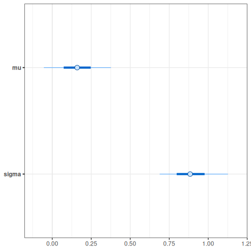
Alternatively, we can plot the (marginal) posterior sample histograms or densities with credible intervals as shaded areas as follows:
R
# Plotting estimated density curves
bayesplot::mcmc_areas(cauchy_draws, pars = c("mu", "sigma"),
prob = 0.95,
point_est = "mean")
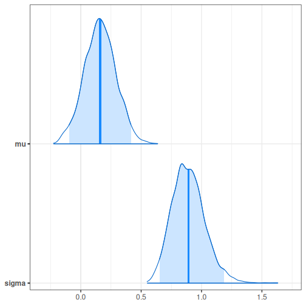
R
# Plotting histogram
bayesplot::mcmc_hist(cauchy_draws, pars = c("mu", "sigma"))
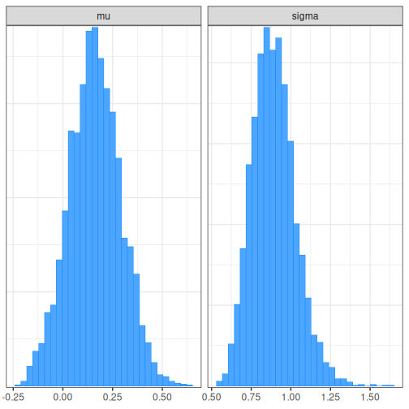
bayesplot also provides functions for assessing MCMC
convergence and visualizing fit diagnostics. For example, we can
generate trace plots for the chains:
R
# Plotting trace plot
bayesplot::mcmc_trace(cauchy_draws, pars = c("mu", "sigma"),
facet_args = list(ncol = 1))
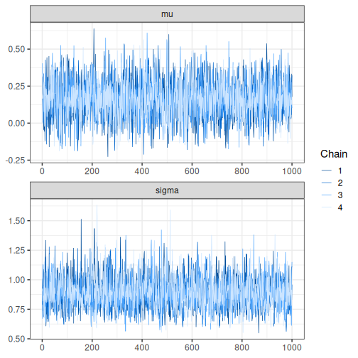
Challenge
Perform a graphical posterior predictive checks with
bayesplot. Using the Cauchy model fit generated above, plot
the density of \(X_{rep}\) samples
overlaid with the density of \(X\).
Alternatively, you can plot the corresponding histograms.
R
# Extracting replicates and getting a subset
set.seed(2024)
X_rep <- cauchy_fit$draws("X_rep", format = "matrix")
N_rep <- 9
selected_samples <- sample(1:nrow(X_rep), size = N_rep, replace = FALSE)
X_rep_sub <- X_rep[selected_samples, ]
R
# Plot density
# Limit x range for better illustration
bayesplot::ppc_dens_overlay(y = df5$X, yrep = X_rep_sub) + xlim(-25, 50)
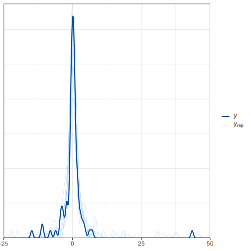
R
# Plot histograms
bayesplot::ppc_hist(y = df5$X, yrep = X_rep_sub) + xlim(-25,50)
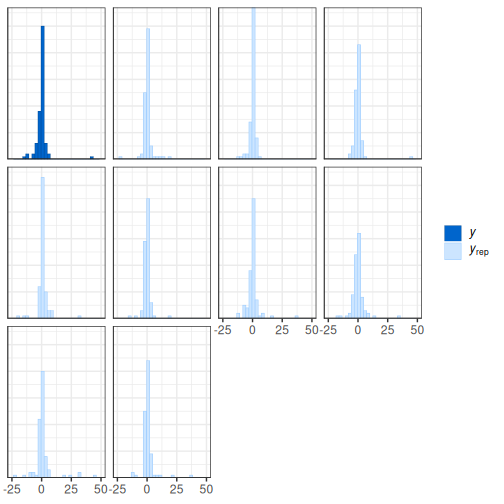
brms R package
We will now introduce the brms R package. The package
allows fitting probabilistic generalized (non-)linear models with Stan.
A large range of distributions and link functions are supported, in
addition to multilevel structure. Moreover, several built-in functions
are available for priors.
Models are specified using familiar R formula syntax. Throughout this
lesson, brms uses CmdStanR as the backend to
compile and fit the corresponding Stan models.
The package also provides tools for evaluating the fit and MCMC
convergence. These tools, in turn, use functions from the
loo and bayesplot packages, that is, many of
the same tools we covered earlier in this Episode.
Next, we will demonstrate usage of the package with two different examples.
Example 2: Survival modeling
In this example, we will demonstrate fitting a Cox proportional
hazard model with brms. However, first, we will briefly
describe and model and idea in survival modeling.
The Cox model is a standard approach used in survival modeling, in which the outcome of interest is the time to some event. A common application is medical studies where patients are followed in time until an event (e.g. death) or until censoring. A subject is censored if the event doesn’t occur during the follow-up.
An important ingredient in survival modeling is the hazard function, representing the instantaneous risk for an event at time \(t\), defined as \(\lambda(t)=\text{lim}_{h \to 0+} \frac{1}{h}P(t \le T<t+h|T\ge t)\). In the Cox model, the hazard function is of the form \(\lambda(t_i,Z_i,\theta)=\lambda_0(t_i)\text{exp}(\beta^\prime Z_i)\).
The baseline hazard function \(\lambda_0(t_i)\) represents the hazard when the covariates are set to their baselines, and is the same for each subject \(i\). Commonly, the functional form the baseline hazard is not specified. The second part of the hazard function contains subject-specific covariates, \(\text{exp}(\beta^\prime Z_i)\).
The exponentials of the effects \(\beta\) are called hazard ratios, which measure the hazard in one group against the hazard in another group.
When fitting the Cox model, brms uses M-splines for the
baseline hazard. Splines are functions built from piecewise-defined
polynomials. In other words, the baseline hazard is a combination of
several different polynomial functions. M-splines are non-negative
spline functions, which is important for reasons we omit. However,
hopefully, the reader can appreciate the simplicity of the upcoming
brms function call.
Before fitting the model, we will take a look at the
lung dataset from the survival R package,
which we will be analyzing below. The dataset consists of survival times
of patients with advanced lung cancer including some clinical
covariates.
R
# Get data
lung <- survival::lung
# Take a peek
head(lung)
OUTPUT
inst time status age sex ph.ecog ph.karno pat.karno meal.cal wt.loss
1 3 306 2 74 1 1 90 100 1175 NA
2 3 455 2 68 1 0 90 90 1225 15
3 3 1010 1 56 1 0 90 90 NA 15
4 5 210 2 57 1 1 90 60 1150 11
5 1 883 2 60 1 0 100 90 NA 0
6 12 1022 1 74 1 1 50 80 513 0The variable status denotes if an event (death) was
observed or if the subject was censored. We will use three covariates:
age, sex and ph.karno. The
variable ph.karno describes how well a patient can perform
daily activities rated by a physician. We will split the variable into
two categories “high” and “low.”
Cox model can be fit with brms::brm() function by
specifying family = brmsfamily("cox"). Censored data points
are indicated with the cens(1 - status) argument. We will
use a standard \(\text{Normal}(0, 10)\)
prior for the population-level effects, with the argument
prior(normal(0,10), class = b). The option
class = b sets the prior for all population-level
effects.
R
# Let's change status coding from 2/1 to 1/0
lung$status <- lung$status - 1
# Remove observations with NA ph.karno
lung <- lung[!is.na(lung$ph.karno),]
# Creating new variable for ph.karno status
lung$ph.karno_status <- cut(lung$ph.karno,
breaks = c(0, 70, 100),
labels = c("low", "high"))
# Fitting the model
fit_cox <- brms::brm(
time | cens(1 - status) ~ sex + age + ph.karno_status,
data = lung,
family = brmsfamily("cox"),
backend = "cmdstanr",
seed = 2024,
silent = 2,
refresh = 0,
cores = 4,
prior = prior(normal(0, 10), class = b)
)
OUTPUT
Loading required namespace: rstanR
# Summary of the fit
summary(fit_cox)
OUTPUT
Family: cox
Links: mu = log
Formula: time | cens(1 - status) ~ sex + age + ph.karno_status
Data: lung (Number of observations: 227)
Draws: 4 chains, each with iter = 2000; warmup = 1000; thin = 1;
total post-warmup draws = 4000
Regression Coefficients:
Estimate Est.Error l-95% CI u-95% CI Rhat Bulk_ESS Tail_ESS
Intercept 1.27 0.68 -0.06 2.57 1.00 3410 2831
sex -0.51 0.17 -0.83 -0.19 1.00 3155 2579
age 0.01 0.01 -0.01 0.03 1.00 3691 2925
ph.karno_statushigh -0.36 0.18 -0.70 0.00 1.00 2931 2453
Draws were sampled using sample(hmc). For each parameter, Bulk_ESS
and Tail_ESS are effective sample size measures, and Rhat is the potential
scale reduction factor on split chains (at convergence, Rhat = 1).The summary output of the brms fit prints coefficient
estimates, and also returns Rhat, Bulk_ESS and Tail_ESS values, which
can be used to assess the convergence of the model.
It is important to notice that the coefficients are the log hazard
ratios, which means we still need to exponentiate them. The
bayesplot::mcmc_intervals() function allows transforming
the parameters before plotting with transform = "exp"
argument.
R
# Get hazard values
sum_cox <- summary(fit_cox)
exp(sum_cox$fixed[,1:4])
OUTPUT
Estimate Est.Error l-95% CI u-95% CI
Intercept 3.5449935 1.966953 0.9441448 13.0026137
sex 0.6028369 1.182707 0.4348941 0.8310266
age 1.0131731 1.009298 0.9947433 1.0315701
ph.karno_statushigh 0.6960354 1.194420 0.4949508 1.0021477R
# Credible intervals
bayesplot::mcmc_intervals(fit_cox,
pars = c("b_sex", "b_age", "b_ph.karno_statushigh"),
transform = "exp")
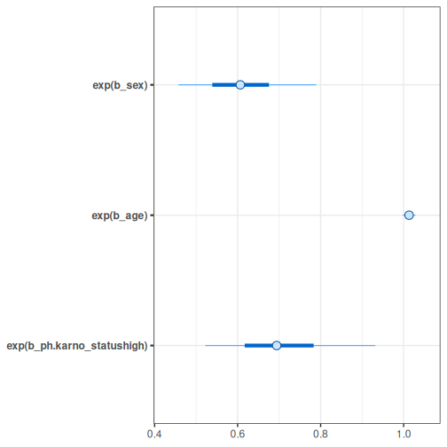
Based on the estimates, it seems that age has only a minor effect on
the hazard. Female sex and being “high” in ph.karno imply
smaller hazards, meaning that these factors are protective.
After fitting the model, we can print information about the priors
used with the function brms::get_prior.
R
# Get priors for the cox model
brms::get_prior(fit_cox)
OUTPUT
prior class coef group resp dpar nlpar lb
(flat) b
(flat) b age
(flat) b ph.karno_statushigh
(flat) b sex
student_t(3, 5.6, 2.5) Intercept
dirichlet(1) sbhaz
ub tag source
default
(vectorized)
(vectorized)
(vectorized)
default
defaultThe population-level effects have the normal prior we specified. In
brms, the default prior for the intercept is Student’s
t-distribution with three degrees of freedom. The Stan program generated
by brms can be inspected using
brms::stancode(). When backend = "cmdstanr" is
used, this Stan program is compiled and sampled with CmdStan.
R
# Print the Stan code
brms::stancode(fit_cox)
OUTPUT
// generated with brms 2.23.0
functions {
/* distribution functions of the Cox proportional hazards model
* parameterize hazard(t) = baseline(t) * mu
* so that higher values of 'mu' imply lower survival times
* Args:
* y: the response value; currently ignored as the relevant
* information is passed via 'bhaz' and 'cbhaz'
* mu: positive location parameter
* bhaz: baseline hazard
* cbhaz: cumulative baseline hazard
*/
real cox_lhaz(real y, real mu, real bhaz, real cbhaz) {
return log(bhaz) + log(mu);
}
vector cox_lhaz(vector y, vector mu, vector bhaz, vector cbhaz) {
return log(bhaz) + log(mu);
}
// equivalent to the log survival function
real cox_lccdf(real y, real mu, real bhaz, real cbhaz) {
return - cbhaz * mu;
}
real cox_lccdf(vector y, vector mu, vector bhaz, vector cbhaz) {
return - dot_product(cbhaz, mu);
}
real cox_lcdf(real y, real mu, real bhaz, real cbhaz) {
return log1m_exp(cox_lccdf(y | mu, bhaz, cbhaz));
}
real cox_lcdf(vector y, vector mu, vector bhaz, vector cbhaz) {
return sum(log1m_exp(- cbhaz .* mu));
}
real cox_lpdf(real y, real mu, real bhaz, real cbhaz) {
return cox_lhaz(y, mu, bhaz, cbhaz) + cox_lccdf(y | mu, bhaz, cbhaz);
}
real cox_lpdf(vector y, vector mu, vector bhaz, vector cbhaz) {
return sum(cox_lhaz(y, mu, bhaz, cbhaz)) + cox_lccdf(y | mu, bhaz, cbhaz);
}
// Distribution functions of the Cox model in log parameterization
real cox_log_lhaz(real y, real log_mu, real bhaz, real cbhaz) {
return log(bhaz) + log_mu;
}
vector cox_log_lhaz(vector y, vector log_mu, vector bhaz, vector cbhaz) {
return log(bhaz) + log_mu;
}
real cox_log_lccdf(real y, real log_mu, real bhaz, real cbhaz) {
return - cbhaz * exp(log_mu);
}
real cox_log_lccdf(vector y, vector log_mu, vector bhaz, vector cbhaz) {
return - dot_product(cbhaz, exp(log_mu));
}
real cox_log_lcdf(real y, real log_mu, real bhaz, real cbhaz) {
return log1m_exp(cox_log_lccdf(y | log_mu, bhaz, cbhaz));
}
real cox_log_lcdf(vector y, vector log_mu, vector bhaz, vector cbhaz) {
return sum(log1m_exp(- cbhaz .* exp(log_mu)));
}
real cox_log_lpdf(real y, real log_mu, real bhaz, real cbhaz) {
return cox_log_lhaz(y, log_mu, bhaz, cbhaz) +
cox_log_lccdf(y | log_mu, bhaz, cbhaz);
}
real cox_log_lpdf(vector y, vector log_mu, vector bhaz, vector cbhaz) {
return sum(cox_log_lhaz(y, log_mu, bhaz, cbhaz)) +
cox_log_lccdf(y | log_mu, bhaz, cbhaz);
}
}
data {
int<lower=1> N; // total number of observations
vector[N] Y; // response variable
// censoring indicator: 0 = event, 1 = right, -1 = left, 2 = interval censored
array[N] int<lower=-1,upper=2> cens;
int<lower=1> K; // number of population-level effects
matrix[N, K] X; // population-level design matrix
int<lower=1> Kc; // number of population-level effects after centering
// data for flexible baseline functions
int Kbhaz; // number of basis functions
// design matrix of the baseline function
matrix[N, Kbhaz] Zbhaz;
// design matrix of the cumulative baseline function
matrix[N, Kbhaz] Zcbhaz;
// a-priori concentration vector of baseline coefficients
vector<lower=0>[Kbhaz] con_sbhaz;
int prior_only; // should the likelihood be ignored?
}
transformed data {
// indices of censored data
int Nevent = 0;
int Nrcens = 0;
int Nlcens = 0;
array[N] int Jevent;
array[N] int Jrcens;
array[N] int Jlcens;
matrix[N, Kc] Xc; // centered version of X without an intercept
vector[Kc] means_X; // column means of X before centering
// collect indices of censored data
for (n in 1:N) {
if (cens[n] == 0) {
Nevent += 1;
Jevent[Nevent] = n;
} else if (cens[n] == 1) {
Nrcens += 1;
Jrcens[Nrcens] = n;
} else if (cens[n] == -1) {
Nlcens += 1;
Jlcens[Nlcens] = n;
}
}
for (i in 2:K) {
means_X[i - 1] = mean(X[, i]);
Xc[, i - 1] = X[, i] - means_X[i - 1];
}
}
parameters {
vector[Kc] b; // regression coefficients
real Intercept; // temporary intercept for centered predictors
// baseline hazard coefficients
simplex[Kbhaz] sbhaz;
}
transformed parameters {
// prior contributions to the log posterior
real lprior = 0;
lprior += normal_lpdf(b | 0, 10);
lprior += student_t_lpdf(Intercept | 3, 5.6, 2.5);
lprior += dirichlet_lpdf(sbhaz | con_sbhaz);
}
model {
// likelihood including constants
if (!prior_only) {
// compute values of baseline function
vector[N] bhaz = Zbhaz * sbhaz;
// compute values of cumulative baseline function
vector[N] cbhaz = Zcbhaz * sbhaz;
// initialize linear predictor term
vector[N] mu = rep_vector(0.0, N);
mu += Intercept + Xc * b;
// vectorized log-likelihood contributions of censored data
target += cox_log_lpdf(Y[Jevent[1:Nevent]] | mu[Jevent[1:Nevent]], bhaz[Jevent[1:Nevent]], cbhaz[Jevent[1:Nevent]]);
target += cox_log_lccdf(Y[Jrcens[1:Nrcens]] | mu[Jrcens[1:Nrcens]], bhaz[Jrcens[1:Nrcens]], cbhaz[Jrcens[1:Nrcens]]);
target += cox_log_lcdf(Y[Jlcens[1:Nlcens]] | mu[Jlcens[1:Nlcens]], bhaz[Jlcens[1:Nlcens]], cbhaz[Jlcens[1:Nlcens]]);
}
// priors including constants
target += lprior;
}
generated quantities {
// actual population-level intercept
real b_Intercept = Intercept - dot_product(means_X, b);
}Example 3: Hierarchical binomial model
We will now demonstrate one of the key focuses of brms,
fitting hierarchical models. The syntax for specifying hierarchical
models is similar as in the lme4 package, which is used to
fit frequentist multilevel models in R.
For this example, we will be using is the VerbAgg data
from lme4 package. The data consist of item responses to a
questionnaire on verbal aggression.
R
# Get data
VerbAgg <- lme4::VerbAgg
head(VerbAgg)
OUTPUT
Anger Gender item resp id btype situ mode r2
1 20 M S1WantCurse no 1 curse other want N
2 11 M S1WantCurse no 2 curse other want N
3 17 F S1WantCurse perhaps 3 curse other want Y
4 21 F S1WantCurse perhaps 4 curse other want Y
5 17 F S1WantCurse perhaps 5 curse other want Y
6 21 F S1WantCurse yes 6 curse other want YWe will estimate population-level effects for Anger, Gender, btype
and situ, and include a group-level intercept for id. The variable of
interest is the binary r2, which contains the response to an question in
the questionnaire. We will use \(\text{Normal}(0, 10)\) as the prior for all
the population-level effects. For the standard deviation of group-level
effect we will set a (half-)\(\text{Cauchy}(0,
5)\) prior. By default, brms uses half-Student’s
t-distribution with three degrees of freedom for standard deviation
parameters. The group-level intercept for variable id is specified with
the argument (1|id). Let’s now fit the model.
R
# Change coding for r2
VerbAgg <- VerbAgg %>%
mutate(r2 = ifelse(r2 == "N", 0, 1))
# Fit model
fit_hier <- brms::brm(
r2 ~ Anger + Gender + btype + situ + (1 | id),
family = bernoulli,
data = VerbAgg,
backend = "cmdstanr",
seed = 2024,
cores = 4,
silent = 2,
refresh = 0,
prior = prior(normal(0, 10), class = b) +
prior(cauchy(0, 5), class = sd)
)
# Summary
summary(fit_hier)
OUTPUT
Family: bernoulli
Links: mu = logit
Formula: r2 ~ Anger + Gender + btype + situ + (1 | id)
Data: VerbAgg (Number of observations: 7584)
Draws: 4 chains, each with iter = 2000; warmup = 1000; thin = 1;
total post-warmup draws = 4000
Multilevel Hyperparameters:
~id (Number of levels: 316)
Estimate Est.Error l-95% CI u-95% CI Rhat Bulk_ESS Tail_ESS
sd(Intercept) 1.30 0.07 1.17 1.44 1.00 987 1615
Regression Coefficients:
Estimate Est.Error l-95% CI u-95% CI Rhat Bulk_ESS Tail_ESS
Intercept 0.20 0.33 -0.45 0.85 1.00 819 1517
Anger 0.06 0.02 0.02 0.09 1.00 797 1485
GenderM 0.31 0.18 -0.05 0.69 1.00 670 1357
btypescold -1.03 0.07 -1.17 -0.90 1.00 5190 3467
btypeshout -2.00 0.07 -2.14 -1.85 1.00 4539 3071
situself -1.01 0.06 -1.12 -0.89 1.00 6186 2961
Draws were sampled using sample(hmc). For each parameter, Bulk_ESS
and Tail_ESS are effective sample size measures, and Rhat is the potential
scale reduction factor on split chains (at convergence, Rhat = 1).The conditional effects of the predictors can easily be plotted with
the function brms::conditional_effects.
R
# Conditional effects
plots <- suppressMessages(
plot(brms::conditional_effects(fit_hier), plot = FALSE))
suppressMessages(
cowplot::plot_grid(plots[[1]], plots[[2]], plots[[3]], plots[[4]]))
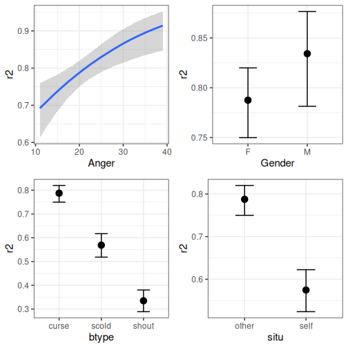
The function can also plot variable interactions. Let’s plot the conditional effect for interaction between Anger and btype.
R
# Plot conditional effect for interaction of Anger and btype
plot(conditional_effects(fit_hier, effects = "Anger:btype"))
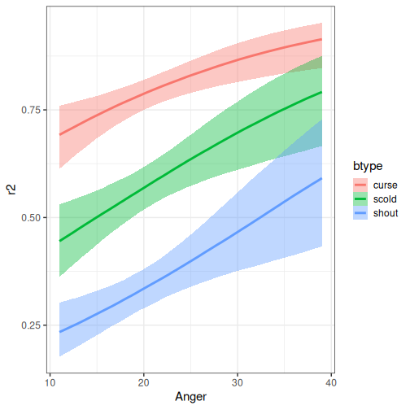
Let us now do a slight alteration in model and add another
group-level intercept for the item variable. The priors are same as in
the first model. The update function can be used to modify
the formula without writing it anew in its entirety.
R
# Update model
fit_hier2 <- update(fit_hier, formula. = ~ . + (1|item), newdata = VerbAgg, seed = 2024,
cores = 4, silent = 2, refresh = 0, backend = "cmdstanr")
# Summary
summary(fit_hier2)
OUTPUT
Family: bernoulli
Links: mu = logit
Formula: r2 ~ Anger + Gender + btype + situ + (1 | id) + (1 | item)
Data: VerbAgg (Number of observations: 7584)
Draws: 4 chains, each with iter = 2000; warmup = 1000; thin = 1;
total post-warmup draws = 4000
Multilevel Hyperparameters:
~id (Number of levels: 316)
Estimate Est.Error l-95% CI u-95% CI Rhat Bulk_ESS Tail_ESS
sd(Intercept) 1.37 0.07 1.24 1.51 1.00 1307 1834
~item (Number of levels: 24)
Estimate Est.Error l-95% CI u-95% CI Rhat Bulk_ESS Tail_ESS
sd(Intercept) 0.59 0.11 0.42 0.83 1.00 1327 2222
Regression Coefficients:
Estimate Est.Error l-95% CI u-95% CI Rhat Bulk_ESS Tail_ESS
Intercept 0.20 0.44 -0.68 1.04 1.01 964 1363
Anger 0.06 0.02 0.02 0.09 1.01 935 1398
GenderM 0.32 0.20 -0.06 0.72 1.00 858 1487
btypescold -1.06 0.30 -1.65 -0.45 1.00 1235 1617
btypeshout -2.11 0.31 -2.72 -1.50 1.00 1206 1931
situself -1.06 0.25 -1.56 -0.59 1.00 1313 1998
Draws were sampled using sample(hmc). For each parameter, Bulk_ESS
and Tail_ESS are effective sample size measures, and Rhat is the potential
scale reduction factor on split chains (at convergence, Rhat = 1).Another useful aspect of update is that it allows
resampling from the model without having to recompile the model, for
example, using different number of iterations. However, changes to the
model itself require recompilation.
To end this section, let’s compare the two models by using
brms::loo(). This works in the same way as the
loo::loo_compare.
R
# Compare models
brms::loo(fit_hier, fit_hier2)
OUTPUT
Output of model 'fit_hier':
Computed from 4000 by 7584 log-likelihood matrix.
Estimate SE
elpd_loo -4004.5 42.9
p_loo 267.8 3.7
looic 8008.9 85.8
------
MCSE of elpd_loo is 0.2.
MCSE and ESS estimates assume MCMC draws (r_eff in [1.1, 2.3]).
All Pareto k estimates are good (k < 0.7).
See help('pareto-k-diagnostic') for details.
Output of model 'fit_hier2':
Computed from 4000 by 7584 log-likelihood matrix.
Estimate SE
elpd_loo -3866.3 43.9
p_loo 286.7 4.1
looic 7732.6 87.8
------
MCSE of elpd_loo is 0.2.
MCSE and ESS estimates assume MCMC draws (r_eff in [1.2, 2.9]).
All Pareto k estimates are good (k < 0.7).
See help('pareto-k-diagnostic') for details.
Model comparisons:
model elpd_diff se_diff p_worse diag_diff diag_elpd
fit_hier2 0.0 0.0 NA
fit_hier -138.2 16.2 1.00 Based on the output, the second model provides a superior fit compared to the first model.
Challenge
Experiment with different priors for the model. How much does the chosen prior affect the results? Is there a big difference between a flat and the weakly informative prior used above?
Other packages built on Stan
In addition to the packages covered here, there are several other packages that take advantage of Stan. Here we will briefly introduce some of them.
rstanarm provides an
interface for fitting common Bayesian regression models using Stan. It
allows users to specify models using familiar R modeling syntax. Unlike
brms, which generates Stan code based on the user-defined
model formula, rstanarm uses a collection of pre-compiled
Stan models.
shinystan uses Shiny to provide interactive, customizable visual and numerical summaries of model parameters and convergence diagnostics.
projpred performs
projection predictive variable selection for Bayesian models. It can be
used with models fitted using packages such as brms and
rstanarm.
posterior provides tools for manipulating posterior draws and performing common operations such as subsetting, combining, summarizing, and diagnosing posterior distributions.
- There are several R packages that provide more user-friendly ways of using Stan.
-
brmspackage can be used to fit a vast array of different Bayesian models. -
bayesplotpackage is a library for various plotting tools. - Approximate leave-one-out cross-validation can be performed with the
loopackage.
Reading
References
- [1] A. Vehtari et al., Pareto Smoothed Importance Sampling, Journal of Machine Learning Research 25 (2024) 1-58.
Content from Exercises
Last updated on 2026-08-19 | Edit this page
Overview
Questions
- How can I get routine in probabilistic programming?
Objectives
The purpose of this Episode is to provide material for practicing probabilistic programming. The exercises are listed under the Episode they approximately refer to.
1. Basics
1.1 Grid approximation: normal model with unknown mean
Generate 1000 data points from the normal model. Use a randomly generated mean parameter, \(\mu \sim N(0,1)\) and set the standard deviation \(\sigma=1\).
The grid approximation for this model was introduced in Episode 1 but the implementation doesn’t always work for the generated data (repeat the data simulation and fitting a few times to verify this). Locate the source of error and make the necessary modifications to get the program working.
Plot the posterior of \(\mu\).
1.2 Grid approximation: Gamma-Poisson
The Gamma-Poisson model can be stated as:
\[y_i \sim \text{Pois}(\lambda) \\ \lambda \sim \Gamma(1, 1), \]
where \(y_i\) are non-negative data points, and Pois is the Poisson distribution with rate parameter \(\lambda > 0\).
Implement a grid approximation for this model.
Apparently, the number of chewing gum on a sidewalk tile is approximately Poisson distributed.
Estimate the average number of gum on a Reykjavik side walk tile (lambda), using the data
R
y <- c(2,7,4,3,5,2,7,5,5,5)
1.3 Less data means bigger prior effect
Show that as the amount of available data increases, the effect of the prior decreases.
Instructions:
- Simulate a series of coin tosses:
- Generate \(p \sim \text{Uniform}(0, 1)\).
- Simulate a sequence of 50 tosses with Pr(heads) = p.
- Fit the grid approximation using the first 1, 5, 10, 15,…, 50
tosses.
- Use a Beta prior for p.
- Compare the posteriors to the prior.
1.4 Grid approximation: for a normal model with unknown mean and standard deviation
The following data is a collection of daily milk yield (in liters) for dairy cows.
R
X <- c(30.3, 35.0, 29.7, 20.1, 23.9, 38.6, 36.9, 34.7, 25.8, 29.9)
Using the grid approximation for the normal model, estimate the average daily yield \(\mu\).
Use some non-uniform priors.
Plot the marginal posterior for \(\mu\) and compute the 90% credible interval for the marginal.
What is the probability that the average daily milk yield is more than 30 liters?
1.5 Sampling the Gamma
Let’s model the following observations X with the exponential likelihood, \(\text{Exp}(\lambda)\):
R
X <- c(0.166, 1.08, 1.875, 0.413, 1.369, 0.463, 0.735,
0.24, 0.774, 1.09, 0.463, 0.916, 0.225,
0.889, 0.051, 0.688, 0.119, 0.078, 1.624, 0.553, 0.523,
0.644, 0.284, 1.744, 1.468)
If we use a \(\Gamma(2, 1)\) prior, the posterior distribution can be shown to be
\(p(\lambda | X) = \Gamma(2 + n, 1 + X_1 + X_2 + ... + X_n),\)
where \(n\) is the number of observations.
Generate 5000 samples from the posterior and compute 1. the posterior mean and mode 2. the 50% and 95% credible intervals 3. the probabilities \(Pr(\lambda > 1), Pr( 1 < \lambda < 1.5), Pr(\lambda < 1 \text{ or } \lambda > 1.5)\)
1.6 Grid approximation: Cauchy distribution
(Emulated from BDA3: p59. Ex.11)
Let y1,…,y5 be independent samples from a Cauchy distribution with scale 1 and unknown location \(\theta\). Given the observations \((y_1, . . . , y_5) = (43, 44, 45, 46.5, 47.5)\):
- Compute the unnormalized posterior density function, \(p(\theta)p(y|\theta)\), on a grid of points \(\theta = 0, 1/m , 2/m ,..., 100\), for some large integer \(m\). Using the grid approximation, compute and plot the normalized posterior density function as a function of \(\theta\). Assume a uniform prior for over [0, 100].
- Generate 1000 samples of \(\theta\) from the posterior and plot a histogram of the samples.
- Use each of the samples generated in b) to generate a new data point \(y_6\) from the likelihood function and plot a histogram of these draws. From which distribution are these samples from?
1.7 Sampling the Normal
The posterior for the normal model with unknown \(\mu\) and \(\sigma\) can be sampled as follows (BDA3:p.65):
- Sample the variance from \(\sigma^2 \sim Inv-\chi^2(n-1, \text{Var}(X))\)
- Sample the mean from \(\mu | \sigma^2 ~ N(\bar{X}, \frac{\sigma^2}{n})\)
Here \(\bar{X}\) is the mean of the data points \(X = \{X_1, X_2, ..., X_n\}\).
- Generate 5000 samples from the posterior using the data
R
X <- c(21.1, 20.8, 21.9, 20.5, 18.7, 24.1, 18.6, 15.4, 16.9, 20.8)
- Compute the posterior for the coefficient of variation \(CV = \frac{\sigma}{\mu}\).
- Generate samples for an unseen data point \(\tilde{X}\).
- Compare the distribution in c) to one generated using only the MAP estimate. Is there a discrepancy and why?
1.8 HPDI
Another approach to summarizing the posterior is to compute the shortest interval that contains \(p\%\) of the posterior. Such interval is called highest posterior density interval (HPDI).
Write a function that returns the highest posterior density interval, given a set of posterior samples.
Assume that the analytical form of a posterior is known to be Gamma(3, 20). Generate samples from this distribution and compute the 90% HPDI. Compare it to the 90% credible interval.
Hint: If you sort the posterior samples in order, each set of n consecutive samples contains \(100 \cdot \frac{n}{N} \%\) of the posterior, where \(N\) is the total number of samples.
2. Stan
2.1 Gamma-Poisson model
The Gamma-Poisson model can be stated as:
\[y_i \sim \text{Pois}(\lambda) \\ \lambda \sim \Gamma(1, 1), \]
where \(y_i\) are non-negative data points, and Pois is the Poisson distribution with rate parameter \(\lambda > 0\).
Implement the model in Stan. Do it so that the parameter beta is input as part of data. Heuristically, what effect does altering beta have on the prior shape?
Fit the model using the data
R
y <- c(2,7,4,3,5,2,7,5,5,5)
Compute the MAP, mean and 90% CIs and include them in a figure with a histogram of posterior samples.
2.2 Dice
Write a Stan program that implements the following statistical model:
\[y \sim \text{categorial}(\theta) \\ \theta \sim \text{Dir}(1, 1, ..., 1), \]
where \(\theta\) is a 6-dimensional probability vector and Dir is the Dirichlet distribution.
Use the program to assess the fairness of a 6 sided dice. In other words, estimate the probabilities of each side on a roll using the following data.
R
X <- c(3, 2, 6, 3, 6, 2, 5, 6, 5, 6, 4, 1, 4, 2, 5, 4, 6, 6, 5, 4, 1, 3, 3, 4, 2, 3, 4, 4, 4, 1, 1, 3, 4, 4, 1, 6, 4, 6, 5, 5, 2, 6, 1, 1, 4, 4, 1, 6, 6, 1, 6, 4, 5, 5, 3, 4, 2, 6, 6, 5, 2, 6, 1, 1, 4, 4, 4, 6, 3, 5, 3, 6, 5, 3, 3, 2, 3, 3, 5, 3, 3, 4, 6, 4, 3, 6, 6, 4, 4, 6, 5, 1, 3, 5, 1, 2, 4, 4, 1)
Plot the marginal posteriors for each \(\theta_i\).
Is the dice fair? Quantify this somehow.
2.3 Normal model
Implement the Normal model in Stan.
In the generated quantities block: - Generate a posterior predictive distribution - Generate posterior for \(CV = \frac{\mu}{\sigma}.\)
Fit the model using the data
R
X <- c(3.7, 2.8, 4.03, 2.11, 2.58, 0.96, 1.74, 0.34, 0.75, 2.07)
Plot the posterior samples and color the points according to the condition \(CV < 1\).
2.4. Time series modeling
The AR(1) process is defined by the recursion: \[x_i \sim N(\phi \cdot x_{i-1}, \sigma^2),\] where \(i\) is a time index. In other words, given some initial value \(x_1\), the next value \(x_2\) is generated from a normal distribution with mean \(\phi\cdot x_1\) and variance \(\sigma^2\). This pattern continues for the successive values.
Write a Stan program that estimates the parameters \(\phi\) and \(\sigma\) of the AR(1) process.
Using the data in data/time_series.txt, do the
following:
- Estimate the parameters \(\phi\) and \(\sigma\).
- Starting from \(x_{new} = 5\) predict the process 50 values into the future and plot the predictions.
3. MCMC
3.1 Binomial model
Implement the Metropolis-Hastings algorithm for the beta-binomial model.
Assume there are 50 people of whom 7 are left-handed. Estimate the probability of being left-handed in the wider population.
Use \(p(\theta^* | \theta_{now}) = \text{Beta}(\theta^* | 2, 2)\) as your proposal distribution, where \(\theta^*\) is the proposal and \(\theta_{now}\) the current sample.
Compute the proportion of accepted proposals for the sampler.
3.2. Gibbs sampler
Consider the distribution \[ p(x, y) = C \cdot \exp^{-(x^2y^2 + x^2 + y^2 -8x -8y)/2},\] where \(C\) is a normalizing constant. It is known that the conditional distribution of x given y is the normal distribution \(p(x|y) = N(\mu, \sigma^2)\), where the mean \(\mu = 4/(1 + y^2)\) and the standard deviation \(\sigma = \sqrt{1/(1 + y^2)}\). Due to symmetry, \(p(y|x)\) can be recovered simply by changing \(y\)’s to \(x\)’s in \(p(x|y)\).
The Gibbs sampler is a special case of the Metropolis-Hastings algorithm. It can be stated as follows:
- Choose some initial values for the parameters, \(x_0\) and \(y_0\) in our case.
- For \(i = 1, ..., N\) do:
- Draw \(x_i\) from \(p(x_i|y_{i-1})\)
- Draw \(y_i\) from \(p(y_i|x_i)\)
(In this notation \(x_i\) refers to the \(x\) sample at step \(i\), \(y_{i-1}\) to the y sample at step \(i-1\) and so on)
Build a Gibbs sampler that draws samples from \(p(x, y)\). Visualize the resulting distribution.
3.3. Gamma with discrete rate
The data
R
X <- c(10.61, 4.76, 11.25, 5.55, 23.81, 7.45, 17.31, 15.08, 8.19, 15, 4.29, 10.95, 15.45, 10.09, 7.96, 12.35, 11.43, 7.33, 8.17, 21)
is modelled with a \(\Gamma(\alpha, \beta)\) distribution, where the shape \(\alpha = 5\), but the rate \(\beta\) is unknown. However, it is known that beta can only take values \(1.1^N\), where \(N\) is an integer.
Implement a Metropolis-Hastings sampler for this model.
Use a proposal distribution that gives equal probability for moving one step up \((N^* = N+1)\) or down \((N^* = N-1)\), and some positive probability for staying still \((N^*=N)\).
Generate the initial value randomly: \(N_0 \sim \text{Uniform}(-100, 100)\) and compute an estimate for \(\beta\).
4. Hierarchical models
4.1. Model analysis
Examine the following statistical models. Determine if they exhibit a hierarchical structure. If not, introduce modifications to make them hierarchical.
Below, the subscript \(i\) denotes a data point, while \(g\) designates a population subgroup.
\[ y_{g, i} \sim N(a_g + b \cdot x_{g,i}, \sigma^2) \\ a_g \sim N(0, 1) \\ b \sim N(0, 1) \\ \sigma \sim \text{Exponential}(1) \\ \]
\[ y_{g,i} \sim \text{Binom}(N, p_{g,i}) \\ \text{logit}(p_{g,i}) = a_g + b \cdot x_i \\ a_{g} \sim N(\alpha, 1) \\ \alpha \sim N(0, 10) \\ b \sim N(0, 1) \]
\[ X_i \sim \Gamma(\alpha, \beta) \\ \alpha \sim \Gamma(1, 1) \\ \beta \sim \Gamma(1, 1) \]
4.2. Hierarchical Gamma-Poisson
A hierarchical Gamma-Poisson model can be stated as follows:
\[ y_i \sim \text{Pois}(\lambda) \\ \lambda \sim \Gamma(1, \beta) \\ \beta \sim \Gamma(2, 1) \\ \]
Use data
R
y <- c(2,7,4,3,5,2,7,5,5,5)
Implement the model in Stan.
Identify the data subgroups. Visualize the posterior distribution of beta. Generate samples from the population distribution of \(\lambda\) in the generated quantities block and plot them in a histogram.
4.3. Hierarchical Poisson regression
A Poisson regression model can be specified as \(y_i \sim \text{Pois}(\exp^{\alpha + \beta x_i})\), where \(x_i\) and \(y_i\) are corresponding data points.
Apply Poisson regression to model the annual rental count \((y_i)\) for homestay apartments located at a distance \(x_i\) from the city center.
The data comprises 25 randomly selected apartments in 10 different
cities. The file data/apartment_x.txt contains the
distances of apartments to the center, with rows representing cities and
columns representing apartments. The file
data/apartment_y.txt contains the number of rentals during
the surveyed year for the same apartments.
Build a Stan program for hierarchical Poisson regression, with hierarchical structure for both \(\alpha\) and \(\beta\).
Generate and visualize posteriors for the population distributions of \(\alpha\) and \(\beta\). What is the probability that \(\beta > 0\) in the population? What implications does \(\beta > 0\) have in terms of the application?
4.4. Hierarchical binomial model
The file data/divorce.txt, contains information on
divorced couples in different countries based on a limited database.
The column N contains the number of couples from the country and x denotes the number of divorces out of N. You want to analyze theta_i, divorce rates across the various countries.
Fit the pooled, unpooled and partially pooled binomial model in Stan.
Use Beta priors for theta. Compare the estimates from the distinct pooling strategies.
5. Model comparison
5.1 Prior predictive check
The following model is used to analyse orange tree growth:
y_i ~ normal(slope[i] * x, sigma) slope ~ lognormal(mu_slope, sigma_slope) sigma ~ gamma(2, 0.1); mu_slope ~ normal(0, 1); sigma_slope ~ gamma(2, 10);
In order to assess the validity of the priors, generate samples from the prior predictive distribution. Visualize the corresponding lines and add the observed data (Orange.txt*) on top of them. Is the prior reasonable in the sense that the predicted growth trajectories are within reasonable range?
Hint: Check stan manual to see how the prior predictive distribution can be generated in Stan. You can also do this without Stan.
- Pinheiro J, Bates DM (2000). Mixed-Effects Models in S and S-PLUS, series Statistics and Computing. Springer New York. ISBN 9780387989570.
5.2. Posterior predictive check
The white noise process is perhaps the simplest non-trivial time series model. If \(i\) is the time index, then the model can be specified as \(x_i \sim N(0, \sigma^2)\) for all \(i = 1, \ldots ,N\).
The file data/white_noise.txt contains a time series.
Plot the data.
Build a Stan program for the white noise model to estimate \(\sigma\) and use it on the provided data.
Perform a posterior predictive check by using lag-1 autocorrelation as the test statistic. Compute the posterior predictive p-value.
Hint: lag-1 autocorrelation is simply the Pearson correlation between \(x_{1:(N-1)}\) and \(x_{2:N}\)
5.3 WAIC
Consider the polynomial regression models with 0 (intercept only), 1 (linear regression), 2 (quadratic), 3 (cubic) degrees.
Which of these four models best describes the data in
data/WAIC_data.txt in terms of the WAIC?
Implement a single Stan program with the polynomial degree fed as data and generate the WAIC in R as described in BDA3 p.174.
6. Gaussian processes
6.1. GP prediction
Consider the following data \((x, y)\):
R
x <- c(6.86, -7.88, 1.59, 5.95, -2.55, -1.96, 3.77, -6.74, -6.83, 8.42, -4.95, -6.29, 9.58, -1.95, 7.6, 1.97, 7.75, 8.34, 9.22, -6.31, 1.73, 9.58, 6.86, 1.46, -6.7, -9.9, 6.81, -6.38, 3.52, -4.36, -3.46, 7.7, -7.63, 3.51, 5.57, 3.2, 2.04, 6.33, -7.84, -2.85, -7.86, -5.14, -6.18, -9.35, -5.59, -6.86, 4.2, 8.83, 8.04 )
y <- c(2.95, -6.7, 0.8, -1.47, -0.03, -0.26, -1.03, -2.8, -3.01, 6.75, 1.68, -0.93, -0.88, -1.03, 6.88, -0.1, 7.32, 7.59, 3.09, -0.44, 0.69, -0.27, 3.45, 0.46, -2.49, 3.33, 3.28, -1.48, -0.11, 1.76, 0.25, 6.01, -6.53, 0.62, -1.01, 0.26, 1.31, 0.47, -6.7, -0.29, -6.09, 2.03, -0.22, -1.24, 1.46, -3.73, -0.87, 5.27, 6.59)
Model the data as \(y \sim N(f(x), \sigma^2)\) and give \(f(x)\) a Gaussian process prior. Use the squared exponential covariance function with hyperparameters \(\lambda = 1\) (length-scale), \(\alpha = 1\) (standard deviation), \(\sigma = 0.5\).
Plot the posterior for \(f\) along with the data, and compute the posterior probability for \(f(0) > 0\).
6.2. GP prediction
The file data/nytemp.txt contains daily maximum
temperatures (\(Temp\)) in New York
from May to September 1973*. The column \(x\) gives the day number for the date (Jan
1st is day number 1 etc).
Do Gaussian process regression on the data and estimate the temperature trend for the year 1973. Use a periodic covariance kernel with \(\alpha = 100\) and \(\lambda = 10\), and set a suitable value for the period. Set \(\sigma\) (deviance from the trend) as an unknown parameter in Stan.
Plot the data with the posterior for temperature. Plot the marginal posterior for temperature for the last day of the year and compare it against the true value (which was 38F).
Hint:
See Stan Functions Reference: GP Covariance for details on the periodic kernel syntax in Stan.
*(Chambers, J. M., Cleveland et al. (1983) Graphical Methods for Data Analysis)
6.3. GP prediction
The data file data/stock.txt contains the (scaled and
transformed) stock price of a company over 250 days.
Implement the following model and use it to predict the stock 150 days into the future.
\[ y \sim N(f, \sigma^2) \\ f = f_{trend} + f_{noise} \\ f_{trend} \sim GP(0, K_1(\alpha_1, \lambda_1)) \\ f_{noise} \sim GP(0, K_2(\alpha_2, \lambda_2)) \\ \sigma \sim \Gamma(2, 10) \]
Set \(K_1\) to squared exponential covariance function and \(K_2\) to exponential covariance. The point of \(f_{trend}\) is to capture the longer term trend in the data, while \(f_{noise}\) targets shorter-term variations around the trend.
Set the hyperparameters \(\alpha_{1}, \alpha_{2}\) and \(\lambda_{1}, \lambda_{2}\) appropriately.
Is such a model appropriate for predicting stock prices into the future?
Hint: Running the Stan program can take quite a long time, so do the initial testing using, for example, only 1 chain and 500 iterations.
7. Stan extensions
7.1 Hierarchical models using brms
Use brms to fit the hierarchical Gamma-Poisson model
fitted in exercise 4.2. After fitting the model plot the histogram of
lambda and compare that the results are similar to the model fit in
4.2.
(Hint: You can check this
forum post for how to implement prior for hyper-parameter when using
brm. You can also get a warning when fitting the model,
which you can ignore.)
Fit the hierarchical Poisson regression model fitted in exercise 4.3
using brms. After fitting the models plot the city specific
estimates for alpha and beta.
7.2 Zero-inflated poisson model
Sometimes count data has more zeros than is expected when using, for
example, Poisson or negative binomial model. This type of data can be
called zero-inflated. An example of this type of data is
DoctorVisits dataset from AER R package. The
data describes the amount of doctor visits based on Australian Health
Survey in 1977—1987.
R
# Install the package to get the data
install.packages("AER")
OUTPUT
- Querying repositories for available source packages ... Done!
The following package(s) will be installed:
- AER [1.2-17]
These packages will be installed into "/__w/statistical-probabilistic-programming-r/statistical-probabilistic-programming-r/renv/profiles/lesson-requirements/renv/library/linux-ubuntu-noble/R-4.6/x86_64-pc-linux-gnu".
# Installing packages --------------------------------------------------------
[32m✔[0m AER 1.2-17 [linked from cache]
Successfully installed 1 package in 4.3 milliseconds.R
# Get data
data("DoctorVisits", package = "AER")
Use brms to fit an zero-inflated poisson model to the
data while using gender, age, health and income as explanatory
variables. Use weakly informative prior for the population-level
coefficients. Comment the fit summary. Also plot the conditional
effects.
Part of zero-inflated models is the zero-inflated probability. This probability can also be predicted when fitting the model. Fit the same model, but this time also predict zero-inflated probability using age and health. Again comment the fit summary and especially how age and health affect probability of zero visits. Compare the results to the first model.
To end fit a zero-inflated negative binomial model with the same explanatory variables as in the second model. Compare results to the two previous models. Use loo and comment which model is the best. Running the model can take a while.
(Hint: Use adapt_delta = 0.95. Also if your computer has
4 or more cores you can use cores = 4 to speed up the
fit.)